Плотность тяжелого бетона при отсутствии опытных данных допускается принимать по табл. 9.
Таблица 9
|
Средняя плотность бетона r, г/см3, при максимальной крупности заполнителей, мм |
|||||
|
10 |
20 |
40 |
80 |
120 |
|
|
2,60-2,65 |
2,26 |
2,32 |
2,37 |
2,41 |
2,43 |
|
2,65-2,70 |
2,30 |
2,36 |
2,40 |
2,45 |
2,47 |
|
2,70-2,75 |
2,33 |
2,39 |
2,44 |
2,49 |
2,50 |
Арматура
2.17 (2.16). Для армирования железобетонных конструкций гидротехнических сооружений следует применять арматурную сталь, отвечающую требованиям соответствующих государственных стандартов или утвержденных в установленном порядке технических условий.
Для конструкций без предварительного напряжения рекомендуется преимущественно применять горячекатаную стержневую арматуру периодического профиля класса A-III и холоднотянутую проволоку обыкновенную периодического профиля класса Вр-1; для поперечной арматуры, а также в качестве продольной, если другие виды ненапрягаемой арматуры не могут быть использованы, допускается применять горячекатаную арматуру периодического профиля класса A-II и гладкую класса A-I.
Для закладных деталей и соединительных накладок применяется, как правило, прокатная углеродистая сталь.
Допускается при надлежащем обосновании применять арматуру других видов. Расчетные характеристики этой арматуры следует принимать по СНиП 2.03.01-84 [2].
2.18. Выбор арматурной и прокатной стали следует производить в зависимости от температурных условий эксплуатации конструкций и характера их нагружения в соответствии с прил. 3.
При возведении конструкций в условиях расчетной зимней температуры наружного воздуха ниже минус 40 °С с арматурой, допускаемой для использования только в отапливаемых зданиях, должна быть проверена несущая способность конструкции на стадии ее возведения при расчетном сопротивлении арматуры с понижающим коэффициентом gs = 0,7 и расчетной нагрузкой с коэффициентом надежности по нагрузке gf = 1.
2.19. Для монтажных (подъемных) петель элементов сборных конструкций должна применяться горячекатаная арматурная сталь класса Ас-II марки 10ГТ и класса A-I марок ВСт3сп2 и ВСт3пс2.
При монтаже конструкции при расчетной зимней температуре ниже минус 40 °С для монтажных петель не допускается применение стали марки ВСт3пс2.
2.20 (2.17). Нормативные и расчетные сопротивления арматуры следует принимать по табл. 10.
Таблица 10(7)
|
Нормативные и расчетные сопротивления растяжению арматуры для предельных состояний второй группы, Rsn; Rs,ser МПа (кгс/см2) |
Расчетные сопротивления арматуры для предельных состояний первой группы, МПа (кгс/см2) |
|||
|
растяжению |
||||
|
продольной Rs |
поперечной (хомутов и отогнутых стержней) Rsw |
сжатию Rsc |
||
|
Стержневая арматура классов: |
|
|
|
|
|
А-I |
235 (2400) |
225 (2300) |
175 (1800) |
225 (2300) |
|
A-II |
295 (3000) |
280 (2850) |
225 (2300) |
280 (2850) |
|
A-III, диаметром, мм: |
|
|
|
|
|
6-8 |
390 (4000) |
355 (3600) |
285* (2900) |
355 (3600) |
|
10-40 |
390 (4000) |
365 (3750) |
290 (3000) |
365 (3750) |
|
Проволочная арматура класса Вр-1, диаметром, мм: |
|
|
|
|
|
3 |
410 (4200) |
375 (3850) |
270 (2750) |
375 (3850) |
|
4 |
405 (4150) |
365 (3750) |
265 (2700) |
365 (3750) |
|
5 |
395 (4050) |
360 (3700) |
260 (2650) |
360 (3700) |
__________
* В сварных каркасах для хомутов из арматуры класса A-III, диаметр которых меньше 1/3 диаметра продольных стержней, Rsw равно 255 МПа (2600 кгс/см2).
За нормативное сопротивление арматуры Rsn принимаются наименьшие контролируемые значения: для стержневой арматуры - предела текучести, для обыкновенной арматурной проволоки - напряжения, равного 0,75 временного сопротивления разрыву, определяемого как отношение разрывного усилия к номинальной площади сечения.
Указанные контролируемые характеристики арматуры гарантируются с вероятностью не менее 0,95.
2.21 (2.18). Расчетные сопротивления арматуры для предельных состояний первой группы повышаются или понижаются путем умножения на соответствующие коэффициенты условий работы gs, принимаемые по табл. 11. Коэффициент условий работы арматуры при расчете по предельным состояниям второй группы принимается равным единице.
При расчете арматуры по главным растягивающим напряжениям (балки-стенки и др.) расчетные сопротивления арматуры следует принимать как для продольной арматуры на действие изгибающего момента.
Таблица 11(8)
|
Факторы, обусловливающие введение коэффициентов условий работы арматуры |
Коэффициенты условий работы арматуры |
|
|
Условное обозначение |
Значение |
|
|
Многократное повторение нагрузки |
gs1 |
см. п. 3.66 |
|
Железобетонные элементы |
gs2 |
|
|
Сталежелезобетонные конструкции (открытые и подземные) |
gs3 |
1,1 0,9 |
Примечания: 1. При наличии нескольких факторов, действующих одновременно, в расчет вводится произведение соответствующих коэффициентов условий работы.
2. В необходимых случаях коэффициенты условий работы арматуры принимаются по соответствующим нормативным документам (например, для плотин - по СНиП 2.06.06 85 [10]).
2.22. Расчетные сопротивления растянутой стержневой арматуры при расчете на выносливость определяются в соответствии с п. 3.67 настоящего Пособия.
2.23 (2.21). Модули упругости арматуры принимаются по табл. 12.
Таблица 12(12)
|
Класс арматуры |
Модуль упругости арматуры Es×10-3, МПа (кгс/см2) |
|
|
Стержневая |
А-I, A-II, A-III |
210 (2100) 200 (2000) |
|
Арматурная проволока |
Вр-1 |
170 (1700) |
3. РАСЧЕТ ЭЛЕМЕНТОВ БЕТОННЫХ И ЖЕЛЕЗОБЕТОННЫХ КОНСТРУКЦИЙ НА ПРОЧНОСТЬ И ВЫНОСЛИВОСТЬ
Расчет бетонных элементов на прочность
3.1 (5.1). Расчет на прочность бетонных элементов следует производить для сечений, нормальных к их продольной оси. Расчет на прочность элементов, в которых условия наступления предельного состояния не могут быть выражены через усилия в сечениях, следует выполнять для площадок действия главных напряжений.
В зависимости от условий работы элементы рассчитываются без учета или с учетом сопротивления растянутой зоны сечения.
Без учета сопротивления бетона растянутой зоны сечения рассчитываются внецентренно сжатые элементы, в которых по условиям эксплуатации допускается образование трещин.
С учетом сопротивления бетона растянутой зоны сечения рассчитываются все изгибаемые элементы, а также внецентренно сжатые элементы, в которых по условиям эксплуатации образование трещин не допускается.
При расчетах прочности следует учитывать пониженную на растяжение прочность строительных швов, вводя в расчеты вместо Rbt величину yRbt. Для сооружений I и II классов коэффициент y следует определять на основании экспериментов. Для сооружений I и II классов на предварительных стадиях проектирования, а для сооружений III и IV классов во всех случаях допускается принимать y = 0,5.
Примечание. В общем случае продольной осью элемента следует считать линию, равноудаленную от его граней. Разрешается принимать ось элементов вертикальной или горизонтальной. Например, на рис. 2 показана локальная (относящаяся только к сечению i-i) вертикальная ось «консоли» арочной плотины.
Рис. 2. Схема консоли арочной плотины
i-i - расчетное сечение; q1, q2 - углы между осью консоли в сечении i-i и гранями соответственно верховой и низовой
3.2 (5.2). Бетонные конструкции, прочность которых определяется прочностью бетона растянутой зоны сечения, допускаются к применению в том случае, если образование трещин в них не приводит к разрушению, к недопустимым деформациям или к нарушению водонепроницаемости конструкции. При этом является обязательной проверка трещиностойкости элементов таких конструкций с учетом температурно-влажностных воздействий в соответствии с разд. 7 настоящего Пособия.
Применение изгибаемых бетонных конструкций простейшего вида (балки на двух опорах, консоли и др.) допускается в том случае, если они лежат на упругом основании, рассчитываются только на нагрузку от собственного веса и под ними не могут находиться люди и оборудование, а также когда при расчете с учетом температурно-влажностных воздействий в соответствии с разд. 7 настоящего Пособия доказана трещиностойкость таких конструкций. Для внецентренно сжатых элементов необходимо проверять прочность бетона сжатой зоны в предположении образования трещин и устойчивость свободно стоящих элементов на опрокидывание.
Изгибаемые элементы
3.3 (5.3). Расчет бетонных изгибаемых элементов производится по формуле
glcgnM £ gcghgshgbRbtWt, (4)
где glc, gn - соответственно коэффициенты сочетания нагрузок и надежности по назначению сооружения, принимаемые по п. 1.3 настоящего Пособия; gc - коэффициент условий работы сооружения, принимаемый по строительным нормам и правилам на проектирование отдельных видов гидротехнических сооружений и по п. 1.3; gh, gsh - соответственно коэффициенты, учитывающие влияние на прочность изгибаемого элемента градиента деформаций до сечению и формы поперечного сечения; gb - коэффициент условий работы бетона, принимаемый по табл. 7; Wt - момент сопротивления для растянутой грани сечения, определяемый в предположении линейно-упругой работы бетона.
Коэффициент gh следует определять на основании экспериментальных исследований. Для сооружений I и II классов на предварительной стадии проектирования, а для сооружений III и IV классов во всех случаях допускается gh определять по формуле
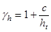
где с - параметр, определяемый по табл. 13; при с > ht принимается с = ht, т.е. gh = 2,0; ht - высота растянутой зоны сечения, см, определяемая в предположении линейно-упругой работы материала.
Таблица 13(14)
|
В5 |
В7?5 |
В10 |
В12,5 |
В15 |
В20 |
В25 |
В30 |
В35 |
В40 |
|
|
с, см |
8,0 |
7,9 |
7,7 |
7,5 |
7,3 |
6,7 |
6,1 |
5,5 |
4,9 |
4,4 |
Коэффициент gsh для прямоугольного, кругового, крестового сечений, а также для таврового с полкой в сжатой зоне принимается равным 1,0.
Для таврового сечения с полкой в растянутой зоне, для коробчатых двутавровых сечений, а также для кольцевого сечения коэффициент gsh вычисляется по формуле
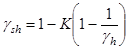
где К - коэффициент, зависящий от соотношения размеров сечения; gh - коэффициент, определяемый по формуле (5).
Для кольцевого сечения коэффициент К равен отношению внутреннего и наружного диаметров. Для таврового сечения с полкой в растянутой зоне, для коробчатого и двутаврового сечений коэффициент К рассчитывается:
при
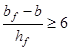
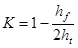
при
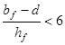
В случаях действия в расчетных сечениях значительных по величине поперечных сил, когда вероятно образование наклонных трещин, рекомендуется производить проверку прочности бетонных элементов по главным растягивающим напряжениям из условия
glcgnsmt £ gcgbRbt, (8)
где smt - главное растягивающее напряжение в бетоне, действующее по наклонным площадкам.
Главные растягивающие напряжения определяются на уровне нейтральной оси, на уровне центра тяжести сечения, а также в местах резкого изменения ширины сечения, что характерно для тавровых, двутавровых, крестовых, коробчатых и других сечений.
Так как в этих зонах элемента имеет место сложное напряженное состояние, коэффициент gb необходимо рассчитывать по формуле
gb = gb4gb5, (9)
где gb4 - по табл. 7; gb5 - коэффициент условий работы бетона, учитывающий влияние на его прочность двухосного сложного напряженного состояния сжатие-растяжение, определяется по формуле (см. табл. 7)
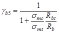
где smc - главное сжимающее напряжение в рассматриваемой точке.
Главные растягивающие и сжимающие напряжения в бетоне вычисляются по формуле
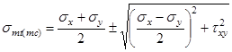
где sx - нормальное напряжение в бетоне на площадке, перпендикулярной продольной оси элемента; sу - нормальное напряжение в бетоне на площадке, параллельной продольной оси элемента; tху - касательные напряжения в бетоне.
Напряжения sx, sу, tху определяются в предположении упругой работы бетона. Напряжения sx и sу подставляются в формулу (11) со знаком «плюс», если они растягивающие, и со знаком «минус» - если сжимающие. Напряжения smc в формуле (10) принимаются по абсолютной величине.
Внецентренно сжатые элементы
3.4 (5.4). Внецентренно сжатые элементы бетонный конструкций рассчитываются в предположении линейно-упругой работы бетона (рис. 3) из условия ограничения значений краевых сжимающих и растягивающих напряжений по формулам:
а) при расчете без учета сопротивления растянутой зоны сечения:
glcgnsb £ jgcgbRb, (12)
где sb - краевое сжимающее напряжение; j - коэффициент, учитывающий влияние гибкости элемента; принимается по табл. 14.
Рис. 3. Схема усилий и эпюра напряжений в сечении, нормальном к продольной оси внецентренно сжатого бетонного элемента
а - без учета сопротивления растянутой зоны сечения, б - то же с учетом сопротивления
Для сечений, симметричных относительно плоскости изгиба, напряжения sb определяются по формуле
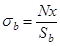
где х = (Jb/Sb + y - ео) - высота сжатой зоны сечения (здесь Sb и Jb - соответственно статический момент и момент инерции сжатой зоны сечения относительно оси, проходящей по границе сжатой зоны; у - расстояние от центра тяжести сечения до его наиболее напряженной грани).
Таблица 14(15)
|
Значения lo/b для сечения прямоугольной формы |
Значения lo/r для сечения произвольной формы |
Коэффициент j |
|
До 4 |
До 14 |
1,0 |
|
4 |
14 |
0,98 |
|
6 |
21 |
0,96 |
|
8 |
28 |
0,91 |
|
10 |
35 |
0,86 |
Примечание. lo - расчетная длина элемента, b - наименьший размер прямоугольного сечения, r - наименьший радиус инерции сечения.
Прямоугольные сечения рассчитываются по формуле
glcgnN £ 1,5jgcgb(0,5 - h)RbA, (14)
где А = bh - площадь поперечного сечения элемента; h = eo/h - относительный эксцентриситет приложения нагрузки.
В элементах прямоугольного сечения, рассчитываемых по формулам (12) и (14), значение эксцентриситета расчетного усилия относительно центра тяжести сечения не должно превышать 0,6у при основном сочетании нагрузок и при особом сочетании нагрузок, не включающем сейсмические воздействия, и 0,65у - при особом сочетании нагрузок, включающем сейсмические воздействия.
Внецентренно сжатые бетонные элементы двутаврового, таврового, коробчатого и другой формы поперечного сечения, отличающейся от прямоугольника, при эксцентриситетах, выходящих за пределы ядра сечения, а также элементы прямоугольного сечения при е > 0,6у (или е > 0,65у) должны проверяться по условию недопущения образования продольных трещин откола
glcgnsbt £ jgcghgbRbt, (15)
где sbt - растягивающее напряжение, действующее по продольным площадкам на границе сжатой зоны.
Растягивающие напряжения sbt, а также высота зоны hyt, в пределах которой они действуют, определяются в общем случае расчетом МКЭ.
Для элементов прямоугольного сечения, изготовленных из бетона класса В20 и выше, проверку по условию недопущения образования продольных трещин откола можно не делать, если выполняется условие
glcgnsbt £ 12jgcgbRbt, (16)
б) при расчете с учетом сопротивления растянутой зоны сечения:
glcgn 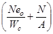
glcgn 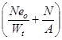
где Wt, Wc - моменты сопротивления соответственно для растянутой и сжатой граней сечения; gh, gsh - коэффициенты, определяемые по п. 3.3.
При определении коэффициентов gh и gsh высота растянутой зоны сечения находится в предположении упругой работы материала. Для элементов прямоугольного сечения
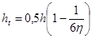
По формуле (17) следует рассчитывать также внецентренно сжатые бетонные конструкции с однозначной эпюрой напряжений - при eo £ Wt/A.
Формулы (4), (12)-(18) составлены для элементов с постоянной высотой сечения (т. с. призматических стержней). Этими формулами можно пользоваться и в том случае, когда угол между гранями элемента q £ arctg 0,2 » 11°. В этом случае напряжения на гранях элемента в нормальном к его оси сечении отличаются от краевых главных напряжений не более чем на 5 %, что допустимо в статическом расчете.
В практических расчетах элементов бетонных конструкций приходится иметь дело со случаями, когда в расчетной схеме ось элемента не параллельна одной или обеим граням (см. рис. 2) и нельзя пренебречь углами q1 и q2. При этом без учета противодавления воды в сечении i-i формулы (17) и (18) заменяются следующими:
glcgn 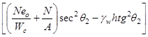
glcgn 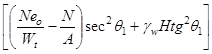
где gw - объемный вес воды; Н, h - заглубления соответственно верховой и низовой точек расчетного сечения (см. точки А и В на рис. 2) под уровнями воды верхнего и нижнего бьефов. Расчетная длина элемента lо принимается в зависимости от характера закрепления его концов по табл. 15.
Для арок расчетная длина элемента lо определяется умножением геометрической длины по оси арки l на коэффициент j2, вычисляемый по формулам:
а) для бесшарнирных арок с жестко заделанными пятами
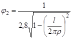
б) для двухшарнирных арок
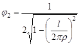
где r - радиус дуги, проведенный через центры тяжести замкового и пятового сечений арки.
Таблица 15
|
Расчетная длина момента lо |
|
|
При полном защемлении обоих концов |
05l |
|
При полном защемлении одного конца и шарнирно неподвижном закреплении другого |
0,7l |
|
При шарнирно неподвижном закреплении обоих концов |
l |
|
При одном полностью защемленном и одном свободном конце |
2l |
|
Примечание. l - геометрическая длина элемента по его оси. |
|
3.5 (5.5). При расчете гибких бетонных элементов (при lо/b > 12 или lо/r > 35) учитывается влияние длительного действия нагрузки на несущую способность конструкции в соответствии со СНиП 2.03.01-84 [2] с введением расчетных коэффициентов, принятых в СНиП 2.06.08-87 [1].
Примеры расчета к пп. 3.1-3.5
Пример 2. Дано. В бетонной плите (gb = 0,9) прямоугольного сечения (gsh = 1,0) шириной b = 200 см и высотой h = 40 см, являющейся элементом гидроэнергетического сооружения (gс = 1,0) II класса (gn = 1,20), при действии нагрузок основного сочетания (glс = 1,0) возникает изгибающий момент М = 0,06 МН×м (6,12 тс×м).
Требуется подобрать класс бетона по прочности на сжатие для изготовления плиты.
Расчет. Решим уравнение (4) относительно Rbt:
.
Определим геометрические характеристики поперечного сечения плиты:
ht = 0,5h = 20 см;
= 0,0533 м3.
Так как значение коэффициента gh зависит от класса бетона по прочности на сжатие, предварительно принимаем, что плита изготовлена из бетона класса В25. По табл. 13 находим, что для бетона этого класса с = 6,1 см. В этом случае по формуле (5)
.
В итоге имеем
МН/м2 = 1,155 МПа.
Ближайшее к полученному значению расчетное сопротивление бетона осевому растяжению Rbt = 1,20 МПа соответствует классу бетона В30. Так как для бетона класса В30 параметр с = 5,5 см, т.е. несколько меньше принятого при определении коэффициента gh требуется выполнить поверочный расчет прочности плиты:
;
1,20×1,0×0,06 < 1×0,9×1,275×1,20×0,0533;
0,0720 < 0,0735.
Условие прочности плиты соблюдается, поэтому окончательно принимаем для его изготовления бетон класса В30.
Пример 3. Дано. В бетонной балке (gb = 0,9) двутаврового поперечного сечения (рис. 4), изготовленной из бетона класса В30 (Rbt = 1,2 МПа, Rb = 17 МПа) и являющейся элементом энергетического сооружения II класса (gс = 1,0; gп = 1,20), при действии нагрузок основного сочетания (glc = 1,0) возникают изгибающий момент М= 0,055 МН×м (5,61 тс×м) и перерезывающая сила Q = 0,06 МН (6,12 тc).
Требуется проверить прочность балки.
Расчет. Определим вначале геометрические характеристики сечения.
А = A1 + A2 + A3 = 0,4×0,2 + 0,15×0,55 + 0,60×0,15 = 0,2525 м2;
Рис. 4. К примеру расчета 3. Размеры, м.
S = A1y1 + A2y2 + A3у3 = 0,08×0,80 + 0,0825×0,425 + 0,09×0,075 = 0,106 м3;
м;
;
м3;
ht = yt = 0,42 м (только при изгибе);
; .
Определим далее коэффициенты gh и gsh. Для бетона класса В30 с = 5,5 см (см. табл. 13). Тогда по (5) gh = 1 + 5,5/42 = 1,13.
По номограмме прил. 5 находим при hf/ht = 0,36 и bf - b/hf = 3,0, K = 0,41. Тогда по формуле (6) gsh = 1 - 0,41 (1 - 1/1,13) = 0,95.
Подставив найденные величины в формулу (4), проверяем условные прочности нормального сечения
1,2×1,0×0,055 < 1,0×0,9×1,13×0,95×1,20×0,059;
0,0660 < 0,0684.
Условие прочности на действие изгибающего момента выполняется.
Поскольку в расчетном сечении балки имеет место одновременное действие изгибающего момента и перерезывающей силы, а поперечное сечение балки имеет сложную форму, требуется проверка прочности балки на восприятие главных растягивающих напряжений. Наиболее опасными с точки зрения образования трещин от действия главных растягивающих напряжений являются зоны стенки балки на уровне нейтральной оси (точка А) и на уровне верха растянутой полки (точка В).
В точке А: sх = 0, sу = 0.
МПа,
где SAo = 0,4×0,2×0,38 + 0,15×0,28×0,14 = 0,0363 м3 - статический момент относительно нейтральной оси части площади поперечного сечения балки, расположенной выше (ниже) точки, в которой определяются касательные напряжения; bA - ширина сечения на уровне рассматриваемой точки.
smt = smc = txy = ± 0,586 МПа.
По формуле (10)
;
glcgnsmt = 1,0×1,2×0,586 = 0,703 МПа < gсgb4gb5Rbt = 1,0×0,9×0,935×1,2 = 1,01 МПа.
Условие прочности по главным растягивающим напряжениям на уровне нейтральной оси выполняется.
В точке 5:
МПа, sу = 0;
= 0,60×0,15×0×345 = 0,031 м3;
МПа;
МПа;
По формуле (10)
;
glcgnsmt = 1,0×1,2×0,883 = 1,06 МПа = gcgb4gb5Rbt = 1,0×0,9×0,98×1,2 = 1,06 МПа.
Условие прочности по главным растягивающим напряжениям на уровне верхней грани растянутой полки также выполняется.
Пример 4. Дано. Бетонная конструкция башенного типа энергетического сооружения (gс = 1,0) II класса (gn = 1,20), горизонтальное сечение которой представлено на рис. 5, изготовлена из бетона класса В15 (Rb = 8,5 МПа, Rbt = 0,75 МПа), при основном сочетании нагрузок (glс = 1,0) воспринимает равномерное боковое давление интенсивностью q = 0,252 МПа (боковое давление грунта qн = 0,210 МПа, gf = l,2 - коэффициент надежности по нагрузке). Элемент не подвержен действию агрессивной воды и не воспринимает напор воды. Трещины в растянутых зонах элемента допускаются.
Требуется проверить прочность сечения I-I.
Расчет. Статический расчет выполняем для 1 м длины элемента (b = 1 м).
Из статического расчета элемента как рамы с жесткими вставками находим для сечения I-I:
МН×м;
МН.
Сечение I-I внецентренно сжато с эксцентриситетом относительно центра тяжести сечения
Рис. 5. Расчетная схема к примерам 4-6. Размеры, м.
м.
Так как концы стержней рамы полностью защемлены в жесткие вставки, то в соответствии с табл. 15 расчетную длину элемента принимаем равной
lо = 0,5l = 0,5×6 = 3,0 м.
При lo/h = 3/2 = 1,5 < 4 принимаем в соответствии с табл. 14 j = 1,0.
Рассматриваемый элемент безнапорный, не подвержен действию агрессивной воды и рассчитывается без учета сопротивления растянутой зоны сечения, поэтому в соответствии с табл. 7 gb4 = 1,2.
По формуле (14) настоящего Пособия проверяем прочность сечения I-I
1,0×1,2×1,26 = 1,51 МН < 1,5×1,0×1×1,2×8,5×2,0 = 6,12 MH.
Условие прочности сечения I-I выполнено с большим запасом. Проверяем далее условие ограничения эксцентриситета приложения нагрузки
eо = 0,6 м = 0,6 у = 0,6 = 0,6 = 0,6 м.
Условие ограничения эксцентриситета приложения нагрузки выполняется, но без запаса. Поэтому запас прочности конструкции не может быть уменьшен за счет уменьшения толщины стен конструкции (что привело бы к увеличению эксцентриситета приложения нагрузки). Это можно сделать только путем подбора класса бетона.
Пример 5. Дано. Элемент бетонной конструкции башенного типа энергетического сооружения (gс = 1,0) II класса (gn = 1,2), горизонтальное сечение которого представлено на рис. 5, при основном сочетании нагрузок (glc = 1,0) воспринимает равномерное боковое давление грунта интенсивностью q = 0,3 МПа. Трещины в растянутых зонах элемента не допускаются.
Требуется по условию прочности сечения I-I подобрать класс бетона конструкции
Расчет.
МН×м;
МН;
м;
;
м.
При определении коэффициента gh, предполагаем, что рассматриваемая конструкция изготовлена из бетона класса В15 (Rbt = 0,75 МПа). Тогда с = 7,3 см; gh = 1 + 7,3/44,5 = 1,16. Так как сечение элемента прямоугольное, то gsh = 1,0.
Уравнение (18) для элемента прямоугольного сечения можно представить в виде
.
Решив его относительно Rbt, получим
МПа.
Ближайшее к полученному значению расчетное сопротивление бетона осевому растяжению Rbt = 0,75 МПа соответствует классу бетона В15. Этот класс бетона может быть принят для изготовления рассматриваемой конструкции.
Проверим соответствие выбранного класса бетона прочности сжатой зоны сечения I-I в предположении наличия трещин в растянутой зоне. Проверку осуществляем по формуле (14) настоящего Пособия
1,0×1,2×1,5 = 1,8 МН < 1,5×1×0,9 (0,5 - 0,3)×8,5×2×1 = 4,59 MH.
Условие прочности сжатой зоны сечения I-I выполнено со значительным запасом даже в предположении появления трещин в растянутой зоне.
Пример 6. Дано. Конструкция энергетического сооружения, аналогичная рассмотренной в примере 5 (высота сечения h = 2 м). Отличие состоит в том, что боковое давление интенсивностью р = 0,3 МПа создается давлением воды на наружные грани (gb = 0,9).
Требуется оценить возможность возведения конструкции, из класса В15 без армирования.
Рис. 6. К примеру расчета 6
а, б - соответственно первый и второй этапы расчета. Размеры, м.
Экспериментальными исследованиями установлено, что для производственного состава бетона класса В15 коэффициент эффективной площади противодавления следует принять равным: a2b = 1,0 - в пределах растянутой зоны сечения и в пределах трещины; a2b = 0,3 - в пределах сжатой зоны сечения.
Рассмотрим сечение I-I (см. рис. 5). В этом сечении от действия гидростатического давления воды возникают усилия:
N = 1,5MH; М = 0,9 МН×м (см. пример 5).
Рассматриваемое сечение является внецентренно сжатым с эксцентриситетом еo = 0,6 м. Высота растянутой зоны сечения ht = 0,445 м; х = 1,55 м.
Так как элемент подвержен давлению воды, следует уточнить возникающие в нем усилия путем учета противодавления в расчетных сечениях. Вначале конструкцию рассматриваем как трещиностойкую. Усилие противодавления в ней определяем в соответствии с указанием п. 1.8 Пособия.
Эпюру гидростатического давления принимаем изменяющейся по линейному закону от р¢ = 0,3 МПа - на наружной грани, до р" = 0 - на внутренней грани (рис. 6, а). На нейтральной оси р = 0,234 МПа.
Усилия в сечении I-I от действия противодавления равны:
0,119 + 0,055 = 0,174 МН;
Мw = 0,234×0,445×1,0(1 - 0,222) + (0,3 - 0,234)×0,445×1,0× +
+ × 0,07×1,555×1,0×(1,0 - 0,445 - ×1,555) =
0,0995 МН×м.
0,07×1,555×1,0×(1,0 - 0,445 - ×1,555) =
0,0995 МН×м.
От совместного действия гидростатического давления и противодавления в сечении I-I имеют место усилия:
N = 1,5 - 0,174 = 1,326 МН;
М = 0,9 + 0,0955 = 0,9955 МН м.
Сечение остается внецентренно сжатым. При этом эксцентриситет приложения нагрузки
м;
.
Проверим прочность растянутой зоны сечения. Высота растянутой зоны сечения
м.
Тогда gh = 1 + 7,3/55,6 = 1,13. Подставив полученные значения в формулу (18) Пособия, получим
= 0,933 > 1×1×1,13×1×0,9×0,75 = 0,763.
Растянутая зона сечения I-I рассмотренной конструкции не отвечает условию прочности.
Проверим далее прочность сжатой зоны в предположении образования трещин в растянутой зоне. Вначале уточним усилия от противодавления в расчетном сечении.
Для внецентренно сжатого элемента прямоугольного сечения глубина трещины lt может быть определена по формуле
lt = 0,5h(6h - 1).
В рассматриваемом примере
lt = 0,5×2(6×0,375 - 1) = 1,25 м.
Эпюра распределения гидростатического давления в сечении с трещиной представлена на рис. 6, б.
Усилия в сечении I-I от действия противодавления равны:
0,3×0,3 (2 - 1,25)×1 = 0,375 + 0,034 = 0,409 МН;
Мw = 0,375×+ 0,034× = 0,219 - 0,017 = 0,202 МН×м.
От совместного действия гидростатического давления и противодавления в сечении I-I имеют место усилия:
N = 1,5 - 0,409 = 1,091 МН;
М = 0,9 + 0,202 = 1,102 МН×м.
Сечение внецентренно сжато с эксцентриситетом
м;
.
Расчет, выполненный с учетом противодавления, показывает, что данная конструкция не может быть выполнена бетонной, так как образование трещины в ее растянутой зоне приводит к разрушению конструкции (сжимающее усилие не может быть уравновешено работой бетона сжатой зоны сечения, так как h > 0,5). Поэтому данную конструкцию следует проектировать железобетонной.
Пример 7. Дано. Бетонная подпорная стена энергетического сооружения (gс = 1,0) III класса (gп = 1,15) возведена из бетона класса В 12,5 (Rb = 7,5 МПа, Rbt = 0,66 МПа). Высота стены 10 м, высота сечения у основания h = 3,6 м. Статическим расчетом установлено, что в сечении у основания стены суммарные усилия при основном сочетании нагрузок (glc = 1,0) составляют: М = 1,47 МН×м, N = 0,7 МН. По условиям эксплуатации трещины не допускаются.
Требуется проверить прочность стены.
Расчет. Рассматриваемый элемент конструкции внецентренно сжат с эксцентриситетом
м;
.
Так как по условиям эксплуатации трещины не допускаются, расчет производим с учетом работы бетона растянутой зоны (gb = 0,9 - см. табл. 7).
A = bh = 1×3,6 = 3,6 м2; Wt = Wc = = 2,16 м3;
lo = 2l = 2×10 = 20 м; ; j = 0,964 (см. табл. 14);
с = 7,5 см (см. табл. 13);
ht = 0,5h = 0,5×3,6×() = 1,29 м;
; gsh = 1,
(сечение прямоугольное).
Для растянутого волокна условие прочности проверяем по формуле (18) настоящего Пособия:
1,0×1,15× МПа < 0,964×1,0×1,058×1×0,9×0,66 = 0,60 МПа.
Условие прочности растянутой зоны выполняется.
Для сжатого волокна условие прочности проверяем по формуле (17):
1,0×1,15× МПа < 0,964×1×0,9×7,5 = 6,5 МПа.
Условие прочности сжатой зоны выполняется с большим запасом.
Пример 8. Дано. Бетонная конструкция энергетического сооружения (gс = 1,0) I класса (gп = 1,25) - прямоугольная плита 5´5 м толщиной 1 м, ослабленная круглым отверстием диаметром 1,6 м (рис. 7), изготовлена из бетона класса В20 (Rb = 11,5 МПа, Rbt = 0,9 МПа). При основном сочетании нагрузок (glc = 1,0) рх = 0,76 МПа, ру = 2,90 МПа. Конструкция не воспринимает напор воды и не подвержена действию агрессивной среды. Возникновение трещин не допускается (gb = 0,9).
Требуется проверить прочность конструкции.
Рис. 7. К примеру расчета 8
Рис. 8. К примеру расчета 9
Расчет. Конструкция представляет собой балку-стенку, предельное состояние которой не может быть выражено через усилия в каких-либо сечениях. В этом случае проверку прочности выполняем по максимальным главным сжимающим и растягивающим напряжениям. При lх : 2r = lу : 2r = 5:1,6 = 3,1 > 3,0 размеры плиты можно принимать бесконечно большими. В этом случае напряженное состояние может быть определено по классическому решению теории упругости (задача Кирша).
Наибольшие значения главных сжимающих напряжений (в точке А)
МПа.
Наибольшие значения главных растягивающих напряжений (в точке В)
МПа.
Критерии прочности в соответствии с п. 1.2
glcgnsmc £ gbRb;
1,0×1,25×7,94 = 9,9 МПа < 0,9×11,5 = 10,35 МПа;
glcgnsmt £ gbRbt;
1,0×1,25×0,62 = 0,77 МПа < 0,9×0,9 = 0,81 МПа.
Условия прочности удовлетворяются. В зоне действия главных растягивающих напряжений рекомендуется поставить конструктивную арматуру 4Æ20 A-II на 1 м длины.
Пример 9. Дано. В сечении i-i высотой h = 3,0 м конструкции докового типа (рис. 8) энергетического сооружения (gс = 1,0) II класса (gn = 1,2), изготовленной из бетона класса В20 (Rb = 11,5 МПа, Rbt = 0,9 МПа), при основном сочетании нагрузки (glc = 1,0) имеют место усилия: М = 0,80 МН×м; Nc = 0,90 МН; Q = 0,80 MH.
Требуется установить возможность изготовления данной конструкции бетонной (gb = 0,9) без установки рабочей арматуры.
Расчет.
Проверяем условие прочности растянутого волокна. Для бетона класса В20 с = 6,7 см. При h = 300 см и
м;
м.
Тогда gh = 1 + c/ht = 1 + 6,7/66 = 1,1. Для элементов прямоугольного сечения gsh = 1,0. По формуле (18) находим:
1,0×1×2 = 0,28 МПа < 1,0×1,0×1,1×0,9×0,9 = 0,89 МПа.
Проверим далее условие прочности сжатого волокна по формуле (17):
1,0×1×2 = 0,995 МПа < 1,0×1,0×0,9×11,5 = 10,35 МПа.
Условия прочности растянутого и сжатого волокон выполняются с большим запасом.
Так как в сечении i-i действует значительная перерезывающая сила, требуется выполнить расчет прочности по главным растягивающим напряжениям для точек, расположенных на нейтральной оси и в центре тяжести сечения. Нейтральная ось расположена на расстоянии 66 см (gо = ht = 0,66 м), центр тяжести - на расстоянии 1,5 м от подошвы фундаментной плиты.
На нейтральной оси:
sx = 0; sу = - 0,02 МПа - по данным расчета МКЭ;
So = 0,66×1,0×(1,5 - 0,33) = 0,771 м3;
МПа;
smt = -0,01 + = 0,264 МПа; smc = - 0,274 МПа.
По формуле (10)
;
glcgnsmt = 1,0×1,2×0,264 = 0,318 МПа < gсgb4gb5Rbt = 1×0,9×0,925×0,9 = 0,75 МПа.
В центре тяжести сечения
МПа.
sy = -0,18 МПа - по данным расчета МКЭ;
Sо = 1,5×1,0×0,75 = 1,235 м3;
МПа.
smc = -0,24 - 0,47 = -0,71 МПа;
;
glcgnsmt = 1,0×1,2×0,23 = 0,276 МПа < gсgb4gb5Rbt = 1,0×0,9×0,81×0,9 = 0,656 МПа.
Условия прочности сечения i-i по главным растягивающим напряжениям также выполняются со значительным запасом/ Следовательно, сечение i-i можно принять бетонным.
Пример 10. Дано. В сечениях I-I, II-II,… V-V бетонной конструкции водосброса (gb = 0,9) энергетического сооружения (gс = 1,0) методом конечных элементов определены краевые значения главных сжимающих напряжений smc, МПа (рис. 9). Напряжения по сечениям изменяются практически по линейному закону. Класс сооружения I (gn = 1,25); сочетание нагрузок основное (glс = 1,0).
Требуется определить необходимую марку бетона по прочности на сжатие.
Рис. 9. К примеру расчета 10. Размеры, м
Расчет. Наибольшее значение главных сжимающих напряжений smc = 10,5 МПа имеет место в сечении III-III.
Углы наклона граней qi меньше 10° и ими можно пренебречь.
Решив уравнение (12) относительно Rb, получим
МПа.
Указанному условию отвечает бетон В25 (Rb = 14,5 МПа).
Расчет железобетонных элементов на прочность
3.6 (5.7). Расчет на прочность железобетонных элементов производится для сечений, нормальных к их продольной оси, а также для наклонных к оси сечений наиболее опасного направления. При наличии крутящих моментов проверяется прочность пространственных сечений, ограниченных в растянутой зоне спиральной трещиной наиболее опасного из возможных направлений. Кроме того, производится расчет элементов на местное действие нагрузки (смятие, продавливание, отрыв) согласно пп 3.61-3.62.
3.7 (5.8). При установке в сечении арматуры разных видов и классов в расчет прочности вводится арматура с соответствующими расчетными сопротивлениями.
Расчет на прочность сечений, нормальных к продольной оси элемента
3.8 (5.9). Предельные усилия в сечении, нормальном к продольной оси элемента, определяются исходя из следующих предпосылок: сопротивление бетона растяжению принимается равным нулю, сопротивление бетона сжатию равно Rb и распределено равномерно по сжатой зоне бетона, растягивающие напряжения в арматуре принимаются не более Rs, сжимающие - не более Rsc.
3.9 (5.10). Для изгибаемых, внецентренно сжатых и внецентренно растянутых с большими эксцентриситетами элементов расчет сечений, нормальных к продольной оси элемента, когда внешняя сила действует в плоскости оси симметрии сечения и арматура сосредоточена у перпендикулярных к указанной плоскости граней элемента, производится в зависимости от соотношения между относительной высотой сжатой зоны x = x/ho, определяемой из условия равновесия, и граничным значением относительной высоты сжатой зоны xR, при котором предельное состояние элемента наступает одновременно с достижением в растянутой арматуре напряжения, равного расчетному сопротивлению Rs, с учетом соответствующих коэффициентов.
Граничные значения допускается принимать по табл. 16.
Таблица 16(16)
|
Граничные значения xR при классе бетона |
|||
|
В15 и ниже |
В20, В25, В30 |
В35 и выше |
|
|
А-I |
0,70 |
0,65 |
0,60 |
|
A-II, А-III, Вр-I |
0,65 |
0,60 |
0,50 |
3.10 (5.11). Если высота сжатой зоны бетона, определяемая без учета сжатой арматуры, меньше 2а¢, то сжатую арматуру в расчете можно не учитывать. Для массивных конструкций при высоте сжатой зоны бетона больше 2а¢, но значительно меньше величины xR ho рекомендуется определять количество растянутой продольной арматуры без учета поставленной в сжатой зоне бетона арматуры. Расчетную сжатую арматуру рекомендуется применять при ограниченной высоте сечения, невозможности повышения класса бетона или при каких-либо особых требованиях.
Изгибаемые элементы
3.11 (5.12). Расчет изгибаемых железобетонных элементов любой симметричной формы (рис. 10, а) при x £ xR производится по формулам:
glcgnМ £ gс(gbRbSb + gsRscSs); (24)
gsRsАs - gsRscАs¢ = gbRbАb. (25)
Расчет прямоугольных сечений
3.12. (5.13). Изгибаемые элементы прямоугольного сечения (рис. 10, б) рассчитываются при x £ xR по формулам:
glcgnМ £ gс[(gbRbbx(ho - 0,5x) + gsRscA¢s(ho - a¢)]; (26)
gsRsАs - gsRscАs¢ = gbRbbx. (27)
При x > xR расчет элементов производится по тем же формулам при х = xR hо.
3.13. Площадь сечения продольной арматуры определяется следующим образом.
Вычисляется высота сжатой зоны сечения из условия (26) при A¢s = 0
Далее различают следующие схемы расчета:
1) в случае, если х < 2а¢, расчет производится как для сечения с одиночной арматурой при A¢s = 0 по формуле
2) в случае, если 2а¢ £ x £ xRho, при известной площади сечения сжатой арматуры A¢s высота сжатой зоны бетона уточняется по формуле
Рис. 10. Схема усилий и эпюра напряжений в сечении, нормальном к продольной оси изгибаемого железобетонного элемента, при расчете его на прочность
а - сечение любой симметричной формы; б - прямоугольное сечение
Площадь сечения растянутой арматуры определяется из условия
Если высота сжатой зоны, найденная по формуле (30), х < 2а¢, а сечение A¢s неизвестно или равно As (сечение с симметричной арматурой), количество продольной арматуры допускается определять по формуле
3) в случае, если х > xRho, рекомендуется увеличить высоту сечения, повысить класс бетона или поставить сжатую арматуру в количестве
Растянутая продольная арматура в этом случае определяется по формуле
3.14. Подбор площади продольной арматуры можно производить по табл. 17 следующим образом.
Вычисляется значение am:
Если £ aR = xR(1 - 0,5xR), сжатая арматура по расчету не требуется.
В зависимости от значения am по табл. 17 определяется и вычисляется
Таблица 17
|
z |
am |
x |
z |
am |
x |
z |
am |
|
|
0,01 |
0,995 |
0,01 |
0,26 |
0,870 |
0,226 |
0,51 |
0,745 |
0,380 |
|
0,02 |
0,990 |
0,02 |
0,27 |
0,865 |
0,234 |
0,52 |
0,740 |
0,385 |
|
0,03 |
0,985 |
0,03 |
0,28 |
0,860 |
0,241 |
0,53 |
0,735 |
0,390 |
|
0,04 |
0,980 |
0,039 |
0,29 |
0,855 |
0,248 |
0,54 |
0,730 |
0,394 |
|
0,05 |
0,975 |
0,049 |
0,30 |
0,850 |
0,255 |
0,55 |
0,725 |
0,399 |
|
0,06 |
0,970 |
0,058 |
0,31 |
0,845 |
0,262 |
0,56 |
0,720 |
0,403 |
|
0,07 |
0,965 |
0,068 |
0,32 |
0,840 |
0,269 |
0,57 |
0,715 |
0,407 |
|
0,08 |
0,960 |
0,077 |
0,33 |
0,835 |
0,276 |
0,58 |
0,710 |
0,412 |
|
0,09 |
0,955 |
0,086 |
0,34 |
0,830 |
0,282 |
0,59 |
0,705 |
0,416 |
|
0,10 |
0,950 |
0,095 |
0,35 |
0,825 |
0,289 |
0,60 |
0,70 |
0,420 |
|
0,11 |
0,945 |
0,104 |
0,36 |
0,820 |
0,295 |
0,62 |
0,69 |
0,428 |
|
0,12 |
0,940 |
0,113 |
0,37 |
0,815 |
0,302 |
0,64 |
0,68 |
0,435 |
|
0,13 |
0,935 |
0,122 |
0,38 |
0,810 |
0,308 |
0,68 |
0,67 |
0,442 |
|
0,14 |
0,930 |
0,130 |
0,39 |
0,805 |
0,314 |
0,68 |
0,66 |
0,448 |
|
0,15 |
0,925 |
0,139 |
0,40 |
0,800 |
0,320 |
0,70 |
0,65 |
0,455 |
|
0,16 |
0,920 |
0,147 |
0,41 |
0,795 |
0,326 |
0,72 |
0,64 |
0,461 |
|
0,17 |
0,915 |
0,158 |
0,42 |
0,790 |
0,332 |
0,74 |
0,63 |
0,466 |
|
0,18 |
0,910 |
0,164 |
0,43 |
0,785 |
0,338 |
0,76 |
0,62 |
0,471 |
|
0,19 |
0,905 |
0,172 |
0,44 |
0,780 |
0,343 |
0,78 |
0,61 |
0,476 |
|
0,20 |
0,900 |
0,180 |
0,45 |
0,775 |
0,349 |
0,80 |
0,60 |
0,480 |
|
0,21 |
0,895 |
0,188 |
0,46 |
0,770 |
0,354 |
0,85 |
0,575 |
0,489 |
|
0,22 |
0,890 |
0,196 |
0,47 |
0,765 |
0,360 |
0,90 |
0,550 |
0,495 |
|
0,23 |
0,885 |
0,204 |
0,48 |
0,760 |
0,365 |
0,95 |
0,525 |
0,499 |
|
0,24 |
0,880 |
0,211 |
0,49 |
0,755 |
0,370 |
1,00 |
0,5 |
0,5 |
|
0,25 |
0,875 |
0,219 |
0,50 |
0,750 |
0,375 |
|
|
|
Примечание. Для изгибаемых элементов прямоугольного сечения
; am = x(1 - 0,5x); aR = xR(1 - 0,5xR);
z = 1 - 0,5x.
Если am > aR, рекомендуется увеличить высоту сечения или поставить расчетную сжатую арматуру, определяемую по формуле (33), а растянутую - по формуле (34).
При известной площади сечения сжатой арматуры A¢s значение am вычисляется по формуле
, (37)
после чего находится площадь сечения продольной растянутой арматуры
. (38)
3.15. Проверка прочности прямоугольного сечения с одиночной арматурой производится в зависимости, от высоты сжатой зоны х, вычисляемой по формуле (29), следующим образом:
1) при x £ xRho - из условия
glcgnM £ gcgbRbbx(ho - 0,5x); (39)
2) при x > xRho - из условия
glcgnM £ gcgbRbxR(1 - 0,5xR)bho2; (40)
При невыполнении условия (40) рекомендуется увеличить высоту сечения, повысить класс бетона или поставить сжатую арматуру в соответствии с п. 3.13.
3.16. Проверка прочности прямоугольного сечения с двойной арматурой производится в зависимости от высоты сжатой зоны х, вычисляемой по формуле (27)
,
следующим образом:
1) при x £ xRho - из условия (26);
2) при x > xRho - из условия
glcgnM £ gc[gbRbxR(1 - 0,5xR)bho2 + gsRscA¢s(ho - a¢)] (41)
или из условия (27) с подстановкой х = xRho;
3) при х £ 0 - из условия (32)
glcgnM £ gcgsRsAs(ho - a¢).
При невыполнении условий прочности (26), (32), (41) рекомендуется увеличить высоту сечения или повысить класс бетона.
Расчет тавровых (двутавровых) сечений
3.17. Расчет изгибаемых элементов таврового (двутавровогo) сечения производится в зависимости от положения границы сжатой зоны:
а) если граница сжатой зоны проходит в полке (рис. 11, а), т.е. при соблюдении условия
glcgnM £ gcgbRbbf¢hf¢(ho - 0,5hf¢), (42)
расчет выполняется как для прямоугольного сечения шириной в соответствии с пп. 3.12-3.16;
Рис. 11. Форма сжатой зоны в поперечном сечении таврового железобетонного элемента со сжатой полкой
а - при расположении границы сжатой зоны в полке; б - то же в ребре
б) если граница сжатой зоны проходит в ребре (рис. 11, б), т.е. условие (42) не выполняется, расчет производится из условия
glcgnM £ gc[gbRbbx(ho - 0,5x) + gbRb(bf¢ - b)hf¢(ho - 0,5hf¢) + gsRscA¢s(ho - a¢)] (43)
3.18. Подбор площади сечения продольной арматуры производится следующим образом.
Вычисляется высота сжатой зоны бетона при одиночной арматуре по формуле
При x £ xRh необходимая площадь сечения растянутой арматуры определяется по формуле
Если высота сжатой зоны, вычисленная по формуле (44), находится в пределах 2а¢ £ x £ xRho, то при неизвестной площади сечения сжатой арматуры допускается площадь сечения растянутой арматуры As рассчитывать по формуле
(46)
с последующим ее уточнением по формулам (47) и (48).
При заданной площади сечения сжатой арматуры А¢s высота сжатой зоны бетона х определяется по формуле
и при x £ xRho
Если высота сжатой зоны, вычисленная по формулам (44) и (47), х > xRho, рекомендуется увеличить высоту сечения, повысить класс бетона или поставить сжатую арматуру в количестве
В последнем случае количество растянутой продольной арматуры определяется по формуле (48) при х = xRho.
Примечания: 1. При переменной высоте свесов полки допускается принимать значение h¢f равным средней высоте свесов.
2. Ширина сжатой полки h¢f, вводимая в расчет, принимается из условия, что ширина свеса в каждую сторону от ребра должна быть не более 1/6 пролета элемента и не более:
а) при наличии поперечных ребер или при h¢f ³ 0,1h - 1/2 расстояния в свету между продольными ребрами;
б) при отсутствии поперечных ребер или при расстояниях между ними больших, чем расстояние между продольными ребрами, и h¢f < 0,1h - 6h¢f;
в) при консольных свесах полки
при h¢f ³ 0,1h - 6h¢f;
при 0,05h £ h¢f < 0,1h - 3h¢f;
при h¢f < 0,05h - свесы не учитываются.
3.19. Проверка прочности таврового (двутаврового) сечения с одиночной арматурой производится:
а) при gsRsAs £ gbRbb¢fh¢f как для прямоугольного сечения при b = b¢f в соответствии с п. 3.15;
б) при gsRsAs > gbRbb¢fh¢f в зависимости от высоты сжатой зоны, вычисляемой по формуле (45)
,
следующим образом:
1) при х £ xRho из условия
glcgnM £ gc[gbRbbx(ho - 0,5x) + gbRb(bf¢ - b)hf¢(ho - 0,5hf¢)]; (50)
2) при х > xRho из условия
glcgnM £ gc[gbRbxR(ho - 0,5xR)bho2 + gbRb(bf¢ - b)hf¢(ho - 0,5hf¢)]; (51)
При невыполнении условия (51) рекомендуется увеличить высоту сечения, повысить класс бетона или поставить сжатую арматуру в соответствии с п. 3.18.
3.20. Проверка прочности таврового (двутаврового) сечения с двойной арматурой производится:
а) при gsRsAs £ gbRbb¢fh¢f + gsRscA¢s как для прямоугольного сечения шириной b = b¢f соответствии с п. 3.16;
б) при gsRsAs > gbRbb¢fh¢f + gsRscA¢s в зависимости от высоты сжатой зоны, определяемой из формулы (48)
,
следующим образом:
1) при х £ xRho из условия (43);
2) при х > xRho из условия (49):
glcgnM £ gc[gbRbxR (1 - 0,5xR)bho2 + gbRb(bf¢ - b)hf¢(ho - 0,5hf¢) + gsRscA¢s(ho - a¢)];
3) при х £ 0 из условия (32)
glcgnM £ gcgsRsAs(ho - a¢),
При невыполнении условий (32), (43), (49) рекомендуется увеличить высоту сечения или повысить класс бетона.
Примеры расчета к пп. 3.11-3.20
Пример 11. Дано. Изгибаемый железобетонный элемент прямоугольного сечения: gс = 1,0; h = 2,0 м; ho = 1,85 м; а = a¢ = 0,15 м; b = 1,0 м; расчетный изгибающий момент М = 1560 кН×м; бетон класса В15 (Rb = 8,5 МПа, gb = 1,1); арматура класса A-III (Rs = 365 МПа, gs = 1,1); сооружение II класса (gn = 1,2); основное сочетание нагрузок (glс = 1,0).
Требуется определить площадь сечения продольной арматуры.
Расчет. Находим высоту сжатой зоны сечения из условия (28)
= 0,11 м;
< xR = 0,65 (см. табл. 16).
Так как х = 11 см < 2a/ = 30 см, площадь сечения растянутой арматуры определяем из условия (29) без учета сжатой арматуры
= 0,00256 м2 = 25,6 см2.
Принимаем Æ 36 A-III-через 40 см (25,4 см2). Подбор продольной арматуры можно произвести и с помощью табл. 17. Вычисляем значение am по формуле (35)
= 0,0585 < aR,
где
aR = xR (1 - 0,5xR) = 0,6 (1 - 0,5×0,6) = 0,42.
По табл. 17 при am = 0,058 x = 0,970 (п № интерполяции).
Необходимая продольная арматура по формуле (36)
= 0,00259 м2 = 25,9 см2.
Пример 12. Дано. Железобетонный элемент прямоугольного сечения: gс = 1,0; b = 50 см; h = 25 см; a = a¢ = 4,0 см; ho = 21 см; бетон класса В25 (Rb = 14,5 МПа, gb = 1,1); арматура класса A-II (Rs = 280 МПа, gs = 1,1); А¢s = 4,52 см2 (4 Æ 12); M = 95 кН×м; сооружение III класса (gn = 1,15); основное сочетание нагрузок (glc = 1,0).
Требуется определить площадь растянутой арматуры.
Расчет. Высоту сжатой зоны бетона находим из условия (28) без учета площади сжатой арматуры
= 0,0807 м = 8,1 см.
Так как х = 8,1 см > 2a/ = 8 см, следует определять высоту сжатой зоны бетона с учетом сжатой арматуры из условия (30)
= 0,05967 м = 6 см.
Так как x = x/hо = 6/21 = 0,286 < xR = 0,6, площадь растянутой арматуры вычисляем по формуле (31)
см2.
Принимаем Аs = 24,63 см2 (4 Æ 28 A-II).
Пример 13. Дано. Железобетонный элемент прямоугольного сечения: gс = 1,0; b = 50 см; h = 40 см; а = а¢ = 4,0 см; ho = 36 см; бетон класса В25 (Rb = 14,5 МПа, gb = 1,1); арматура симметричная из стали класса A-III (Rs = Rsc = 365 МПа, gs = 1,1); M = 200 кН×м; сооружение III класса (gn = 1,15); основное сочетание нагрузок (glc = 1,0).
Требуется определить площадь сечения арматуры.
Расчет. Находим высоту сжатой зоны по формуле (28) без учета сжатой арматуры
= 0,09182 м = 9,2 см.
Так как х = 9,2 см > 2a/ = 8 см и x < xRho = 0,6×36 = 21,6 см, продольную арматуру подбираем по формуле (32)
= 17,9 см2.
Принимаем As = A¢s = 18,47 см2 (3 Æ 28 A-III).
Пример 14. Дано. Железобетонный элемент прямоугольного сечения: gc = 1,0; b = 50 см; h = 40 см; а = 5 см; а¢ = 3 см; ho = 35 см: бетон класса В25 (Rb = 14,5 МПа, gb = 1,1); арматура класса A-III (Rs = 365 МПа, gs = 1,1); As = 40,72 см2 (4 Æ 36), A¢s = 3,14 см2 (4 Æ 10); M = 300 кН×м; сооружение III класса (gn = 1,15); основное сочетание нагрузок (glс = 1,0).
Требуется проверить прочность сечения.
Расчет. Определяем высоту сжатой зоны бетона по формуле (27)
= 18,9 см.
Так как x = 18,9 см < xRho = 0,6×35 = 21 см, прочность сечения проверяем по условию (26)
1×1,1×200 £ 1×[1,1×14,5×0,5×0,189 (0,35 - 0,5×0,189) + 1,1×365×3,14×10-4(0,35 - 0,03)]×103;
220 кН×м < 425 кН×м, т.е. прочность сечения обеспечена, площадь сечения растянутой арматуры завышена.
Для обеспечения прочности по предельному состоянию первой группы достаточно иметь As (см. пример 12):
при
м.
см2.
Пример 15. Дано. Прямоугольное сечение с одиночной арматурой: gс = 1,0; b = 100 см; h = 80 см; а = 6 см; ho = 74 см; бетон класса В25 (Rb = 14,5 МПа, gb = 1,1); арматура класса A-III (Rs = 365 МПа, gs = 1,1); M = 3300 кН×м; сооружение III класса (gп = 1,15); сочетание нагрузок основное (glc = 1,0).
Требуется определить площадь сечения растянутой арматуры.
Расчет. Высоту сжатой зоны бетона находим по формуле
= 0,47 м = 47,0 см.
Так как x = 47 см > xRho = 0,6×74 = 44,4 см, поставим сжатую арматуру класса A-II. Примем а¢ = 6 см. Площадь сечения сжатой арматуры рассчитываем по формуле (33)
= 6,0 см2.
Примем А¢s = 7,07 см2 (9 Æ 10).
Площадь сечения растянутой арматуры определяем из условия (34)
см2.
Примем As = 176 см2 (14 Æ 40 A-III), m = (As/bho) 100 % = (176/100×74) 100 = 2,4 %. Процент армирования очень велик; арматуру разместить в одном ряду не удается. Увеличим сечение до h = 90 см и примем а = 9,5 см (минимально допустимое значение при двух рядах арматуры d = 40 мм).
При A¢s = 0 по формуле (28)
= 0,39 м;
х = 39 см < xRho = 0,6×80,5 = 48,3 см.
Площадь сечения растянутой арматуры определяем из условия (34)
см2.
Принимаем As = 151 см2 - (2 ряда по 6 Æ 40 A-III);
% = 1,88 %.
Пример 16. Дано. Железобетонный элемент таврового сечения: gс = 1,0; bf¢ = 3 м; hf¢ = 1,2 м; h = 6,0 м; а = a¢ = 0,15 м; ho = 5,85 м; b = 1,5 м; М = 15600 кН×м; бетон класса В15 (Rb = 8,5 МПа, gb = 1,1), арматура класса A-II (Rs = 280 МПа, gs = 1,1); сооружение I класса (gn = 1,25); основное сочетание нагрузок (glc = 1,0).
Требуется подобрать продольную арматуру.
Расчет. Проверяем условие (42)
1×1,25×15600 < 1×1,1×8,5×3×1,2(5,85 - 0,5×1,2)×103;
19500 кН×м < 176715 кН×м.
Так как условие выполняется, т.е. граница сжатой зоны проходит в полке, сечение рассчитывается как прямоугольное шириной b = bf¢ = 3 м.
Высоту сжатой зоны определяем из условия (28)
= 0,12 м;
.
Так как х = 0,12 м < 2а¢ = 0,3 м, площадь сечения растянутой арматуры, определяется без учета сжатой арматуры из условия
см2.
Принимаем 4 Æ 60 A-II (As = 113,1 см2).
Пример 17. Дано. Железобетонный элемент таврового сечения: gc = 1,0; h = 45 см; hf¢ = 15 см; bf¢ = 60 см; b = 30 см; а = а¢ = 5 см; ho = 40 см; бетон класса В30 (Rb = 17,0 МПа, gb = 1,1); арматура из стали класса A-III (Rs = Rsc = 365 МПа, gs = 1,1); расчетные изгибающие моменты: со стороны ребра M1 = 150 кН×м, со стороны полки М2 = 300 кН×м; сооружение III класса (gп = 1,15); сочетание нагрузок основное (glc = 1,0).
Требуется определить площадь сечения продольной арматуры.
Расчет. Находим площадь сечения продольной арматуры в ребре. Проверяем условие (42)
1×1,15×150 < 1×1,1×17×103×0,6×0,15×(0,4 - 0,5×0,15);
173 кН×м < 547 кН×м, т.е. граница сжатой зоны проходит в полке; расчет производим как для прямоугольного сечения шириной b = bf¢ = 0,6 м.
Вычисляем высоту сжатой зоны бетона без учета сжатой арматуры по формуле (28)
= 0,04 м = 4 см.
Так как х = 4, см < 2а¢ = 10 см и х < xRho = 0,5×40 = 20 см, площадь сечения растянутой арматуры в ребре определяем без учета площади сечения сжатой арматуры из условия
см2.
Принимаем As = 12,3 см2 (2 Æ 28 A-III).
Далее определяем площадь сечения продольной арматуры в полке. Расчет проводим как для прямоугольного сечения шириной b = 30 см, так как полка находится в растянутой зоне.
Высоту сжатой зоны определяем по формуле (28) без учета площади сжатой арматуры
= 0,21 м = 21 см.
Так как x = 21 см > 2a/ = 2×5 = 10 cм, следует определять высоту сжатой зоны бетона с учетом площади сжатой арматуры по формуле (30)
= 0,08 м.
Так как x = 8 см < xRho = 0,5×40 = 20 см, площадь сечения растянутой арматуры в полке определяем из условия (31)
см2.
Принимаем Аs = 24,6 см (4 Æ 28A-III).
Пример 18. Дано. Железобетонный элемент таврового сечения: gс = 1,0; h = 70 см; bf¢ = 70 см; hf¢ = 10 см; b = 30 см; а = а¢ = 5 см; ho = 65 см; бетон класса В15 (Rb = 8,5 МПа, gb = 1,1); арматура класса A-III (Rs = Rsc = 365 МПа, gs = 1,1): As¢ = 4,52 см2 (4 Æ 12), As = 24,1 см2 (3 Æ 32); расчетный изгибающий момент со стороны ребра M = 450 кН×м; класс сооружения III (gn = 1,15); сочетание нагрузок основное (glc = 1,0).
Требуется проверить прочность сечения.
Расчет. Определяем положение границы сжатой зоны по п. 3.20. Так как
gsRsAs > gbRbbf¢hf¢ + gsRscAs¢;
1,1×365×103×24,1×10-4 > 1,1×8,5×103×0,7×0,1 + 1,1×365×103×4,52×10-4;
967,6 кН > 835,98 кН, т.е. граница сжатой зоны проходит в ребре.
Высоту сжатой зоны определяем по формуле (48)
x < xRho = 0,60×65 = 39 см.
Прочность сечения проверяем по формуле (43)
1×1,15×450 £ 1[1,1×8,5×103×0,3×0,147 (0,65 - 0,5×0,147) +
+ 1,1×8,5×103(0,7 - 0,3)×0,1×(0,65 - 0,5×0,1) + 1,1×365×103×4,52×10-4(0,65 - 0,05)];
517,5 кН×м < 571,1 кН×м, т.е. прочность сечения обеспечена.
Внецентренно сжатые элементы
3.21 (5.14). Расчет внецентренно сжатых железобетонных элементов любой симметричной формы (рис. 12, а) при x £ xR, производится по формулам:
glcgnNe £ gc(gbRbSb + gsRscSs); (52)
glcgnN = gc(gbRbAb + gsRscAs¢ - gsRsAs). (53)
3.22. (5.15). Внецентренно сжатые элементы прямоугольного сечения (рис. 12, б) рассчитываются при x £ xR по формулам:
glcgnNe £ gc[gbRbbx(ho - 0,5x) + gsRscAs¢(ho - a¢)]; (54)
Рис. 12. Схема усилий и эпюра напряжений в сечении, нормальном к продольной оси внецентренно сжатого железобетонного элемента, при расчете его на прочность
а - сечение любой симметричной формы; б - прямоугольное сечение
glcgnN = gc(gbRbbx + gsRscAs¢ - gsRsAs). (55)
при x > xR по формуле (54) и формулам
glcgnN = gc(gbRbbx + gsRscAs¢ - gsssAs). (56)
3.23. (5.16). Расчет внецентренно сжатых элементов любой формы при гибкости lo/r ³ 35 и элементов прямоугольного сечения при lo/h ³ 10 производится с учетом прогиба элемента. Влияние прогиба учитывается путем умножения эксцентриситета ео = M/N на коэффициент h, определяемый по формуле
где Ncr - условная критическая сила, вычисляемая по формуле
В формуле (59) lо принимается по табл. 15; М1l, M1 - моменты относительно растянутой или наименее сжатой грани сечения соответственно от действия постоянных и длительных нагрузок и от действия постоянных, длительных и кратковременных нагрузок; t - коэффициент, принимаемый равным eo/h, но не менее
tmin = 0,5 - 0,01lо/h - 0,01Rb.
Здесь Rb, МПа.
Для элементов прямоугольного сечения формула (59) имеет вид
где m = (As + As¢)/bhо.
При N > Ncr рекомендуется увеличить размеры сечения.
При расчете из плоскости действия изгибающего момента эксцентриситет продольной силы еo принимается равным значению случайного эксцентриситета eа. В любом случае eо назначается не менее 1/600 длины элемента или расстояния между точками закрепления, учитываемого в расчете, или 1/30 высоты сечения.
Расчет из плоскости действия изгибающего момента допускается не производить, если гибкость элемента в плоскости действия момента превышает гибкость в нормальной к ней плоскости.
Расчет прямоугольных сечений
3.24. Площадь сечения продольной арматуры определяется следующим образом (см. рис. 12, б).
Вычисляется высота сжатой зоны бетона из условия
где е = eоh + h/2 - a (см. п. 3.23).
1) В случае, если х < 2а¢ и x £ xR, расчет производится как для сечения с одиночной арматурой при Аs¢ = 0 по формуле
2) В случае, если 2а¢ £ х £ xRho, при наличии известной сжатой арматуры A¢s уточняется высота сжатой зоны бетона по формуле
Количество растянутой продольной арматуры определяется из условия (55)
.
Если сечение сжатой арматуры неизвестно или равно As (сечение с симметричной арматурой) площадь сечения продольной арматуры допускается рассчитывать по формуле
где е¢ = е - ho + a¢.
3) В случае, если х > xRho, рекомендуется увеличить высоту сечения, повысить класс бетона или поставить сжатую арматуру в количестве
Растянутая продольная арматура в этом случае определяется по формуле
Если As, вычисленная по формуле (66), отрицательна, ее принимают по конструктивным соображениям, а площадь сечения As¢ находят по формуле
. (67)
где xо = 0,85 - 0,008gbRb; Rb, МПа.
3.25. Подбор площади продольной арматуры можно выполнять по табл. 17 следующим образом.
Вычисляется значение am
Если am £ aR = xR(1 - 0,5xR), сжатая арматура по расчету не требуется.
В зависимости от значения am по табл. 17 определяется x и находится Аs
. (69)
Если am > aR, рекомендуется увеличить высоту сечения или поставить расчетную сжатую арматуру, определяемую по формуле (65), и растянутую арматуру, определяемую по формуле (65), и растянутую арматуру, определяемую по формуле (66).
3.26. Проверка прочности прямоугольного сечения с одиночной арматурой производится в зависимости от высоты сжатой зоны х, вычисленной по формуле (62)
,
следующим образом:
1) при x £ xRho - из условия
glcgnNe £ gcgbRbbx(ho - 0,5x); (70)
2) при x > xRho - из условия
glcgnNe £ gcgbRbxR(1 - 0,5xR)bho2; (71)
При невыполнении условия (68) рекомендуется увеличить сечение, повысить класс бетона или поставить сжатую арматуру в соответствии с п. 3.24.
3.27. Проверка прочности прямоугольного сечения с двойной арматурой производится в зависимости от высоты сжатой зоны, вычисляемой по формуле (55)
,
следующим образом:
1) при x £ xRho - из условия (54);
2) при x > xRho - из условия (65)
glcgnNe £ gc[gbRbxR(1 - 0,5xR)bho2 + gsRscAs(ho - a¢)];
или из условия
glcgnNe £ gc[gbRbbx1(ho - 0,5x1)bho2 + gsRscAs¢(ho - a¢)], (72)
где
. (73)
При невыполнении условий (65) и (72) рекомендуется увеличить высоту сечения или повысить класс бетона.
Расчет тавровых (двутавровых) сечений
3.28. Расчет внецентренно сжатых элементов таврового (двутаврового) сечения производится в зависимости от положения границы сжатой зоны:
а) если граница сжатой зоны проходит в пределах полки (см. рис. 11, а), т, е. при соблюдении условия
glcgnNe £ gcgbRbbf¢hf¢(ho - 0,5hf¢); (74)
расчет производится как для прямоугольного сечения шириной b = bf¢ в соответствии с пп. 3.22-3.27;
б) если граница сжатой зоны проходит в ребре (см. рис. 11, б), т.е. условие (74) не соблюдается, расчет производится из условия
glcgnNe £ gc[gbRbbx(ho - 0,5x) + gbRb(bf¢ - b)hf¢(ho - 0,5hf¢) + gsRscAs¢ (ho - a¢)]. (75)
3.29. Подбор продольной арматуры производится следующим образом.
Вычисляется высота сжатой зоны бетона при одиночной арматуре по формуле
При x £ xRho необходимая площадь растянутой арматуры определяется по формуле
При неизвестной площади сечения сжатой арматуры допускается площадь сечения растянутой арматуры As рассчитывать по формуле
, (78)
с последующим ее уточнением по формулам (79) и (80).
При наличии известной сжатой арматуры As¢ высота сжатой зоны определяется по формуле
и при x £ xRho
Если высота сжатой зоны, вычисленная по формулам (76) и (79), x > xRho, рекомендуется увеличить высоту сечения, повысить класс бетона или поставить сжатую арматуру в количестве
Площадь сечения As определяется по формуле (80) при x = xRho.
Если As получается отрицательной, то арматура ставится по конструктивным соображениям или уточняется из условия
, (82)
где х вычисляется по формуле (80), a sa - по формуле (57).
Если sa и As получаются отрицательными, сжатой арматуры As¢ поставлено недостаточно и рекомендуется увеличить сечение или повысить марку бетона.
Если sa отрицательна, a As положительна, арматура принимается по конструктивным соображениям.
3.30. Проверка прочности таврового (двутаврового) сечения с одиночной арматурой производится:
а) при glcgnN + gcgsRsAs £ gcgbRbbf¢hf¢ как для прямоугольного сечения с шириной b = bf¢ в соответствии с п. 3.26;
б) при glcgnN + gcgsRsAs > gcgbRbbf¢hf¢ в зависимости от высоты сжатой зоны, вычисляемой по формуле (77)
,
следующим образом:
1) при x £ xRho - из условия
glcgnNe £ gc[gbRbbx(ho - 0,5x) + gbRb(bf¢ - b)hf¢(ho - 0,5hf¢)]; (83)
2) при x > xRho - из условия
glcgnNe £ gc[gbRbxR(1 - 0,5xR) bho2 + gbRb(bf¢ - b)hf¢(ho - 0,5hf¢)]. (84)
При невыполнении условия (84) рекомендуется увеличить высоту сечения, повысить класс бетона или поставить сжатую арматуру в соответствии с п. 3.29.
3.31. Проверка прочности элементов таврового (двутаврового) сечения с двойной арматурой производится:
а) при glcgnN + gcgsRsAs £ gcgsRcsAs¢ + gcgbRbbf¢hf¢ как для прямоугольного сечения шириной b = bf¢ в соответствии с п. 3.27;
б) при glcgnN + gcgsRsAs > gcgsRcsAs¢ + gcgbRbbf¢hf¢ в зависимости от высоты сжатой зоны, определяемой по формуле (80)
,
следующим образом:
1) при x £ xRho - из условия (75);
2) при x > xRho - из условия (81)
glcgnNe £ gc[gbRbxR(1 - 0,5xR) bho2 + gbRb(bf¢ - b)hf¢(ho - 0,5hf¢) + gsRsсAs¢(ho - a¢)],
или из условия
glcgnNe £ gc[gbRbbx1(ho - 0,5x1) + gbRb(bf¢ - b)hf¢(ho - 0,5hf¢) + gsRsсAs¢(ho - a¢)]; (85)
где
. (86)
При невыполнении условий (81) и (85) рекомендуется увеличить высоту сечения или повысить класс бетона.
Центрально растянутые элементы
3.32 (5.17). Расчет центрально растянутых железобетонных элементов производится по формуле
glcgnN £ gcgsRsAs. (87)
3.33 (5.18). Расчет прочности на растяжение сталежелезобетонных оболочек круглых водоводов при действии равномерного внутреннего давления воды производится по формуле
glcgnN £ gc(gsRsAs + gsRsiAsi), (88)
где N - усилие в оболочке от гидростатического давления с учетом гидродинамической составляющей; Asi и Rsi - соответственно площадь сечения и расчетные сопротивления стальной оболочки, определяемые по СНиП II-23-81 [17]. Рекомендуется принимать Asi минимальной по условиям транспортирования и монтажа оболочки.
Расчет сталежелезобетонных конструкций рекомендуется производить в соответствии с [18].
Внецентренно растянутые элементы
3.34 (5.19). Расчет внецентренно растянутых железобетонных элементов производится в зависимости от положения продольной силы N:
а) при малых эксцентриситетах, если сила N приложена между равнодействующими усилий в арматуре S и S¢ (рис 13, а), по формулам
glcgnNe £ gcgsRsAs¢(ho - a¢); (89)
glcgnNe¢ £ gcgsRsAs (ho - a¢); (90)
б) при больших эксцентриситетах, если сила N приложена за пределами расстояния между равнодействующими усилий в арматуре S и S¢ (рис. 13, б) и x £ xR, для сечений любой симметричной формы - по формулам
glcgnNe £ gc(gbRbSb + gsRscSs); (91)
glcgnN £ gc(gsRsAs - gsRscAs¢ - gbRbAb), (92)
для прямоугольных сечений - по формулам
glcgnNe £ gc[gbRbbx(ho - 0,5x) + gsRscAs¢ (ho - 0,5a¢)]; (93)
glcgnN = gc(gsRsAs - gsRscAs¢ - gbRbbx). (94)
При x > xR - по тем же формулам, принимая х = xRho.
Рис. 13. Схема усилий и эпюра напряжений в сечении, нормальном к продольной оси внецентренно растянутого железобетонного элемента, при расчете его на прочность
Продольная сила N приложена:
а - между равнодействующими усилий в арматуре S и S¢; б - за пределами расстояния между равнодействующими усилий в арматуре S и S¢
3.35. Количество продольной арматуры в сечениях с большими эксцентриситетами определяется следующим образом. Вычисляется высота сжатой зоны из условия (61)
,
где е = ео - h/2 + a.
В зависимости от значения х расчет производится:
1) если х < 2а¢ и x £ xR - как для сечения с одиночной арматурой при As¢ = 0 по формуле
2) если 2а¢ £ х £ xRho - при заданной площади сечения сжатой арматуры As¢ уточняется высота сжатой зоны бетона по формуле (63)
.
Количество растянутой продольной арматуры определяется из условия (94)
.
Если сечение сжатой арматуры неизвестно или равно As (сечение с симметричной арматурой), площадь сечения продольной арматуры допускается вычислять по формуле
3) если х > xRho, рекомендуется увеличить сечение, повысить класс бетона или поставить сжатую арматуру, определяемую по формуле (65).
Площадь сечения растянутой арматуры находится из условия
3.36. Подбор площади продольной арматуры можно выполнять и по табл. 17 следующим образом.
Вычисляется значение am по формуле (68). Если am £ aR, сжатая арматура по расчету не требуется.
В зависимости от значения am по табл. 17 определяется и рассчитывается
. (98)
Если am £ aR, рекомендуется увеличить сечение или поставить сжатую арматуру, определяемую по формуле (65), и растянутую арматуру, определяемую по формуле (97).
3.37. Проверка прочности прямоугольного сечения с одиночной арматурой при большом эксцентриситете производится в зависимости от высоты сжатой зоны бетона, вычисляемой по формуле (95)
,
следующим образом:
1) при х < 0 рекомендуется увеличить площадь сечения арматуры Аs¢;
2) при 0 < х < 2a¢ - из условия
glcgnN(e + ho - 0,5x) £ gcgsRsAs(ho - 0,5x); (99)
3) при 2a¢ £ х £ xRho - из условия (70);
4) при х > xRho - из условия (71).
При невыполнении условия (71) рекомендуется увеличить высоту сечения или поставить сжатую арматуру в соответствии с п. 3.35.
3.38. Проверка прочности прямоугольного сечения с двойной арматурой при большом эксцентриситете производится в зависимости от высоты сжатой зоны бетона, вычисляемой по формуле (94)
,
следующим образом:
1) при x < 2a¢ - из условия (96)
glcgnN(e + ho - a¢) £ gcgsRsAs(ho - a¢);
2) при 2a¢ £ х £ xRho - из условия (93);
3) при х > xRho - из условия (65)
glcgnNe £ gc[gbRbxR(1 - 0,5xR)bho2 + gsRscAs¢ (ho - a¢)]; (93)
При невыполнении условия (65) рекомендуется увеличить высоту сечения.
Примеры расчета к пп. 3.21-3.38
Пример 19. Дано. Внецентренно сжатый железобетонный элемент прямоугольного сечения: gс = 1,0; h = 2 м; ho = 1,85 м; a = a¢ = 0,15 м; b = 1 м; М = 1560 кН×м, N = 480 кН; бетон класса В15 (Rb = 8,5 МПа; gb = 1,1); сооружение I класса (gn = 1,25); основное сочетание нагрузок (giс = 1,0); гибкость lo/h < 10 (h = 1); арматура класса A-III (Rs = 365 МПа, gs = 1,1).
Требуется определить площадь сечения продольной арматуры.
Расчет. Находим эксцентриситет
м; e = eoh + - a = 3,25×1 + 1 - 0,15 = 4,1 м.
Вычисляем высоту сжатой зоны бетона без учета сжатой арматуры по формуле (61)
= 0,15 м;
= 0,08 < xR = 0,6 (см. табл. 16).
Так как x = 0,15 м < 2а¢ = 0,3 м, площадь сечения растянутой арматуры определяем из условия (62)
м2 = 19,99 см2.
Принимаем 4 Æ 25 А-III (19,6 см2).
Пример 20. Дано. Внецентренно сжатый железобетонный элемент прямоугольного сечения: gс = 1,0; h = 2 м; ho = 1,9 м; а = а¢ = 0,1 м; b = 1 м; M = 7042,5 кН×м, N = 5140,5 кН; бетон класса В15 (Rb = 8,5 МПа, gb = 1,1); арматура класса A-III (Rs = 365 МПа, gs = 1,1); сооружение I класса (gn = 1,25); Основное сочетание нагрузок (gic = 1,0); гибкость lo/h < 10 (h = l).
Требуется определить площадь сечения продольной арматуры.
Расчет. Находим эксцентриситет
м; е = еоh + - а = 1,37×1 + - 0,1 = 2,27 м.
Определяем высоту сжатой зоны бетона как для сечения с одиночной арматурой из условия (61)
м.
Так как х = 1,2 м > xRho = 0,6×1,9 = 1,14 м, в соответствии с п. 3.24 рекомендуется увеличить: высоту сечения, повысить класс бетона или поставить сжатую арматуру в количестве (65)
= 0,00057 м2 = 5,7 см2.
Принимаем 2 Æ 20 (6,28 см2).
Площадь растянутой арматуры определяем из условия (66)
= 0,01117 м2 = 111,7 см2.
Принимаем 9 Æ 40 (113,1 см2).
Если увеличить высоту сечения до 2,1 м, то при тех же расчетных усилиях е = 1,37 + 2,1/2 - 0,1 = 2,32 м;
м < xRho = 1,14 м.
Сжатой арматуры As¢ не требуется, площадь, растянутой арматуры (см. предыдущий пример)
м2 = 96 см2,
достаточно поставить 6 Æ 40 и 2 Æ 36 (95, 76 см2).
Пример 21. Дано. Внецентренно сжатый железобетонный элемент прямоугольного сечения: gс = 1,0; b = 50 см; h = 40 см; a = а¢ = 4 см; ho = 36 см; бетон класса В25 (Rb = 14,5 МПа, Eb = 30×103 МПа, gb = 1,1); As = 19,64 см2 (4 Æ 25 A-III); As¢ = 9,82 см2 (2 Æ 25 A-III); продольная сила и изгибающий момент от постоянных и длительных нагрузок N = 160 кН, М = 200 кН×м; расчетная длина lо = 8 м; сооружение III класса (gn = 1,15); основное сочетание нагрузок (glc = 1,0).
Требуется проверить прочность сечения.
Расчет. Определяем гибкость в плоскости действия момента
и в плоскости, перпендикулярной плоскости действия момента
.
Гибкость в плоскости действия момента (в плоскости, эксцентриситета продольной силы) превышает гибкость в нормальной к ней плоскости и превышает критическое значение.
Согласно п. 3.25, расчет производим с учетом прогиба элемента только в плоскости действия момента.
Для определения критической продольной силы Ncr вычисляем
;
м.
Так как > tmin = 0,5 - 0,01 - 0,01 Rb = 0,5 - 0,01 - 0,01×14,5 = 0,155, принимаем t = 3,1; M1l = M1 = 200 кН×м.
Тогда в формуле (60)
= 2064 кН.
Определяем коэффициент h по формуле (58)
,
тогда эксцентриситет с учетом прогиба
е = еоh + - а = 1,25×1,087 + - 0,04 = 1,52 м.
Высоту сжатой зоны находим из условия (55)
Так как х < xRho = 0,6×0,36 = 0,22 м, прочность сечения проверяем по формуле (54)
gcgbRbbx(ho - 0,5x) + gcgsRscAs¢(ho - a¢) ³ glcgnNe;
1×1,1×14,5×103×0,5×0,072(0,36 - 0,5×0,072) + 1×1,1×365×103×0,000982 (0,36 - 0,04) ³ 1×1,15×160×1,52;
312,2 кН×м> 279,7 кН×м, т.е. прочность сечения обеспечена.
Пример 22. Дано. Внецентренно сжатый железобетонный элемент прямоугольного сечения: gс = 1,0; b = 60 см; h = 50 см; а = a¢ = 4 см; ho = 46 см; бетон класса В25 (Rb = 14,5 МПа, gb = 1,1, Eb = 30×103 МПа); арматура симметричная класса A-III (Rs = Rsc = 365 МПа, gs = 1,1, Es = 200×103 МПа); продольная сила и изгибающий момент от постоянных и длительных нагрузок N = 700 кН, M = 300 кН×м; lо = 6 м; сооружение III класса (gп = 1,15); сочетание нагрузок основное (gic = 1,0),
Требуется определить площадь сечения арматуры.
Расчет. Находим гибкости:
и .
Так как lo/h = 12 > lo/b и lo/h > 10, расчет производим с учетом прогиба элемента в плоскости эксцентриситета.
Для определения Ncr вычисляем
м; ;
tmin = 0,5 - 0,01 - 0,01 Rb = 0,5 - 0,01 - 0,01×14,5 = 0,24.
Так как t > tmin, принимаем t = 0,86;
; M1l = M1 = 300 кН×м.
Поскольку площадь сечения арматуры неизвестна, в первом приближении принимаем m = 0,01. Тогда по формуле (60)
= 6600 кН×м.
Определяем коэффициент h по формуле (58)
,
тогда эксцентриситет с учетом прогиба
е = еоh + - а = 43×1,118 + - 4 = 69 см;
е¢ = е - ho + a¢ = 69 - 46 + 4 = 27 см.
Находим высоту сжатой зоны по формуле (61)
см;
х = 15 см > 2а¢ = 2×4 = 8 см; х < xRho = 0,6×46 = 27,6 см.
Площадь сечения арматуры определяем по формуле (64)
см2.
Находим = 0,009, т.е. полученное из расчета армирование почти не отличается от принятого в первом приближении при определении Ncr (m = 0,01).
Принимаем As = As¢ = 12,56 см2 (4 Æ 20 A-III).
Пример 23. Дано. Железобетонный элемент таврового сечения: gс = 1,0; b = 30 см; h = 80 см; bf¢ = 150 см; hf¢ = 15 см; а = а¢ = 5 см; ho = 75 см; класс бетона В25 (Rb = 14,5 МПа, gb = 1,1; Eb = 30×103 МПа); арматура класса A-III (Rs = Rsc = 365 МПа, Es = 200×103 МПа, gs = 1,1); расчетная длина lо = 10 м; сооружение III класса (gn = 1,15); основное сочетание нагрузок (gic = 1,0); расчетные усилия: со стороны ребра - изгибающий момент, растягивающий ребро, Мw = 500 кН×м, со стороны полки - изгибающий момент, растягивающий полку, от постоянных и длительных нагрузок Мfi = 500 кН×м, от кратковременных нагрузок Mf,sh = 300 кН×м; продольная сила: от постоянных и длительных нагрузок Nsh = 600 кН, от кратковременных нагрузок Nsh = 100 кН.
Требуется определить площади растянутой арматуры.
Расчет. Находим площадь сечения растянутой арматуры в ребре.
Сечение рассчитываем как тавровое с полкой в сжатой зоне. Проверяем условие (42).
Так как gсgbbf¢hf¢(hо - 0,5hf¢) = 1×1,1×1×14,5×0,1×150×15×(75 - 0,5×15)×102 = 2425 кН×м > 1×1,15×550 = 632,5 кН×м, расчет производим как для прямоугольного сечения шириной b = bf¢ = 150 см. Высоту сжатой зоны бетона определяем без учета сжатой арматуры по формуле (28)
см;
Так как x < 2а¢ = 2×5 = 10 см, площадь сечения растянутой арматуры вычисляем без учета сжатой арматуры по формуле (29)
см2.
Принимаем в ребре As = 24,13 см2 (3 Æ 32 A-III).
Определяем площадь сечения растянутой арматуры в полке. Сечение рассчитываем как прямоугольное при b = 30 см, поскольку полка тавра находится в растянутой зоне.
Так как
,
(см. п. 3.23), расчет производим с учетом прогиба элемента.
Для определения Ncr вычисляем:
A = 150×15 + 30×65 = 4200 см2;
статический момент относительно нижней грани полки
S = 150×15×7,5 + 30×65×47,5 = 109500 см3;
расстояние от нижней грани полки до центра тяжести сечения
см;
усилия от полной нагрузки (постоянной, длительной и кратковременной):
N = Ni + Nsh = 600 + 100 = 700 кН;
M = Mf,i + Mf,sh = 500 + 300 = 800 кН×м;
м; ;
tmin = 0,5 - 0,01 - 0,01 Rb = 0,5 - 0,01 - 0,01×14,5 = 0,23.
Так как t = eо/h > tmin, принимаем t = 1,43;
см4.
Задаемся площадью сечения арматуры, расположенной со стороны растянутой грани сечения, As = 20 см2;
Js = 24,13(80 - 26 - 5)2 + 20(26 - 5)2 = 66820 см4;
;
моменты внешних сил относительно растянутой арматуры соответственно от полной и длительных нагрузок
M1 = M + N(y1 - a) = 800 + 700(0,26 - 0,05) = 947 кН×м;
M1i = Mf,i + Ni(y1 - a) = 500 + 600(0,26 - 0,05) = 626 кН×м.
Определяем коэффициент h по формуле (58)
.
Эксцентриситет с учетом прогиба
e = eoh + y1 - a = 114×1,06 + 26 - 5 = 142 см.
Высоту сжатой зоны вычисляем с учетом сжатой арматуры по формуле (63)
см.
Так как х < xRho = 0,6×75 = 45 см, площадь сечения арматуры определяем по формуле (55)
см2.
Принимаем As = 19,64 см2 (4 Æ 25 A-III), что близко к значению ранее принятой As = 20 см2.
Окончательно принимаем арматуру в ребре As,w = 24,13 см2 (30 32 A-III), в полке As,f = 19,64 см2 (4 Æ 25 A-III).
Пример 24. Дано. Внецентренно растянутый железобетонный элемент прямоугольного сечения: gс = 1,0; h = 2 м; hо = 1,85 м; а = a¢ = 0,15 м; b =1 м; N = 1250 кН, М = 750 кН×м; бетон класса В15 (Rb = 8,5 МПа, gb = 1,1); арматура класса A-III (Rs = 365 МПа, gs = 1,1); сооружение I класса (gп = 1,25); основное сочетание нагрузок (gic = 1,0).
Требуется определить площадь сечения продольной арматуры.
Расчет. Находим эксцентриситет
0 м < - а = 0,85 м,
т.е. сила N приложена между центрами тяжести арматуры As и As¢;
е¢ = + eo - а¢ = 1 + 0,6 - 0,15 = 1,45 м;
е = - eo - а = 1 - 0,6 - 0,15 = 0,25 м;
Площади сечения растянутой арматуры определяем по формулам (89) и (90)
см2.
см2.
Принимаем As = 34 см2 (3,33 Æ 36 A-III); As¢ = 6,7 см2 (3,33 Æ 16 A-III).
Пример 25. Дано. Внецентренно растянутый железобетонный элемент прямоугольного сечения: gс = 1,0; h = 2,0 м; ho = 1,85 м; а = а¢ = 0,15 м; b = 1,0 м; N = 118,8 кН (с учетом противодавления), М = 2240 кН×м; бетон класса В15 (Rb = 8,5 МПа, gb = 1,1); арматура класса A-II (Rs = 280 МПа, gs = 1,1); сооружение II класса (gn = 1,2); сочетание нагрузок строительного периода (giс = 0,95).
Требуется определить площадь сечения продольной арматуры.
Расчет. Находим эксцентриситет
м > - а = 0,85 м,
- большой эксцентриситет, сила N приложена за пределами расстояния между равнодействующими усилий в арматуре As и As¢.
е = - eo + а = 1,89 - + 0,15 = 1,04 м.
Определяем высоту сжатой зоны бетона из условия (61) как для сечения с одиночной арматурой:
м = 8 см.
Так как x = 8 см < 2a/ = 30 см < xRhо = 0,6×185 = 111 см, необходимая площадь растянутой арматуры рассчитывается по формуле (95)
см2.
Принимаем As = 70,7 см2 (2,5 Æ 60 A-II).
Расчет на прочность сечений, наклонных к продольной оси элемента, на действие поперечной силы
Общие положения расчета элементов постоянной высоты
3.39 (5.20). При расчете на действие поперечной силы должно соблюдаться условие
glcgnQ £ 0,25gсgb3Rbbho, (100)
где b - минимальная ширина сечения; при переменной ширине по высоте элемента в формулу (100) и все последующие допускается вводить ширину элемента на уровне середины высоты сечения (без учета полок).
При несоблюдении условия (100) рекомендуется увеличить сечение или повысить класс бетона.
3.40 (5.21). Расчет на прочность сечений, наклонных к продольной оси элемента, на действие поперечной силы допускается не производить, если соблюдаются условия:
а) для плитных конструкций, работающих пространственно, и для конструкций на упругом основании за исключением вертикальных консолей подпорных стен
glcgnQ £ gсgb4Rbtbho, (101)
б) для всех остальных конструкций
glcgnQ £ gсgb3Qb, (102)
где Qb - поперечное усилие, воспринимаемое бетоном сжатой зоны в наклонном сечении, определяемое по формуле
Qb = j2Rbtbhotgb; (103)
здесь
j2 = 0,5 + 2x. (104)
Относительная высота сжатой зоны сечения определяется по формулам:
для изгибаемых элементов
x = mRs/Rb; (105)
для внецентренно сжатых и внецентренно растянутых с большим эксцентриситетом
где знаки (+) и (-) следует принимать соответственно для внецентренно сжатых и внецентренно растянутых элементов.
Для внецентренно растянутых элементов с малым эксцентриситетом Qb принимается равным нулю.
Угол между наклонным сечением и продольной осью элемента определяется по формуле
и принимается не более 1,5 и не менее 0,5.
В формулах (100)-(102), (107) М и Q - соответственно изгибающий момент и поперечная сила в нормальном сечении, проходящем через конец наклонного сечения в сжатой зоне.
При распределенной нагрузке концы наклонных сечений принимаются:
в защемленных элементах (при жесткой связи между элементами рам, пролетами неразрезных балок и т.п.) - в точках пересечения сжатых граней элементов с плоскостями заделок (рис. 14, а, б);
в свободно опертых балках - под центрами тяжести эпюр нагрузок на участках изменения изгибающих моментов одного знака от M = 0 до = , но на расстоянии от опорного сечения не более 2h, т.е. tg b = 0,5 (рис. 14, в).
При загружении сосредоточенными силами дополнительно к указанным сечениям рекомендуется рассматривать возможность образования наклонных сечений с концом под сосредоточенной силой (рис. 14, а, в).
Для элементов с высотой сечения h ³ 60 см величина Qb, вычисленная по формуле (103), уменьшается в 1,2 раза.
Если в элементах статически неопределимых конструкций проекция наклонного сечения с превышает длину участка эпюры изгибающих моментов от опоры до нулевой точки lо, то рекомендуется принимать с = lо и проверять необходимость армирования следующего наклонного сечения, начало которого совпадает с нормальным сечением, проходящим через нулевую точку эпюры моментов lо (рис. 14, а). Если армирование второго наклонного сечения не требуется, а поперечная сила в нормальном сечении, проходящем через нулевую точку эпюры изгибающих моментов, превышает значение Qb, определенное по формуле (103) при с = lо, то рекомендуется увеличить длину армирования поперечной арматурой до величины, равной расстоянию от опоры до сечения, где Q = Qb при той же суммарной площади поперечной арматуры, определенной при с = lо.
Рис. 14. Схема для определения угла наклонного сечения
a - в статически неопределимых конструкциях; б - в консоли; в - в свободно опертой балке; 1 - эпюра моментов; 2 - эпюра поперечных сил; 3 - центр тяжести площади эпюры нагрузки на длине l (от М = 0 до Mmax); 4 - конец наклонного сечения
Таблица 18(17)
|
lj/hj |
0,45 и меньше |
0,55 |
0,65 и выше |
|
gj |
1,0 |
0,9 |
0,8 |
Примечание. lj - расстояние между сечением по шву и нормальным сечением, проходящим через конец наклонного сечения в сжатой зоне, в пределах наклонного сечения (см. рис. 14, а, б); hj - высота сечения по шву.
3.41 (5.22). При наличии поперечных строительных швов в зоне действия поперечной силы в правую часть формул (101) и (102), а также к слагаемому gb/Qb в формуле (108) следует вводить дополнительный коэффициент gj, принимаемый по табл. 18.
3.42 (5.23). При несоблюдении условий (101) или (102) расчет поперечной арматуры в наклонных сечениях элементов постоянной высоты производится по формуле
glcgnQ1 £ gc(SgsRswAsw + SgsRswAs,iпс sin a + gbQb), (108)
где Q1 - поперечная сила, действующая в наклонном сечении, т.е. равнодействующая всех поперечных сил от внешней нагрузки, расположенных по одну сторону от рассматриваемого наклонного сечения; SgsRswAsw, SgsRswAs,iпс sin a - суммы поперечных сил усилий, воспринимаемых соответственно хомутами и отогнутыми стержнями, пересекающими наклонное сечение; a - угол наклона отогнутых стержней к продольной оси элемента в наклонном сечении.
Поперечная сила Q1 определяется по формуле
Q1 = Q - Qg + Vcosb, (109)
где Q - наибольшее значение поперечной силы в пределах наклонного сечения (для первого от опоры наклонного сечения - поперечная сила в опорном сечении); Qg - равнодействующая внешней нагрузки, приложенной к элементу в пределах длины проекции наклонного сечения с, на продольную ось элемента; V - сила противодавления, действующая в наклонном сечении, определяемая в предположении линейного закона распределения пьезометрического давления и а2b = 1,0.
Внешняя нагрузка учитывается полностью; если она не может быть смещена (например, гидростатическое давление) и действует в сторону элемента (рис. 15, а, в). Равномерно распределенная нагрузка от собственного веса в пределах наклонного сечения учитывается с коэффициентом 0,5.
Если внешняя нагрузка на отдельных участках пролета отсутствует (например, временная нагрузка на перекрытие), то она учитывается с коэффициентом 0,5.
Если внешняя нагрузка приложена в сторону от элемента (подвесная нагрузка - рис. 15, б), то она не учитывается, т.е. Qg = 0.
3.43 (5.26). Расстояние между поперечными стержнями (хомутами), между концом предыдущего и началом последующего отгиба, а также между опорой и концом отгиба, ближайшего к опоре, должно быть не более величины s, определяемой по формуле
Рис. 15. Схема усилий, действующих в наклонном сечении элемента постоянной высоты с поперечной арматурой, и определение расчетного значения поперечной силы
а - в защемленной балке при действии нагрузки в сторону балки в пределах наклонного сечения; б - то же при действии нагрузки в противоположную сторону; в - в свободно опертой балке при действии нагрузки в сторону балки; 1, 2 - соответственно начало н конец наклонного сечения
3.44 (5.24). В случае, если отношение расчетной длины элемента к его высоте менее 3, расчет железобетонных элементов на действие поперечной силы следует производить по главным растягивающим напряжениям.
Расчет элементов, армированных хомутами без отогнутых стержней
3.45. Расчет изгибаемых и внецентренно сжатых элементов постоянной высоты, армированных хомутами, допускается производить из условия минимальной несущей способности невыгоднейшего наклонного сечения (рис. 16) по формуле
glcgnQ £ gcQswb, (111)
где Q - поперечная сила в нормальном сечении у опоры и в местах изменения интенсивности поперечного армирования; Qswb - предельная поперечная сила, воспринимаемая бетоном и хомутами в невыгоднейшем наклонном сечении; вычисляется по формуле
Qswb = 2, (112)
j2 - коэффициент, определяемый по п. 3.40; qsw - усилие в хомутax на единицу длины элемента в пределах наклонного сечения определяемое по формуле
. (113)
Длина проекции невыгоднейшего наклонного сечения
Интенсивность усилий в хомутах
откуда площадь сечений одной ветви хомута (поперечного стержня)
где nw - число ветвей хомутов в пределах расчетной ширины элемента b; s - шаг хомутов в направлении длины (пролета) элемента (рис. 16, а, б).
При расчете плитных конструкций число ветвей хомутов на 1 м ширины nw = b/sw, где sw - шаг хомутов в направлении ширины элемента (см. рис. 15, а).
В балках, кроме того, проверяется условие
3.46. При расчете элемента на действие равномерно распределенной нагрузки g, приложенной к грани элемента и действующей в его сторону, в формулы (112), (114) и (115) вместо qsw подставляется величина qsw + glcgng1, где g1 определяется следующим образом:
а) если нагрузка на отдельных участках пролета отсутствует и эпюра М от принятой в расчете равномерно распределенной нагрузки g всегда огибает любую действительную эпюру М (например, нагрузка на перекрытия), то g1 = 0,5 g;
б) если нагрузка фиксированная и сплошная (например, гидростатическое давление), то g1 = p без учета противодавления и g1 = 0,5p с учетом противодавления, при этом собственный вес, входящий в нагрузку g1, учитывается в ней с коэффициентом 0,5;
в) в остальных случаях g1 = 0 (см. рис. 15, б).
3.47. При действии фиксированной сосредоточенной силы Gi, приложенной к грани элемента в пределах невыгоднейшего наклонного сечения с длиной проекции на ось элемента со и направленной в сторону элемента, допускается производить расчет из условия (111) на действие поперечной силы, равной Q - Gi (см. рис. 15, в), при обязательной проверке условия
. (118)
3.48. При изменении интенсивности хомутов по длине элемента с qsw1 на qsw2 (например, увеличении шага хомута) участок с интенсивностью qsw1 принимается до сечения, в котором поперечная сила Q становится равной усилию Qswb2, воспринимаемому бетоном и хомутами при интенсивности хомутов qsw2 (см рис. 16, а), т.е.
, (119)
где Q - наибольшая поперечная сила на участке l1 (у опоры); g и Gi - равномерно распределенная и сосредоточенная нагрузки, действующие в пределах длины l1.
Рис. 16. Места расположения невыгоднейших сечений при расчете на поперечную силу
а - при армировании только хомутами; б - при армировании хомутами и отогнутыми стержнями, в - при армировании только отогнутыми стержнями; 1-4 - невыгоднейшие наклонные сечения; 5 - начало отгибов
Рекомендации по конструированию хомутов приведены в п. 8.98 настоящего Пособия.
Расчет элементов с отогнутыми стержнями
3.49. Проверка прочности на действие поперечной силы производится для невыгоднейших наклонных сечений, проходящих через грань опоры и начало отогнутых стержней (см. рис. 16, б, в), из условия (108) или из условия
, (120)
где Q - поперечная сила в нормальном сечении у опоры или у начала отгиба; - площадь сечения отогнутых стержней в пределах принятого (данного) наклонного сечения; a - угол наклона плоскости отогнутых стержней к оси элемента; Qswb - согласно пп. 3.45-3.47.
3.50. Необходимое сечение отогнутых стержней, расположенных в одной плоскости, определяется из условия
, (121)
При этом поперечная сила Q принимается равной:
а) для первой от опоры плоскости отгибов - поперечной силе у опоры;
б) для отогнутых стержней каждой из последующих плоскостей - поперечной силе у начала предыдущей (по отношению к опоре) плоскости отогнутых стержней (см. рис. 16, б, в).
Расположение отгибов должно удовлетворять требованиям п. 8.89.
3.51. В элементах с поперечной арматурой только в виде отогнутых стержней расчет по поперечной силе производится из условия (108) при SgsRswAsw = 0.
Расположение невыгоднейших сечений в элементах, армированных только отогнутыми стержнями, показано на рис. 16, в.
Расчет элементов переменной высоты на действие поперечной силы
3.52. Расчет элементов с переменной высотой сечения на действие поперечной силы производится по указаниям пп. 3.39-3.51, а также согласно следующим указаниям:
а) если одна из граней элемента горизонтальна или вертикальна, а вторая - наклонна, то ось элемента принимается соответственно горизонтальной или вертикальной. За рабочую высоту наклонного сечения принимается проекция рабочей части наклонного сечения на нормаль к оси элемента: для элементов с наклонной сжатой гранью - у конца наклонного сечения в сжатой зоне (рис. 17, а, б); для элементов с наклонной растянутой гранью - у начала наклонного сечения в растянутой зоне (рис. 17, б, г).
В элементах с наклонной сжатой гранью:
- в статически неопределимых конструкциях и консолях (рис. 17, а) рабочая высота ho = ho1, где ho1 - рабочая высота сечения на опоре;
- в свободно опертых балках (рис. 17, в) рабочая высота определяется по формуле ho = ho1 tg b/(tg b - tg q1), где b - угол между плоскостью наклонного сечения и горизонтальной (или вертикальной) плоскостью (осью элемента); q1 - угол наклона сжатой грани к горизонтальной (или вертикальной) плоскости (оси элемента).
Рис. 17. Схемы к определению рабочей высоты сечения в элементах с переменной высотой
а, б - в защемленной балке и консоли соответственно с наклонной сжатой гранью и с наклонной растянутой гранью; в, г - в свободно опертой балке соответственно с наклонной сжатой гранью и с наклонной растянутой гранью; 1 - горизонтальная (или вертикальная) плоскость; 2 - наклонная грань сжата; 3 - наклонная грань растянута
В элементах с наклонной растянутой гранью:
- в статически неопределимых конструкциях и консолях (рис. 17, б) рабочая высота сечения вычисляется по формуле ho = ho1 tg b/(tg b + tg q2), где q2 - угол наклона растянутой грани к горизонтальной (или вертикальной) плоскости (оси элемента);
- в свободно опертых балках (рис. 17, г) ho = ho1;
б) если обе грани элемента наклонные, то за ось элемента принимается геометрическое место точек, равноудаленных от граней элемента. За рабочую высоту сечения ho принимается проекция рабочей части наклонного сечения на нормаль к оси элемента.
Примечание. Длина проекции наклонного сечения на ось элемента во всех случаях равна с = ho/tg b.
3.53. Для элементов переменной высоты с наклонной растянутой гранью (рис. 18) в правую часть формулы (108) вводится дополнительное поперечное усилие Qs, равное проекции усилия в продольной арматуре, расположённой у наклонной грани, на нормаль к оси элемента, определяемое:
Рис. 18. Схема усилий, действующих в наклонном сечении элемента переменной высоты с наклонной растянутой гранью, при расчете его на прочность на действие поперечной силы
- для статически неопределимых конструкций и консолей по формуле
Qs = M tg q2/z, (122)
где M - изгибающий момент в нормальном сечении элемента, проходящем через начало наклонного сечения в растянутой зоне; z - расстояние от равнодействующей усилий в арматуре Аs для равнодействующей усилий в сжатой зоне бетона в том же нормальном сечении, определяемое из расчета прочности этого сечения; q2 - угол наклона арматуры As к оси элемента;
- для шарнирно опертых балок допускается принимать Qs = 0.
3.54. Допускается расчет прочности сечений, наклонных к продольной оси элемента, на действие поперечной силы производить по методике, применяемой для всего диапазона изменения отношений расчетной длины элемента к его высоте и учитывающей одно- и двузначную эпюру изгибающих моментов в зоне действия поперечных сил.
Поперечное усилие Qb в условии (102) допускается определять из условий:
но не более jsgj(1 + jn)Rbtbho;
Значения Qb1 и Qb2 для элементов с высотой h ³ 60 см уменьшаются 1,2 раза.
Коэффициент js, учитывающий влияние продольной арматуры, находится по формуле
но не более 2,0.
Коэффициент gj - см. п. 3.41 настоящего Пособия.
Коэффициент jn, учитывающий влияние продольных сил,
(с учетом силы противодавления) вычисляется по формулам:
- при действии продольных сжимающих сил
, (126)
но не более 0,5;
- при действии продольных растягивающих сил
, (127)
но не более 0,8 по абсолютной величине.
В формуле (124) М и Q - соответственно изгибающий момент и продольная сила в нормальном сечении, проходящем через конец наклонного сечения в сжатой зоне.
Для конкретных случаев загружения и опирания элемента значения М и Q определяются в соответствии с п. 3.40.
В общем случае расчета элемента рекомендуется задаваться рядом значений с (длина проекции наклонного сечения на продольную ось элемента), определять Qb1 по формуле (123) и проверять условие (102).
При действии на элемент сосредоточенных сил значения с принимаются равными расстояниям от опоры до точки приложения этих сил.
При действии на элемент распределенной нагрузки длина проекции наиболее опасного наклонного сечения на продольную ось элемента с (отсчитывая от опоры) рассчитывается по формуле
где g1 - равнодействующая распределенной нагрузки на 1 м ширины, определяемая с учетом указаний пп. 3.42 и 3.46.
Если условие (102) при подстановке в правую часть Qb = Qb1 не удовлетворяется, рекомендуется задаться рядом наклонных сечений, для которых найти значения Qb2 (124), М, Q и проверить условие (102).
Расчет поперечной арматуры не производится, если условие (102) соблюдается при подстановке в его правую часть одного из поперечных усилий Qb1 или Qb2.
Если условие (102) с учетом поперечных усилий, Qb1 и Qb2 не выполняется, расчет элементов, армированных хомутами, допускается производить по наиболее опасному наклонному сечению из условий:
glcgnQ £ gc(gb3Qb1 + Qsw); (129)
glcgnQ £ gc(gb3Qb2 + Qsw), (130)
где поперечное усилие Qsw = qswco.
Проекция наиболее опасного наклонного сечения на продольную ось элемента cо определяется по формуле
При расчете элементов принимается наименьшее количество хомутов, полученных из условий (129), (130).
Расчет на прочность балочных элементов в зонах конструктивного армирования при наличии в них продольных строительных швов
3.55. В балочных элементах с продольными строительными швами рекомендуется назначать, а в зонах конструктивного армирования (пп. 8.97, 8.98) - уточнять количество поперечной арматуры в соответствии с п. 3.56 [19].
а) Проверка прочности зон конструктивного армирования производится из условия
sMy + sQy, (132)
где sMy и sQy - вторичные нормальные поперечные (перпендикулярные продольной оси балки) растягивающие напряжения соответственно от действия изгибающего момента и поперечной силы (рис. 19).
Значения вторичных нормальных поперечных растягивающих напряжений (от действия изгибающего момента и поперечной силы) находятся из зависимостей:
где x - высота сжатой зоны, определяемая в соответствии с п. 6.8.
Коэффициенты KL и Кt, являющиеся функциями влияния параметров балки на напряженное состояние, вычисляются по формулам:
Рис. 19. Характер распределения вторичных трещин от действия изгибающего момента (a) и поперечной силы (б)
1 - нормальные напряжения sMy; 2 - нормальные напряжения sQy; 3 - касательные напряжения tху; 4 - магистральная трещина; 5 - вершина трещины
, (138)
где m - коэффициент армирования сечения; d - средний диаметр стержней продольной арматуры, мм; b - угол наклона трещины к продольной оси балки на границе сжатой зоны, град; х в формуле (136), м.
Если условие прочности (132) не выполняется, площадь сечения поперечной арматуры на 1 м длины пролета определяется по формулам:
при кратковременном действии нагрузки
при длительном действии нагрузки
Для свободно опертых балок первое расчетное поперечное сечение рекомендуется принимать на расстоянии, равном 1,25h - 1,5x от опоры; для жестко защемленных балок - на расстоянии, равном 2х от заделки. Следующие сечения рекомендуется располагать с шагом 0,5h.
б) Проверка прочности балок с продольными строительными швами производится из условия
sMyj = sQyj £ gb4Rjbt, (141)
где sMyj и sQyj - вторичные нормальные поперечные растягивающие напряжения от действия соответственно изгибающего момента и поперечной силы на уровне продольного шва, которые определяются по линейной интерполяции, исходя из характера распределения в поперечных сечениях балки проходящих через вершины трещин (см. рис. 19); Rjbt - определяется графическим путем по критерию прочности швов-контактов для случаев плоского напряженного состояния с учетом касательных напряжений tjху на уровне строительного шва.
Значения вторичных касательных напряжений от действия поперечной силы рассчитываются по формуле
Для определения величины Rjbt на график (рис. 20) наносится точка A с координатами, равными относительным значениям нормальных растягивающих и касательных напряжений, вычисленных на уровне продольного шва: и.
Рис. 20. Критерий прочности швов-контактов при плоском напряженном состоянии на уровне продольного шва
1-3 - зоны; 1 - допускается шов не обрабатывать; 2 - требуется обработка шва в виде устройства штраб или снятия цементной плевки; 3 - требуется установка поперечной арматуры
Устанавливается, какой зоне графика принадлежит полученная точка А и какие при этом требуются мероприятия по усилению шва. В зоне 3 графика требуется производить расчёт поперечной арматуры. Расчетная точка А соединяется прямой линией ОА с началом координат О, и ее отрезок ОС, заключенный между началом координат и границей зон 1 и 2 (или зон 2 и 3 при обработанном шве), проектируется на продольную ось sjbt/Rbn графика. Длина проекции OD соответствует относительному расчетному значению прочности шва на растяжение при плоском напряженном состоянии gbtRjbt/Rbn, откуда находится Rjbt. Здесь gbt - коэффициент надежности по бетону при растяжении, равный 1,5.
Расчет прочности по вторичным напряжениям на уровне продольного шва не производится в тех случаях, когда шов располагается на расстоянии от сжатой грани балки, превышающем величину 0,67h.
Если условие прочности (141) не выполняется, площадь сечения поперечной арматуры на 1 м длины пролета находится по формуле
Кроме того, для балок с продольным швом проводится проверка прочности по вторичным напряжениям на уровне нейтральной оси по формуле (132).
При наличии поперечного блочного шва в зоне конструктивного поперечного армирования угол наклона трещины b и, соответственно, коэффициент влияния угла наклона Кt определяются из зависимостей:
; (144)
. (145)
Площадь сечения поперечной арматуры назначается по наибольшему из значений, полученных из всех видов расчетов, выполненных в данном расчетном сечении по формулам (108), (139), (140), (143).
Расчетные зависимости применимы как для расчетов изгибаемых балок, так и внецентренно сжатых и внецентренно растянутых элементов для случаев больших эксцентриситетов.
Расчет коротких консолей, не лежащих на упругом основании
3.57 (5.28). Расчет железобетонных коротких консолей (lc £ 0,9hо) (рис. 21), не лежащих на упругом основании, на действие поперечной силы производится из условия
glcgnQ £ 0,8gb3Rbblsupsin2 q(), (146)
в котором правая часть принимается не более 3,5gb3Rbtbho, где lsup - длина площадки передачи нагрузки. При опирании конструкции вдоль вылета консоли lsup зависит от схемы опирания конструкции на консоль (рис. 22); q - угол наклона расчетной сжатой полосы к горизонтали sin2 q = ho2/( ho2 + l12); mw1 = Asw/bsw - коэффициент армирования хомутами, расположенными по высоте консоли; здесь Asw - площадь сечения хомутов в одной горизонтальной (наклонной) плоскости; sw - расстояние между хомутами по нормали к ним. В расчете учитываются хомуты горизонтальные и наклонные под углом не более 45° к горизонтали. Рекомендации по поперечному армированию коротких консолей приведены в п. 8.99 настоящего Пособия.
Рис. 21. Схема для расчета коротких консолей
При шарнирном опирании конструкции, идущей вдоль вылета консоли, на консоль при отсутствии специальных выступающих закладных деталей, фиксирующих площадку опирания, значение lsup принимается равным 2/3 фактической длины опирания lsup,f (рис. 22, а).
Рис. 22. Схема для определения величины lsup
а - при шарнирном опирании конструкции, идущей вдоль вылета консоли; б - в рамном узле
Для коротких консолей, входящих в жесткий узел рамной конструкции с замоноличиванием стыка (рис. 22, б), lsup равно вылету консоли, при этом должно выполняться условие M/Q ³ 0,3 (М и Q соответственно момент, растягивающий верхнюю грань ригеля, и поперечная сила в нормальном сечении ригеля по краю консоли). В этом случае правая часть условия (146) должна быть не более 5gb3Rbtbho.
Напряжения сжатия в местах передачи нагрузки на консоль не должны превышать расчетное сопротивление бетона смятию Rb,loc (см. п. 3.61).
Количество продольной арматуры консоли при шарнирном опирании определяется из условия
glcgnQ £ gsRsAs, (147)
Арматура должна быть доведена до свободного конца консоли и заанкерена.
При жестком соединении ригеля и колонны с замоноличиванием стыка и приваркой нижней арматуры ригеля к арматуре консоли через закладную деталь продольная арматура консоли проверяется из условия
glcgnQ( - Ns) £ gsRsAs, (148)
где l1 и ho - соответственно вылет и рабочая высота консоли; Ns - горизонтальное усилие, действующее на верх консоли от ригеля, равное
здесь М и Q (как и в выражении (132)) - момент и поперечная сила в нормальном сечении ригеля по краю консоли. Если момент растягивает нижнее волокно ригеля, то в условии (133) он принимается со знаком «минус»; hob - рабочая высота ригеля (рис. 22, б).
Выражение (149) не должно превышать величины 1,4KflwRwf + 0,3Q, где Kf и lw -высота и длина углового шва приварки нижней арматуры ригеля к продольной арматуре консоли; Rwf - расчетное сопротивление угловых швов срезу (при Э42 Rwf = 180 МПа); 0,3 - коэффициент трения стали по стали.
3.58. Напряженное состояние коротких консолей большого размера (например, консоли бычков) и зону заделки арматуры рекомендуется определять численными методами, например методом конечных элементов (МКЭ).
Так как максимальные главные растягивающие напряжения в коротких консолях практически горизонтальные, то армирование коротких консолей рекомендуется в виде горизонтальных стержней по боковым и верхней граням консоли.
Площадь сечения горизонтальной арматуры допускается вычислять по формуле
glcgnSbDhmt £ gsRsAs, (150)
но не менее конструктивного армирования по п. 8.99; здесь b - ширина консоли; Dh - расстояние по вертикали между узлами сетки при расчете методом конечных элементов; mt - среднее значение главных растягивающих напряжений на заданном отрезке вертикального сечения.
Расчет на прочность сечений, наклонных к продольной оси элемента, при действии изгибающего момента
3.59 (5.29). Расчет сечений, наклонных к продольной оси элемента, на действие изгибающего момента производится для сечений, проверяемых на прочность при действии поперечных сил, а также для сечений, проходящих через точки изменения площади продольной арматуры (точки теоретического обрыва арматуры или изменения ее диаметра), и в местах резкого изменения поперечного сечения элемента по формуле
glcgnM £ gcgs (RsAsz + SRswAs,inczs,inc + SRswAswzsw), (151)
где М - момент от всех внешних сил (с учетом противодавления), расположенных по одну сторону от рассматриваемого наклонного сечения относительно оси, проходящей через точку приложения равнодействующей усилий в сжатой зоне Nb = RbAb + RscAs¢ и перпендикулярной плоскости действия момента; RsAsz, SRswAs,inczs,inc, SRswAswzsw - суммы моментов относительно той же оси соответственно от усилий в продольной арматуре, в отогнутых стержнях и хомутах, пересекающих растянутую зону наклонного сечения; z, zs,inc, zsw - плечи усилий в продольной арматуре, в отогнутых стержнях и хомутах относительно той же оси (рис. 23).
Если наклонное сечение расположено в зоне изменения знака изгибающего момента, проверку на изгиб следует производить относительно точек пересечения наклонного сечения с продольной арматурой, расположенной у обеих граней. При этом принимается Qb = 0.
Высоту сжатой зоны в наклонном сечении допускается определять из расчета прочности сечения, нормального к продольной оси элемента в соответствии с пп. 3.13-3.38.
3.60 (5.30). Элементы с постоянной или плавно изменяющейся высотой сечения допускается не рассчитывать на прочность наклонного сечения на действие изгибающего момента в одном из следующих случаев:
а) если вся продольная арматура доводится до опоры или до конца элемента и имеет достаточную анкеровку;
б) если продольные растянутые стержни, обрываемые по длине элемента, заводятся за нормальные сечения, в которых они не требуются по расчету, на расстояние ld и более, определяемое по формуле
, (152)
где Q - поперечная сила в нормальном сечении, проходящем через точку теоретического обрыва стержня; As,inc, a - соответственно площадь и угол наклона отогнутых стержней, расположенных в пределах участка длиной ld; qsw - усилие в хомутах на единицу длины элемента на участке длиной ld, вычисляется по формуле
; (153)
d - диаметр обрываемого стержня, см;
Рис. 23. Схема усилий, действующих в наклонном сечении, при расчете на прочность на изгибающий момент
а - в защемленной балке; б - в свободно опертой балке
в) в плитных конструкциях, работающих пространственно;
г) в конструкциях на упругом основании за исключением подпорных стен;
д) если выполняется условие
glcgnQ < 0,25gсgb4Rbt,serbho. (154)
Примеры расчета к пп. 3.39-3.60
Пример 26. Дано. Железобетонный изгибаемый элемент прямоугольного сечения фундаментной плиты здания ГЭС (рис. 24): gс = 1,0; h = 4 м; ho = 3,85 м; а = а¢ = 0,15 м; b = 1 м; реакция грунта основания q = 320 кН/м2; силовое воздействие фильтрующей воды р = 240 кН/м2; собственный вес плиты qg = 100 кН/м2; расчетные усилия у опоры M = 8930кН×м; Q = 3960 кН; бетон класса В 15 (Rb = 8,5 МПа; Rbt = 0,75 МПа; gb3 = 1,1, gb4 = 0,9); арматура продольная класса A-III (Rs = 365 МПа, gs = 1,1): Аs¢ = 37,7 см2; As = 75,4 см2; арматура поперечная класса A-II (Rs = 280 МПа, Rsw = 225 МПа, gs = 1,1); сооружение I класса (gn = 1,25); сочетание нагрузок основное (glc = 1,0).
Требуется определить площадь сечения поперечной арматуры.
Расчет. Проверяем условие (100). Так как 1×1,25×3960 = 4950 < 0,25×1×1,1×8,5×103×1×3,85 = 8999 кН, сечение достаточно. Проверяем условие (101). Так как 1×1,25×3960 = 4950 КН > 1×0,9×0,75×103×3,85 = 2599 кН, необходимо произвести расчет поперечного армирования.
Определяем проекцию длины наклонного сечения на ось элемента с = ho/tg b = 3,85/1,26 = 3,1 м < 3,4 м = lо, где по формуле (107) = 1,26 < 1,5.
Находим поперечную силу, действующую на наклонном сечении, по формуле (109)
Q1 = Q - Qg + Vcos b,
где Qg = (q + p - 0,5qg)bc = (320 + 240 - 0,5×100)×1×3,1 = 1581 кН.
В соответствии с п. 3.42 Пособия V определяется в предположении линейного закона распределения пьезометрического давления в пределах наклонного сечения и a2b = 1, т.е. Vcos b = 0,5pb; Vcos b = 0,5pbс = 0,5×240×1×3,1 = 372 кН; Q1 = 3960 - 1581 + 372 = 2751 кН; glcgnQ1 = 1×1,25×2751 = 3440 кН.
Рис. 24. К примеру расчета 26
1 - блочный шов; 2, 3 - соответственно конец и начало наклонного сечения
Поперечная сила Qb, воспринимаемая бетоном, вычисляется по формуле (103)
.
В знаменатель вводится коэффициент 1,2, так как h > 60 см. По формулам (104) и (105)
.
кН.
Необходимая площадь сечения хомутов (без отгибов) определяется по формуле (108)
см2 на расстоянии с = 3,1 м.
Площадь сечения хомута при шаге 40´80 см
см2.
При армировании отгибами (без хомутов) поперечная арматура вычисляется по формуле (108)
см2.
Так как Qb = 2092 кН < Q = 2200 кН при с = 3,1 м, производится проверка по условию (101) необходимости расчета армирования при возможном образовании второй трещины с концом в точке, удаленной от опоры на 3,1 м: 1×1,25×2200 = 2750 кН > 1×0,9×0,75×103×1×3,85 = 2599 кН - необходимо произвести расчет поперечного армирования.
Угол наклона второй трещины по формуле (107)
,
где М = 790 кН×м и Q = 2200 кН - соответственно изгибающий момент и поперечная сила на расстоянии c = 3,1 м от опоры (см. рис. 24).
Так как tg b = 1,83 > 1,5, принимаем tg b = 1,5 для определения с. Длина армирования второго участка c2 = ho/tg b = 3,85/1,5 = 2,57 м.
Так как проекция двух наклонных участков с = 3,1 + 2,57 = 5,67 м больше длины участка эпюры М до нулевой точки, равной 3,4 м, то в соответствии с п. 3.40 проверим возможность образования наклонной трещины с началом в нормальном сечении, проходящем через нулевую точку эпюры моментов.
По условию (101) 1×1,25×2000 = 2500 кН < 2599 кН - расчет поперечного армирования не требуется, поэтому определим Qb и необходимое количество поперечной арматуры на участке с = lо = 3,4 м.
По формуле (103)
кН.
Q1 = 3960 - (320 + 240 - ) 3,4 + 0,5×240×3,4 = 2634 кН.
Необходимая площадь хомутов на участке с = 3,4 м
см2.
Длину участка армирования поперечной арматурой принимаем равной c1 = 3,9 м, где Q = 1770 кН.
Принимаем хомуты Æ 25 А-II (Asw1 = 4,91 см2) с шагом 40´80 см на участке 2,8 м, а далее - Æ 25 A-II с шагом 80´80 см на участке 3,9 - 2,8 = 1,1 м, т.е.
×1,25 » 55,2 см2 > 49,5 см2.
Проведем сравнительный расчет прочности сечений, наклонных к продольной оси элемента, на действие поперечной силы в соответствии с п. 3.54.
Определяем по формуле (125) коэффициент
= 1,1 < 2,0.
jn = 0 (элемент изгибаемый).
По формуле (128)
м.
Поперечное усилие Qb1, воспринимаемое бетоном, вычисляем по формуле (123)
кН < jsgj(1 + jn)Rbtbho = 1,1×1×1×0,75×1×3,85×103 = 3176 кН.
Поперечное усилие Qb2, воспринимаемое бетоном, определяем по формуле (123)
кН.
Так как в обоих случаях условие (102) не выполняется, т.е.
glcgnQ1 = 1×1,25(3960 - 510×3,79 + 0,5×240×3,79) =
= 3105 кH > gcgb3Qb1 = 1×1,1×1612 = 1773 кН
и
glcgnQ1 = 1×1,25(3960 - 510×3,1 + 0,5×240×3,1) =
= 3440 кH > gcgb3Qb1 = 1×1,1×1335 = 1468 кН,
необходимо произвести расчет поперечного армирования.
При диаметре хомутов Æ 22 A-II и шаге s = 40 см усилие на единицу длины элемента в пределах наклонного сечения расщипывается по формуле (116)
кН/см.
По формуле (131) вычисляем
см.
Так как условие (130) удовлетворено, т.е. glcgnQ1 = 3105 кН < gс(gb3Qb2 + qswco) = 1(1,1×1335 + 5,8×354) = 3518 кН, проверку условия (129) можно не производить.
Принимаем хомуты Æ 22 A-II (Asw1 = 3,8 см2) с шагом 40´80 см на участке со = 3,6 м.
Суммарная площадь хомутов равна
см2,
что практически соответствует, расчетной суммарной площади хомутов = 49,5 см2, определенной в соответствии с методикой СНиП 2.06.08-87 [1].
Рекомендуется принять хомуты Æ 22 A-II с шагом 40´80 см на участке 3,6 м.
При наличии продольного блочного шва на расстоянии аj = 1 м от нижней грани фундаментной плиты (см. рис. 24) требуется проверка поперечного армирования по вторичным напряжениям на уровне шва и в зоне конструктивного армирования за пределами 3,9 м от опоры.
В сечении у опоры высота сжатой зоны в соответствии с п. 6.8 (элемент изгибаемый) равна х = - vmho + = -8,7×0,00196×3,85 + = 0,65 м.
В соответствии с указаниями п. 3.56, а принимаем первое расчетное поперечное сечение на расстоянии 2х от заделки, равном 1,3 м. Следующие сечения назначаем с шагом 0,5h, равным 2 м.
В сечениях, расположенных, на расстояниях 1,3 и 3,3 м от заделки, расчет прочности по вторичным напряжениям на уровне шва из условия (141) не производится, так как шов расположен на расстоянии. 3 м от сжатой грани, превышающем величину 0,67h, равную 2,68 м.
Для расчетного сечения, удаленного на расстояние 5,3 м от заделки, продольный шов расположен на расстоянии 1 м от сжатой зоны, в пределах величины 0,67h.
Определяем высоту сжатой зоны в этом сечении по п. 6.8:
х = - vmho + = -8,7×0,00098×3,85 + = 0,47 м.
Находим коэффициенты влияния параметров балки KL и угла наклона трещины Kt на напряженное состояние.
По формуле (136);
;
из (135) коэффициент
;
,
откуда b = 33,3°; из (137) коэффициент
.
Значения вторичных нормальных и касательных напряжений, определяемые из зависимостей (133), (134) и (142), соответственно равны
МПа;
МПа;
МПа,
sМу + sQy = 0,9 + 1,06 = 1,15 МПа > gb4Rbt = 0,9´0,75 = 0,68 МПа, т.е. условие прочности (132) не выполняется; площадь сечения хомутов на 1 м длины пролета из расчета по формуле (140) равна 7,61 см2.
Вычисляем значения вторичных напряжений на уровне шва с применением линейной интерполяции с учетом характера распределения (см. рис. 19)
МПа.
МПа.
Величина (см. рис. 19) составляет = 2,41 м, откуда МПа.
Определяем относительные координаты расчетной точки А для графика (см. рис. 20)
; .
Из положения полученной точки А на координатной сетке графика следует, что она принадлежит зоне 3, т.е. требуется устанавливать поперечную арматуру, определяя расчетом ее сечение.
Длина проекции OD отрезка ОС прямой ОА, отсекаемого границей «1-2» зон 1 и 2 (случай, когда блочный шов не подвергается специальной обработке), составляет по графику величину gbtRjbt/Rbп, равную 0,013, откуда расчетное значение прочности шва на растяжение
МПа.
Сумма поперечных растягивающих напряжений = 0,88 МПа превышает значение gb4Rjbt, равное (при обработанном шве) 0,32 МПа, т.е. условие прочности (141) не выполняется и требуется расчет поперечного армирования.
Площадь сечения поперечной арматуры на 1 м длины пролета определяется из зависимости (143) по вторичным напряжениям на уровне шва и с учетом прочности шва на растяжение
см2.
Аналогичным путем проводится проверка прочности по условиям (132) и (141) для остальных расчетных поперечных сечений. Результаты расчетов сведены в табл. 19.
Таблица 19
|
Изгибающий момент, кН×м |
Поперечная сила, кН |
Площадь сечения поперечной арматуры на 1 м пролета, см2 |
|||
|
по СНиП 2.06.08-87 [1] |
по напряжениям на уровне вершин трещин |
по напряжениям на уровне шва |
|||
|
1,3 м от заделки |
-4100 |
3100 |
16,43* |
- |
- |
|
3,3 м от заделки |
-260 |
2070 |
8,37* |
- |
- |
|
5,3 м от заделки |
2100 |
1200 |
- |
7,61 |
8,8 |
|
7,3 м от заделки |
3250 |
600 |
- |
- |
6,75 |
|
9,3 м от заделки |
3700 |
153 |
- |
- |
2,87 |
|
10 м от заделки (середина пролета) |
3750 |
- |
- |
- |
- |
___________
* Площадь сечения поперечной арматуры из расчета по наклонному сечению на участке длиной 3,9 м распределена на 1 м пролета на участках длиной 2,8 и 1,1 м.
За пределами участка длиной 3,9 (3,6 м) продолжаем поперечное армирование Æ 28 A-II с шагом 80´80 см на участке 2,4 м; с шагом 120´80 см на участке 2,4 м и с шагом 160´80 см на участке 1,6 м (всего армируется зона пролета длиной 10 м).
Проверка на изгибающий момент не нужна, так как конструкция представляет собой плиту на упругом основании.
Пример 27. Дано. Железобетонное перекрытие здания ГЭС (пространственно работающая плитная конструкция): gс = 1,0; h = 2 м; ho = 1,85 м; a = a¢ = 0,15 м; b = 1 м; гидростатическая нагрузка р = 149 кН/м; qg = 50 кН/м - собственный вес; расчетные усилия приведены на рис. 25, N = 680 кН; бетон класса В15 (Rb = 8,5 МПа; Rbt = 0,75 МПа, gb = 1,1); As = 31,4 см2 класса А-III (Rs = 365 МПа); поперечная арматура класса A-II (Rs = 280 МПа, Rsw = 225 МПа, gs = 1,1); сооружение I класса (gn = 1,25); сочетание нагрузок ремонтного случая (glс = 0,95).
Требуется определить площадь сечения поперечной арматуры.
Рис. 25. К примеру расчета 27
Равновесие элемента шириной 1 м, вырезанного из плитной конструкции перекрытия, обеспечивается за счет совместной работы соседних участков плиты.
Расчет. Проверяем условие (100). Так как 0,95×1,25´1300 = 1543 кН < 0,25×1×1,1×8,5×103×1×1,85 = 4324 кН, размеры сечения достаточны.
Проверяем условие (101). Так как 0,95×1,25×1300 = 1543 кН > 1×0,9×0,75×103×1×1,85 = 1249 кН, необходимо произвести расчет поперечного армирования.
Длина проекции наклонного сечения
м,
где b - угол наклона опасного сечения. По формуле (107)
< 1,5.
Так как с = 1,89 м> 1,8 м - длины участка эпюры М одного знака до нулевой точки, принимаем с = 1,8 м. Определяем поперечную силу Qi, действующую в наклонном сечении, по формуле (109)
Q1 = Q - Qg + Vcos b = Q - (0,5qg + p)c + 0,5pc = 1300 - (0,5×50 + 149)×1,8 + 0,5×149×1,8 = 1121 кН.
Находим Qb. По формуле (104) вычисляем
Поперечное усилие, воспринимаемое бетоном в основном наклонном сечении, по формуле (103)
Qb = 0,732×0,75×1×1,85××103 = 829 кН.
Необходимую площадь хомутов определяем по формуле (108)
см2.
Поперечная сила на расстоянии 1,8 м от опоры равна 920 кН, т.е. больше Qb = 829 кН (поперечной силы на расстоянии 2,20 м от опоры). Рекомендуется длину армирования принять 2,20 м при суммарной площади = 16,9 см2, т.е. при шаге хомутов 40´80 см
см2.
Принимаем Æ 18 A-II ( = 2,5 см2) при шаге 40´80 см на участке 2,20 м.
Пример 28. Дано. Железобетонное покрытие здания ГЭС: l = 12 м; gс = 1,0; h = 2 м; ho = 1,85 м; a = a¢ = 0,15 м; b = 1,0 м; гидростатическая нагрузка р = 149 кН/м; qg = 50 кН/м - собственный вес; расчетные усилия приведены на рис. 26, N = 680 кН; бетон класса В 15 (Rb = 8,5 МПа, Rbt = 0,75 МПа, gb3 = 1,1, gb4 = 0,9); арматура класса A-III на опоре: As = 50,3 см2, As¢ = 31,4 см2, в пролете: Аs = 37,7 см2, As¢ = 31,4 см2; поперечная арматура класса A-II (Rs = 280 МПа, Rsw = 225 МПа, gs = 1,1); сооружение I класса (gп = 1,25); сочетание нагрузок ремонтного случая (glc = 0,95).
Требуется определить площадь сечения поперечной арматуры.
Расчет. Проверяем условие (100). Так как 0,95×1,25×790 = 940 кН < 0,25×1×1,1×8,5×103×1×1,85 = 4324 кН, сечение достаточно. Проверяем условие (101). Так как 0,95×1,25×790 = 940 кН < 1×0,9×0,75×103×1×1,85 = 1250 кН, расчетной поперечной арматуры не требуется.
Рис. 26. К примеру расчета 28
В соответствии с п. 8.97 Пособия допускается конструктивную поперечную арматуру не устанавливать.
Наклонное сечение на действие изгибающего момента не рассчитывается, так как конструкция перекрытия представляет собой пространственно работающую плиту (изгибаемую в двух направлениях).
Пример 29. Дано. Железобетонная консольная балка (рис. 27): gс = 1,0; l = 12 м; h = 5 м; ho = 4,9 м; h1 = 1,5 м; b = 1 м; гидростатическая нагрузка р = 200 кН/м; давление грунта q = 25 кН/м; расчетные усилия в опорном сечении консоли с учетом противодавления и собственного веса М = 21200 кН×м, Q = 3600 кН, Nt = 780 кН; продольная арматура класса A-III: As = 125,7 см2 (Rs = 365 МПа, Rsw = 290 МПа, gs = 1,1); бетон класса В15 (Rb = 8,5 МПа, Rbt = 0,75 МПа, gb3 = 1,1; gb4 = 0,9), сооружение I класса (gn = 1,25); сочетание нагрузок строительного периода (glc = 0,95).
Требуется определить площадь сечения поперечной арматуры.
Расчет. Определяем относительную высоту сжатой зоны сечения по формуле (106)
.
Коэффициент j2 = 0,5 + 2x = 0,5 + 2×0,0915 = 0,683.
Угол между наклонным сечением и горизонтальной плоскостью находим по формуле (107)
, b = 42°.
Рис. 27. К примеру расчёта 29
Так как высота сечения h > 60 см то поперечное усилие, воспринимаемое бетоном сжатий зоны в наклонном сечении, уменьшается в 1,2 раза. По формуле (103).
кН.
Так как по формуле (102) 0,95×1,25×3600 = 4270 кН > 1´1,1×1903 = 2093 кН, необходимо рассчитать поперечную арматуру.
Длина проекции наклонного сечения на горизонтальную плоскость
м.
Расчетное значение поперечной силы в наклонном сечении по формуле (109)
Q1 = Q - Qg + Vcos b = Q - (q + p + 0,5qg)c + 0,5pc = 3600 - (25 + 200 + 0,5×2,4×10×5)×5,4 + 0,5×200×5,4 = 2601 кН.
Необходимая поперечная арматура при армировании отгибами, поставленными под углом 45°, на участке с = 5,4 м определяется по формуле (108)
см2.
Поставим 2 плоскости отгибов, в каждой плоскости As,inc = 43,9/2 = 21,95 см2. Принимаем в каждой плоскости 2 Æ 40 А-Ш (25,1 см2).
Проверяем возможность образования второго наклонного сечения, конец которого совпадает с нормальным сечением, проходящим через начало первой наклонной трещины (см. рис. 27). Значения силовых факторов в сечении, проходящем через начало первой наклонной трещины и расположенном на расстоянии с = 5,4 м от опоры сечения: Q = 1880 кН, М = 6250 кН×м (с учетом противодавления). Nt = 500 кН; ho = 1,5 - 0,1 + 3,5 = 3,32 м.
.
j2 = 0,5 + 2x = 0,5 + 2×0,145 = 0,79;
, b = 45°.
кН.
Так как glcgnQ = 0,95×1 1880 = 2230 кН > gcgb3Qb = 1×1,1×1639 = 1803 кН, необходимо рассчитать поперечную арматуру аналогично проведенному расчету.
Рис. 28. К примеру расчета 30
Пример 30. Дано. Исходные данные предыдущего примера, меняется только направление нагрузок, принятое условно перпендикулярным сжатой грани (рис. 28).
Требуется определить площадь сечения поперечной арматуры.
Расчет. Из предыдущего примера: x = 0,0915; j2 = 0,683; tg b =0,91; b = 42°.
Рабочая высота в начале наклонного сечения
м,
где .
По формуле (103)
кН.
Длина проекции наклонного сечения на горизонтальную плоскость
м.
Расчетное значение поперечной силы по формуле (109)
Q1 = Q - Qg + V cos b = Q - (q + p + 0,5qg) с + 0,5рс = 3600 - (25 + 200 + 0,5×2,4×10×5)4,1 + 0,5×200×4,1 = 2841 кН.
В сечении, проходящем через начало наклонного сечения, М = 8800 кН×м (с учетом противодавления); Nt = 600 кН, Q = 2280 КH.
Высота сжатой зоны по формуле (61)
м,
где е = ео - + а = + 0,1 = 12,9 м.
Плечо внутренней пары сил
z = hо - = 3,7 - = 3,575 м.
Поперечное усилие, воспринимаемое продольной растянутой арматурой по формуле (122)
кН.
Необходимая поперечная арматура при армировании отгибами при a = 45° равна
см2.
На расстоянии 4,1 м от опоры поставим 2 плоскости отгибов, в каждой плоскости
см2.
Принимаем в каждой плоскости 2 Æ 40 A-III (25,1 см2).
В случае необходимости расположения строительного шва в пределах консоли вблизи опорного сечения из условия минимума поперечной арматуры рекомендуется располагать его в соответствии с п. 3.41 Пособия на расстоянии от опоры lj не более 0,45hj, где hj - высота сечения по шву, т.е. в данном случае lj £ 2,0 м (см. рис. 28) [lj £ 0,45(1,5 + x), здесь х/(5 - 1,5) = (12 - lj)/12; 12x = 42 - 3,5lj; 12x = 42 - 3,5×0,45(1,5 + x); 12x = 42 - 2,36 - 1,575x; х = 2,92 м; lj £ 0,45(1,5 + 2,92) = 2,0 м].
В противном случае к величине Qb следует вводить понижающий коэффициент в зависимости от отношения lj/hj (см. табл. 18), что ведет к увеличению поперечной арматуры.
Необходимо проверить возможность образования второго наклонного сечения, конец которого совпадает с нормальным сечением, проходящим через начало первой наклонной трещины. Для этого определяем силовые факторы на расстоянии с = 4,1 м от опоры и проверяем условие (см. пример 29). Далее, если условие (102) не удовлетворяется, производим расчет второго наклонного сечения, аналогично проведенному расчету.
Пример 31. Дано. Изгибаемая железобетонная балка прямого угольного сечения gс = 1,0; b = 50 см; h = 40 см; а = 4 см; бетон класса В20 (Rb = 11,5 МПа, Rbt = 0,9 МПа, gb = 1,1); балка армирована двумя плоскими каркасами с поперечными стержнями Æ 10A-II (Rsw = 225 МПа, Aws1 = 1,131 см2, s = 15 см, gs = 1,1); продольная арматура класса A-III (As = 12,56 см2, Rs = 365 МПа, gs = 1,1); изгибающий момент в нормальном сечении, проходящем через конец наклонного сечения в сжатой зоне, М = 110 кН×м, поперечная сила в том же нормальном сечении Q = 140 кН; класс сооружения III (gn = 1,15); сочетание нагрузок основное (gcl = 1,0).
Требуется проверить прочность наклонного сечения на действие поперечной силы.
Проверяем условие (100). Так как 1×1,15×140 = 161 кН < 0,25×1×1,1×11,5×103×0,5×0,4 = 532,5 кН, сечение достаточно.
Проверяем условие (102). Для этого определяем по формулам (104), (105) и (107) значения x, j2 и tg b:
;
j2 = 0,5 + 2×0,221 = 0,942;
= 0,628 < 1,5.
Так как условие (102) не удовлетворяется, т.е. gсgb3j2Rbtbhotgb = 1×1,1×0,942×0,9×103×0,5×0,36×0,628 = 105,4 кН < glcgnQ = 161 кН, поперечная арматура должна быть расчетной.
Проверку прочности наклонного сечения производим по условию (108).
Длина проекции наклонного сечения на продольную ось элемента с = ho/tg b = 36/0,628 = 57,3 см. Количество поперечных стержней, пересекающих наклонное сечение с каждой стороны балки, c/s = 57,3/15 = 3,8 шт., т.е. 4 шт.
Так как хомуты двухветвевые, количество хомутов, пересекающих наклонное сечение, - 8 шт. gс(SgsRswAsw + gbQb) = 1(1,1×225×8×1,131×10-1 + 105,4) = 329 кН > 161 кН, т.е. прочность наклонного сечения обеспечена.
В соответствии с п. 3.45 проверку прочности изгибаемых элементов, армированных хомутами, разрешается производить по формуле (111)
glcgnQ £ gcQswb.
Определяем по формуле (116) усилие в поперечных стержнях на единицу длины элемента кН/см > = qsw = кН/см, т.е. условие (117) удовлетворено.
По формуле (112) вычисляем
Qswb = 2 = 299 кН > glcgnQ = 161 кН.
Прочность наклонного сечения обеспечена, так как условие (111) удовлетворено.
Проверим, удовлетворяет ли принятый шаг поперечных стержней условию (110)
= 39 см > s = 15 см.
В соответствии с п. 8.98 настоящего Пособия s должно быть не более 15 см, так как высота сечения h < 45 см.
Таким образом, армирование удовлетворяет всем требованиям.
Пример 32. Дано. Железобетонный свободно опертый изгибаемый балочный элемент прямоугольного сечения (рис. 29): h = 1,8 м; ho = 1,72 м; а = 0,08 м; b = 0,52 м; расчетный пролет lо = 6 м; расчетная равномерно распределенная длительно действующая нагрузка q = 810 кН/м; бетон класса В15 (Rbt = 0,75 МПа, gb4 = 0,9, v = 8,7); арматура продольная класса A-III: As = 73,89 см2 (12 Æ 28); коэффициент армирования m = 0,00826; арматура поперечная класса A-II (Rsw = 225 МПа, gs = 1,1); сооружение I класса (vn = 1,25); сочетание нагрузок основное (glc = 1,0).
Требуется определить площадь сечения поперечной арматуры.
Расчет. Из расчета прочности по наклонному сечению (п. 3.42) поперечное армирование не требуется.
Проводим расчет прочности в зонах конструктивного армирования по вторичным растягивающим напряжениям согласно п. 3.56.
Определяем высоту сжатой зоны в соответствии с указаниями п. 6.8
х = - vmho + = -8,7×0,00826×1,72 + = 0,54 м.
Рис. 29. К примеру расчета 32
В соответствии с указаниями п. 3.56 первое расчетное поперечное сечение принимаем на расстоянии от опоры
c = 1,25h - 1,5x = 1,25×1,8 - 1,5×0,54 = 1,3 м;
последующие сечения располагаем с шагом 0,5h, равным 0,9 м. Схема нагружения балочного элемента и эпюры расчетных усилий М и Q представлены на рис. 29.
Находим коэффициенты влияния параметров балки KL и угла наклона трещины Kt на напряженное состояние. По формуле (136) К = 0,7×(4 - 100×0,00826) /100×0,54 = 0,218. Из (135) коэффициент КL = 0,218/(0,33×0,2182 + 5,2) = 0,042. По формуле (138) tg 2b = 4/(1,7 + 0,042×2473/1377×1,72) = 2,268, откуда b = 33,2°. Из формулы (137) коэффициент Кt = 1 - (1 - 1,5×0,54/1,8)33,2°/45° = 0,61.
Значения вторичных поперечных растягивающих напряжений определяются из зависимостей (133) и (134) и соответственно равны: = 0,042××10-3 = 0,27 МПа; = 0,85×0,61××10-3 = 3,18 МПа. + = 0,27 + 3,18 = 3,45 МПа > gb4Rbt = 0,9×0,75 = 0,68 МПа, т.е. условие прочности (132) не выполняется и требуется расчет площади сечения поперечного армирования.
Необходимая площадь сечения поперечной арматуры на 1 м длины пролета определяется по формуле (140). Как для длительно действующей нагрузки = 17,43 см2.
Таблица 20
|
Изгибающий момент, кН×м |
Поперечная сила, кН |
Расчетная площадь поперечной арматуры на 1 м длины пролета, см2 |
|
|
1,3 м от опоры |
2473 |
1377 |
-17,43 |
|
2,2 м от опоры |
3386 |
648 |
-8,60 |
|
3 м от опоры (середина пролета) |
3645 |
- |
- |
Дальнейшие расчеты прочности в сечениях, удаленных от опоры на расстояния с1 = 2,2; 3 м (середина пролета), проводятся аналогичным путем. В центре пролета условие прочности выполняется, так как + = 0,4 МПа < 0,68 МПа, т е. поперечной арматуры не требуется. Результаты расчетов сведены в табл. 20.
Принимаем поперечную арматуру Æ 12 A-II (Asw1 = 1,13 см2) при шаге 25´15 см на длине 1,5 м, начиная от опоры, при шаге 50´15 см на следующем участке длиной 1 м; на среднем участке пролета длиной 1 м арматуры не требуется.
Пример 33. Дано. Пазовый элемент бычка здания ГЭС (рис. 30) h = 1,6 м; ho = 1,5 м, b = 1 м; lс = 0,6 м; l1 = = 0,55 м; а = 0,35 м; ширина закладной детали lsup = 0,4 м; нагрузка от затвора, Q = 2400 кН; бетон класса В15 (Rb = 8,5 МПа; Rbt = 0,75 МПа, Eb = 23×103 МПа, gb = 1,1); арматура класса A-III (Rs = 365 МПа, Es = 200×103 МПа, gs = 1,1); класс сооружения I (gn = 1,25); сочетание нагрузок основное (glс = 1,0).
Рис 30. К примеру расчета 33
Требуется проверить прочность консоли и определить продольную арматуру и хомуты.
Расчет. При расчете коротких консолей (lс = 0,6 м < 0,9ho = 1,35 м) в соответствии с п. 3.57 должно выполняться условие (146).
В соответствии с п. 8.99 принимаем шаг хомутов sw = 30 см < h/4 = 160/4 = 40 см.
При горизонтальных хомутах Æ 25 A-III через 40 см в горизонтальной плоскости на ширине b = 1 м:
= 0,0041;
;
= = 0,883;
0,8gb3Rbblsupsin2q = 0,8×1,1×8,5×103×1×0,4×0,883() = 3100 кН < 3,53gb3Rbbho = 3,5×1,1×0,75×103×1×1,5 = 4330 кН.
Так как 3100 кН > glcgnQ = 1×1,25×2400 = 300 кН, прочность консоли по поперечной силе обеспечена.
Из условия (147) определяем необходимую площадь продольной арматуры консоли
= 104 = 27,4 см2.
Принимаем 2,5 Æ 40 A-III (31,4 см2).
Необходимо проверить напряжение сжатия в месте передачи нагрузки на консоль, оно не должно превышать Rb,loc; согласно п. 3.61 настоящего Пособия Rb,loc = jbRb = 1×8,5 = 8,5 МПа, где jb - принято по табл. 22.
Так как glcgnQ = 1×1,25×2400 = 3000 кН < ygb3Rb,locAloc1 = 1×1,1×8,5×103×0,4×1 = 3740 кН, условие (155) выполняется, размеры закладной части, передающей давление от затвора, достаточны.
Пример 34. Дано. Верхняя часть и консоль быка плотины; размеры, м, приведены на рис. 31; на консоль действует сосредоточенная нагрузка от подкрановой балки F = 8000 кН и собственный вес при r = 2,4 г/см3; сооружение II класса (gп = 1,2); сочетание нагрузок основное (glс = 1,0); бетон класса В15 (Rb = 8,5 МПа, Rbt = 0,75 МПа, Eb = 23×103 МПа, gb = 1,1); арматура класса A-II (Rs = 280 МПа, Es = 210×103 МПа, gs = 1,1).
Требуется рассчитать верхнюю часть быка плотины с консолью и дать схему армирования.
Расчет. Статический расчет выполняем методом конечных элементов по стандартной программе (в данном случае по [20], разработанной сотрудниками ВНИИГа Ю. Н. Ефимовым, Л. Б. Сапожниковым, А. П. Троицким).
Рис. 31. К примеру расчета 34
1 - штраба под подкрановую балку; 2 - место приложения нагрузки.
За расчетную область принята верхняя часть быка вместе с консолью высотой 26 м, которая представлена набором из 817 треугольных элементов, связанных в 452 узловых точках, при одинаковом шаге между узлами в вертикальном и горизонтальном направлениях, равном 1 м. Расчет произведен для плосконапряженного состояния при коэффициенте поперечной деформации v = 0,15.
На рис. 32 показаны значения и направления полученных расчетом на ЭВМ главных напряжений sm, МПа, в характерных (опорном и двух смежных с ним) сечениях, схему армирования консоли см на рис. 34.
Рис. 32. Направления и значения главных напряжений, МПа
«+» - растяжение, «-» - сжатие
Так как glcsmt = 1×0,473 = 0,473 МПа < Rbt,ser = 1,15 МПа, конструкция трещиностойкая.
В соответствии с п. 3.58 Пособия площадь сечения горизонтальной арматуры определяем из условия (150) по огибающей эпюре трех приведенных сечений I-I, II-II, III-III (рис. 33):
= 252 см2.
Арматуру распределяем по высоте растянутой зоны быка в соответствии с огибающей эпюрой следующим образом:
Рис. 33. Эпюры главных напряжений sm, МПа, в сечениях
О - огибающая эпюра , МПа; «+» - растяжение, «-» - сжатие
Получено, см2 Поставлено, см2
As1 = 50,2 54 (11 Æ 25)
As2 = 40,6 39,3 (8 Æ 25
As3 = 34,8 39,3 (8 Æ 25
As4 = 29,3 39,3 (8 Æ 25
As5 = 30,4 39,3 (8 Æ 25
As6 = 25,6 25,1 (8 Æ 20
As7 = 18,7 25,1 (8 Æ 20
As8 = 11,9 16,08 (8 Æ16
As9 = 6,5 16,08 (8 Æ 16)
As10 = 3,7 16,08 (8 Æ16)
Рис. 34. Схема армирования короткой консоли. Размеры, м
Так как расчетные площади арматуры As8 - Аs10 меньше рекомендуемой в п. 8.26 конструктивной арматуры открытых поверхностей бетонных сооружений, находящихся в зоне переменного уровня воды и подвергающихся воздействию отрицательных температур, принимаем в этих сечениях конструктивную арматуру Æ 16 A-II с шагом 25 см, т.е. по двум боковым граням быка в сумме 8 Æ 16 A-II на 1 м.
В соответствии с п. 8.107 Пособия растянутую арматуру рекомендуется заводить в сжатую зону на длину lan, определенную по формуле (219). При наличии растягивающих напряжений по всей верхней зоне быка, что имеет место в данном примере, растянутую арматуру рекомендуется завести за наклонное сечение 0-0 (рис. 34), проходящее через конец опорного сечения в сжатой зоне и отсекающее такой объем бетона, который создает удерживающий момент от собственного веса (и всех сил, постоянно приложенных на этом участке), равный моменту от нагрузки на консоль и от собственного веса консоли относительно точки 0, т.е. Мо = -3000×3,5×2,4×10[(3×6×7×3,5 + 0,5×3×7×7×7/3 - 2×3,02×2,7×3,15) + (3×13×13×6,5 - 0,5×3×13×9,3×13/3)] = - 28000 - 13420 + 41600 = - 41420 + 41600 > 0.
Длина заделки арматуры за сечение 0-0 по формуле (219)
.
Анкеровку растянутой горизонтальной арматуры можно осуществить и вертикальной (распределительной) арматурой, заделанной в сжатую зону горизонтальных сечений IV-IV, V-V, VI-VI при наличии равнопрочных крестообразных соединений арматуры.
Так как главные растягивающие напряжения в верхней зоне быка правее сечения III-III значительно меньше Rbt = 0,75 МПа и выход из работы растянутой зоны бетона в указанных сечениях не приводит к потере несущей способности конструкции, армирование этой зоны быка (при отсутствии других нагрузок) конструктивное.
Пример 35. Дано. Перекрытие спиральной камеры здания ГЭС: пролет в свету l = 7,5 м; h = 3,0 м; а = а¢ = 0,1 м; расчетные нагрузки: равномерно распределенная от собственного веса и веса оборудования q = 100 кН/м2 и сосредоточенная от колонн F = 500 кН, несущих крановую нагрузку и вес верхнего строения здания ГЭС; сооружение I класса (gn = 1,25); случай ремонтный (glc = 0,95); класс бетона В15 [Rb = 8,5 МПа Rbt = 0,75 МПа, gb3 = 1,1, gb4 = 0,9); арматура класса A-II (Rs = 280 МПа, Rsw = 225 МПа, gs = 1,1).
Требуется определить площадь поперечной арматуры.
Расчет. Так как отношение расчетной длины элемента к его высоте l/h = 7,5/3,0 = 2,5 < 3, то в соответствии с п. 3.44 расчет на действие поперечной силы следует производить по главным растягивающим напряжениям.
Воспользуемся готовым решением для плит. По [21] наибольшие изгибающие моменты и поперечные силы на 1 м ширины плиты: опорный М = 1460 кН×м, пролетный М = 1610 кН×м, QA = 790 кН, QB = 2520 кН.
Продольная арматура, верхняя и нижняя, подбирается по формулам (28) и (29) на изгибающие моменты соответственно 1460 кН×м и 1610 кН×м. Принимаем 4 Æ 28 A-II на 1 м (24,6 см2).
Рис. 35. Эпюра smt
I - на продольную арматуру; II - на бетон
Проверяем условие (101).
Для опоры A glcgnQA = 0,95×1,25×790 = 940 кН < gcgb4Rbtbho = 1×0,9×0,75×103 1×2,9 = 1957 кН, т.е. расчетной арматуры на поперечную силу на опоре А не требуется.
Для опоры В glcgnQB = 0,95×1,25×2520 = 2992 кН > gcgb4Rbbho = 1957 кН, т.е. на опоре В требуется поперечное армирование. В соответствии с п. 3.44 и формулой (164) для изгибаемых элементов прямоугольного сечения
кН/м2 = 0,97 МПа (97 т/м2 = 9,7 кг/см2).
Эпюру Q примем для простоты прямолинейной, длина ее l = 4 м со стороны опоры В (рис. 35).
Длина участка, на котором требуется поставить поперечную арматуру
x = l - Rbtl/smt = 0,9 м.
При наличии в сечении верхней и нижней продольной арматуры часть эпюры главных растягивающих напряжений, в данном случае 20 % площади эпюры, так как имеет место сосредоточенная нагрузка (и 40 % при распределенной нагрузке), можно передать на продольную арматуру.
На поперечную арматуру передадим 80 % (60 %) площади эпюры, т.е. усилие, передаваемое на хомуты,
Qsw = 0,8××103×1×0,9 = 620 кН.
Суммарная площадь хомутов на площади 1 м ´ 0,9 м
.
При шаге хомутов 40´80 см площадь одного хомута
см2.
Принимаем Æ 32 A-II (8,04 см2).
Вместо хомута можно поставить отгибы. Площадь отгибов As,inc = 0,71Asw = 0,71×29,7 = 21,1 см2. Кроме того, необходимо произвести проверку на продавливание в соответствии с п. 3.62 настоящего Пособия.
При размерах колонны 1´1 м и h = 2,9 м среднеарифметическое значение периметров верхнего и нижнего оснований пирамиды, образующейся при продавливании в пределах ho,
um = 4× = 15,6 м.
Проверяем условие (157) glcgnF £ gbRbtumho.
Так как 0,95×1,25×5000 = 5930 кН < 1,1×0,75×103×15,6×2,9 = 37300 кН, дополнительного расчетного армирования вертикальной арматурой по периметру колонны не требуется.
Пример 36. Дано. Балка-стенка, жестко закрепленная боковыми кромками (рис. 36, а). Задача плоская; b = 1 м; класс сооружения I (gn = 1,25); случай строительный (glc = 0,95); бетон класса В15 (Rbt = 0,75 МПа, gb = 1,1); арматура класса A-III (Rs = 365 МПа, gs = 1,1); нагрузка q = 1000 кН/м2.
Требуется подобрать расчетную арматуру.
Расчет. Значения напряжений sx, sу и tху можно определить по [22, табл. 461].
В табл. 21 приводятся результаты указанного расчета для 45 точек; кроме того, приводятся значения главных напряжений s1, s2 и углов наклона a1 направлений главных напряжений к оси Ох, отсчитываемых от оси Ох против часовой стрелки.
Определяем изгибающие моменты:
в сечении 1-9
M1-9 = 0,5(1,21 + 1,38)×103×0,25×1(3 + 0,25) + 0,5(0,885 + 0,718)×103×0,5×1×3 + 0,5(0,532 + 0,366) 103×0,5(0,285 + 0,115)×103×0,5×1×1 = 2803 кН×м.
в сечений 37-45
M37-45 = -103 [0,5(3,05 + 3,22)×0,25×1×3,75 + 0,5(1,67 + 1,83)×0,5×1×3 + 0,5(1,01 + 1,18)×0,5×1×2 + 0,5 (0,476 + 0,643)×0,5×1,1] = -6938 кН×м.
Таблица 21
|
Напряжение, МПа |
Угол a1, град, мин |
|||||
|
sx |
sy |
tху |
s1 |
s2 |
||
|
1 |
-1,38 |
-1,00 |
0 |
-1,0 |
-1,38 |
90° |
|
2 |
-0,885 |
-0,963 |
0 |
-0,885 |
-0,963 |
0 |
|
3 |
-0,532 |
-0,852 |
0 |
-0,532 |
-0,852 |
0 |
|
4 |
-0,282 |
-0,693 |
0 |
-0,282 |
-0,693 |
0 |
|
5 |
-0,083 |
-0,50 |
0 |
-0,083 |
-0,50 |
0 |
|
6 |
0,115 |
-0,307 |
0 |
0,115 |
-0,307 |
0 |
|
7 |
0,366 |
-0,148 |
0 |
0,366 |
-0,148 |
0 |
|
8 |
0,718 |
-0,037 |
0 |
0,718 |
-0,037 |
0 |
|
9 |
1,21 |
0 |
0 |
1,21 |
0 |
0 |
|
10 |
-1,20 |
-1,00 |
0 |
-1,00 |
-1,20 |
90° |
|
11 |
-0,733 |
-0,967 |
0,153 |
-0,65 |
-1,04 |
26°15¢ |
|
12 |
-0,422 |
-0,856 |
0,286 |
-0,280 |
-0,988 |
26°24¢ |
|
13 |
-0,229 |
-0,694 |
0,363 |
-0,03 |
-0,893 |
28°40¢ |
|
14 |
-0,083 |
-0,50 |
0,389 |
0,15 |
-0,733 |
30°54¢ |
|
15 |
0,062 |
-0,306 |
0,363 |
0,285 |
-0,529 |
31°33¢ |
|
16 |
0,261 |
-0,144 |
0,286 |
0,409 |
-0,292 |
27°20/ |
|
17 |
0,566 |
-0,033 |
0,153 |
0,603 |
-0,07 |
13°30¢ |
|
18 |
1,04 |
0 |
0 |
1,04 |
0 |
0 |
|
19 |
-0,598 |
-1,00 |
0 |
-0,598 |
-1,00 |
0 |
|
20 |
-0,259 |
-0,976 |
0,304 |
-0,147 |
-1,09 |
20°10¢ |
|
21 |
-0,109 |
-0,86 |
0,578 |
0,205 |
-1,17 |
28°25¢ |
|
22 |
-0,071 |
-0,69 |
0,73 |
0,413 |
-1,17 |
33°30¢ |
|
23 |
-0,083 |
-0,50 |
0,781 |
0,517 |
-1,10 |
37°30¢ |
|
24 |
-0,095 |
-0,309 |
0,73 |
0,536 |
-0,94 |
40°50¢ |
|
25 |
-0,058 |
-0,140 |
0,578 |
0,481 |
-0,679 |
43° |
|
26 |
0,092 |
-0,023 |
0,304 |
0,344 |
-0,275 |
39°35¢ |
|
27 |
0,431 |
0 |
0 |
0,431 |
0 |
0 |
|
28 |
0,557 |
-1,00 |
0 |
0,557 |
-1,00 |
0 |
|
29 |
0,596 |
-0,957 |
0,488 |
0,736 |
-1,10 |
16°03¢ |
|
30 |
0,398 |
-0,821 |
0,382 |
0,86 |
-1,28 |
27°40¢ |
|
31 |
0,158 |
-0,663 |
1,08 |
0,902 |
-1,41 |
34°35¢ |
|
32 |
-0,083 |
-0,509 |
1,12 |
0,844 |
-1,44 |
39°40¢ |
|
33 |
-0,323 |
-0,337 |
1,08 |
0,749 |
-1,41 |
44°55 |
|
34 |
-0,565 |
-0,179 |
0,882 |
0,531 |
-1,275 |
51°10¢ |
|
35 |
-0,763 |
-0,043 |
0,488 |
0,204 |
-1,01 |
63°10¢ |
|
36 |
-0,723 |
0 |
0 |
0 |
-0,723 |
90° |
|
37 |
3,05 |
-1,00 |
0 |
3,05 |
-1,00 |
0 |
|
38 |
1,67 |
-0,96 |
0,656 |
1,825 |
-1,115 |
13°15¢ |
|
39 |
1,01 |
-0,904 |
1,125 |
1,53 |
-1,42 |
24°45¢ |
|
40 |
0,476 |
-0,704 |
1,41 |
1,41 |
-1,64 |
33°40¢ |
|
41 |
-0,083 |
-0,50 |
1,50 |
1,22 |
-1,81 |
41°05¢ |
|
42 |
-0,643 |
-0,296 |
1,41 |
0,951 |
-1,89 |
48°30¢ |
|
43 |
-1,18 |
-0,096 |
1,125 |
0,611 |
-1,89 |
57°55¢ |
|
44 |
-1,83 |
-0,037 |
0,656 |
0,177 |
-2,04 |
71°57¢ |
|
45 |
-3,22 |
0 |
0 |
0 |
-3,22 |
90° |
Определяем площадь сечения продольной арматуры при ho = h - a = 4 - 0,1 = 3,9 м;
в сечении 1-9
;
Рис. 36. К примеру расчета 36
а - расчетная схема балки-стенки, жестко закрепленной боковыми кромками; б - напряжения s1, МПа, размеры, м
по табл. 17 x = 0,988;
см2;
в сечении 37-45
;
по табл. 17 x = 0,97;
см2.
Так как l/h = 8/4 = 2 < 3, в соответствии с п. 3.44 расчет на действие поперечной силы производится по главным растягивающим напряжениям (см. рис. 36, б).
На поперечную арматуру передаем растягивающие усилия при напряжениях в бетоне, превышающих значение
МПа.
Линия s1 = 0,695 МПа показана на рис. 36, б пунктиром. С помощью продольной арматуры в заделке (As = 54,4 см2) может быть воспринята равнодействующая smt в области толщиной 0,85 м, считая от верхней грани. Поэтому требуется постановка расчетной, поперечной арматуры в области размерами 1,40´1,95 м (см. рис. 36, б).
Угол наклона ао к оси балки-стенки (горизонтали) в расчетной области изменяется от 25 до 50°, составляя примерно 35°.
Наиболее экономичной будет расчетная арматура, наклоненная к оси балки-стенки под углом ао = 35°. Наиболее простые конструктивные решения получаются при армировании горизонтальными или вертикальными хомутами. Возможны различные комбинированные решения. При этом следует иметь в виду, что в области, где smt < 0,695 МПа » 7,0 кгс/см2, требуется постановка конструктивной арматуры.
Подбор сечений поперечной арматуры производится аналогично тому, как это сделано в примере 34.
Расчет железобетонных элементов на местное действие нагрузок
Расчет на местное сжатие
3.61. При расчете на местное сжатие (смятие) должно удовлетворяться условие
glcgnN £ ygbRb,locAloc1, (155)
где N - продольная cила от местной нагрузки; y - коэффициент, принимаемый равным 1 при равномерном распределении местной нагрузки и 0,75 при неравномерном ее распределении на площади смятия (под концами балок, прогонов, перемычек); gb - коэффициент, принимаемый по табл. 7; в случае без косвенного армирования gb4 = 0,9, с косвенным армированием gb3 = 1,1; Rb,loc - расчетное сопротивление бетона смятию
Rb,loc = jbRb, (156)
здесь jb = , но не более значений, приведенных в табл. 22; Aloc1 - площадь смятия; Aloc2 - расчетная площадь смятия (см. табл. 22).
Таблица 22
|
jb |
|||
|
По всей ширине элемента |
а |
|
2,5 |
|
Краевой по всей ширине элемента |
б |
|
1 |
|
В местах опирания концов прогонов и балок |
в |
|
2,5 |
|
г |
|
2,5 |
|
|
Краевой на угол элемента |
д |
|
1 |
|
На часть длины и ширины элемента |
е |
|
2,5 |
|
Краевой в пределах выступа стены (пилястра) |
ж |
|
1 |
|
На сечение сложной формы |
и |
|
2,5 |
о - минимальная зона армирования сетками, при которой косвенное армирование учитывается в расчете.
Расчет на продавливание
3.62. Расчет на продавливание плитных конструкций (без поперечной арматуры) от действия сил, равномерно распределенных по ограниченной площади, производится из условия
glcgnF £ Fb = gbRbtumho, (157)
где F - продавливающая сила; gb - коэффициент условий работы, принимаемый по табл. 7; в случае армирования плит только нижней арматурой gb = gb4 = 0,9, при армировании верхней и нижней арматурой gb = gb3 = 1,1; um - среднеарифметическое значение периметров верхнего и нижнего оснований пирамиды, образующейся при продавливании в пределах рабочей высоты сечения ho.
При определении величины um предполагается, что продавливание происходит по боковой поверхности пирамиды, меньшим основанием которой служит площадь действия продавливающей силы, а боковые грани наклонены под углом 45° к горизонтали (рис. 37, a).
Если схема опирания такова, что продавливание может происходить по поверхности пирамиды с углом наклона боковых граней больше 45°, например, в свайных ростверках (рис. 37, б), то принимается фактическая пирамида продавливания. При этом несущая способность фактической пирамиды принимается не более, чем для пирамиды с с = 0,4ho, где с - горизонтальная проекция боковой грани пирамиды продавливания.
Рис 37. Схема пирамиды продавливания при угле наклона ее боковых граней к горизонтали
а - равном 46°; б - большем 45°
При наличии хомутов в пределах пирамиды продавливания
glcgnF £ Fb + 0,8Fsw, (158)
но не более 2Fb, где Fb - см. формулу (157); Fsw = 175SgsAsw - сумма всех поперечных усилий, воспринимаемых хомутами, пересекающими боковые грани пирамиды продавливания; 175, МПа, - предельные напряжения в хомутах. При этом должно соблюдаться условие Fsw ³ 0,5Fb.
Расчет железобетонных элементов на выносливость при действии многократно повторяющейся нагрузки
3.63 (4.8). Расчет железобетонных элементов на выносливость производится при числе циклов изменения нагрузки 2×106 и более за весь расчетный срок эксплуатации сооружения (например, проточные части гидроагрегатов, водосбросы, плиты водобоя, подгенераторные конструкции и др.).
3.64 (5.31). Расчет на выносливость сечений, нормальных к продольной оси элементов, производится путем сравнения краевыx напряжений в бетоне и растянутой арматуре с соответствующими расчетными сопротивлениями бетона Rb¢ и арматуры Rs¢, определяемыми согласно указаниям пп. 3.66 и 3.67.
При этом краевые напряжения в бетоне и растянутой арматуре умножаются на коэффициенты надежности по назначению сооружений gn и сочетаний нагрузок glc, принимаемые по п. 1.2 Пособия. Сжатая арматура на выносливость не рассчитывается.
3.65 (5.32). В трещиностойких элементах краевые напряжения в бетоне и арматуре определяются по расчету как для упругого тела по приведенным сечениям с учетом указания п. 3.68.
В нетрещиностойких элементах площадь и момент сопротивления приведенного сечения определяются без учета растянутой зоны бетона и при треугольной эпюре напряжений в сжатой зоне (по второй стадии работы сечения). Высота сжатой зоны бетона определяется по п. 6.8 и прил. 6; напряжения в арматуре - по п. 5.3.
3.66 (2.13). Расчетные сопротивления бетона при расчете железобетонных конструкций на выносливость Rb¢ и Rbt¢ вычисляются умножением соответствующих значений сопротивлений Rb и Rbt на коэффициент условий работы gb2, принимаемый по табл. 23.
Таблица 23(5)
|
Коэффициенты условий работы бетона gb2 при многократно повторяющейся нагрузке и коэффициенте асимметрии цикла rb |
||||||||
|
0-0,1 |
0,2 |
0,3 |
0,4 |
0,5 |
0,6 |
0,7 |
0,8 |
|
|
Естественной влажности |
0,65 |
0,70 |
0,75 |
0,80 |
0,85 |
0,90 |
0,95 |
1,0 |
|
Водонасыщенный |
0,45 |
0,50 |
0,60 |
0,70 |
0,80 |
0,85 |
0,95 |
1,0 |
Примечания: 1. Коэффициент gb2 для бетонов, класс которых установлен в возрасте 28 сут, принимается по СНиП 2.03.01-84 [2].
2. Коэффициент rb = sb,min/rb,max соответственно наименьшее и наибольшее напряжения в бетоне в пределах цикла изменения нагрузки.
3.67 (2.19). Расчетное сопротивление растянутой стержневой арматуры Rs¢ при расчете железобетонных конструкций на выносливость определяется по формуле
Rs¢ = gsgs1Rs, (159)
где gs - коэффициент условий работы, принимаемый по табл. 11; для железобетонных конструкций gs2 = 1,1, для сталежелезобетонных конструкций gs3 = 0,9; gs1 - коэффициент условий работы; для арматуры классов A-I, A-II и A-III вычисляется по формуле (160), для других классов арматуры - по СНиП 2.03.01-84 [2].
Здесь hо - коэффициент, учитывающий класс арматуры и принимаемый для арматуры класса A-I - 0,44; A-II - 0,32; A-III - 0,28; hs - коэффициент, учитывающий диаметр арматуры и принимаемый для диаметра 20 мм и менее - 1,0; диаметра 30 - 0,9; диаметра 40 - 0,85; 60 мм и более - 0,8; hs - коэффициент, учитывающий тип сварных стыков, принимается по табл. 24; rs = ss,min/ss,max - коэффициент асимметрии цикла, здесь ss,min и ss,max - соответственно наименьшее и наибольшее напряжения в растянутой арматуре.
Растянутая арматура на выносливость не проверяется, если коэффициент gs1, определяемый по формуле (160), больше единицы.
Таблица 24 (11)
|
Коэффициент hs |
|
|
Контактное стыковое |
|
|
с механической зачисткой |
1,0 |
|
без механической зачистки |
0,8 |
|
Стыковое, выполненное способом ванной одноэлектродной |
|
|
сварки на стальной подкладке длиной |
|
|
5 диаметров и более наименьшего из стыкуемых стержней |
0,8 |
|
1,5-3 диаметра наименьшего из стыкуемых стержней |
0,6 |
|
Стыковое с парными симметричными накладками |
0,55 |
Примечание. Для арматуры, не имеющей сварных стыковых соединений, значение hs принимается равным единице.
3.68 (2.22). При расчете железобетонных конструкций на выносливость неупругие деформации в сжатой зоне бетона учитываются снижением модуля упругости бетона. Коэффициенты приведения арматуры к бетону v¢ принимаются по табл. 25.
Таблица 25(13)
|
В15 |
В20 |
В25 |
В30 |
В35 |
В40 |
|
|
Коэффициент приведения v¢ |
25 |
23 |
20 |
18 |
15 |
10 |
3.69 (5.33). В элементах железобетонных конструкций при расчете на выносливость наклонных сечений главные растягивающие напряжения, умноженные на коэффициенты gn и glc, воспринимаются бетоном, если их значения не превышают gсR¢bt. Если главные растягивающие напряжения превышают gсRbt¢, то их равнодействующая должна быть полностью передана на поперечную арматуру при напряжениях в ней, равных расчетным сопротивлениям gcRs¢.
3.70 (5.34). Главные растягивающие напряжения следует определять по формуле:
где
В формулах (161)-(163) М, Q, N - усилия, найденные при значении коэффициента надежности по нагрузке, равном единице; sx, t - нормальное и касательное напряжения в бетоне Ared, Jred - площадь и момент инерции приведенного сечения относительно его центра тяжести; sred - статический момент части приведенного сечения, лежащей по одну сторону от оси на уровне которой определяются касательные напряжения, относительно оси, проходящей через центр тяжести приведенного сечения; у - расстояние от центра тяжести приведенного сечения до линии, на уровне которой определяется напряжение; b - ширина сечения на том же уровне.
Для изгибаемых элементов прямоугольного сечения главные растягивающие напряжения smt допускается рассчитывать по формуле
где z = 0,9ho.
В формуле (161) растягивающие напряжения следует вводить со знаком «плюс», а сжимающие - со знаком «минус».
В формуле (162) знак «минус» принимается для внецентренно сжатых элементов, знак «плюс» - для внецентренно растянутых.
3.71. (6.4). Расчет по образованию трещин при действии многократно повторяющейся нагрузки производится из условия
glcsbt £ gcgb2Rbt,ser, (165)
где sbt - максимальное нормальное растягивающее напряжение в бетоне, определяемое расчетом как для упругого тела по приведенным сечениям с учетом указаний пп. 3.68 и 4.7.
Пример расчета к пп. 3.63-3.71
Пример 37. Дано. Железобетонное сечение диффузора отсасывающей трубы: h = 1,2 м; hо = 1,15 м; b = 1 м; бетон, класса В15; арматура класса A-II; сооружение I класса (gn = 1,25).
Нагрузки:
статические - вес ригеля, превышение давления в трубе при аварийном сбросе нагрузки, температурные воздействия (равномерный нагрев или охлаждение);
динамические - пульсационное давление, вызванное нестационарностью гидравлического режима в трубе.
При расчете по статической схеме:
Площадь рабочей арматуры As = 33,15 см2, As¢ = 26,31 см2; поперечное армирование отсутствует.
При расчете по динамической схеме:
момент меняется от 315 кН×м до минус 95 кН×м (характеристика цикла r отрицательна), поперечная сила меняется от 160 кH до 0, N = 1 кН;
число циклов загружения N = 5,8×108 > 2×106.
Требуется рассчитать на выносливость железобетонное сечение.
Расчет. Проверяем трещиностойкость сечения в соответствии с п. 3.71 как для упругого изгибаемого элемента (силой сжатия пренебрегаем ввиду ее малого значения).
Для этого определяем приведенные характеристики сечения как для упругого тела:
где v¢ = 25 (по табл. 25).
+1×1,2(0,6 - 0,58)2 + 25(0,003315×0,532 + 0,002631 0,572) = 0,189 м4
= 0,326 м3.
Так как glcsbt = g lc 1× = 970 кН/м2 = 0,97 МПа > gcgb2Rbt,ser = 1×0,65×1,15 = 0,75 МПа (gb2 = 0,65 по табл. 23 при знакопеременной нагрузке), сечение нетрещиностойкое. Поэтому в дальнейшем расчет сечения будем производить без учета работы растянутой зоны бетона в предположении треугольной эпюры напряжений в сжатой зоне в соответствии с п. 3.65, т.е. высоту сжатой зоны бетона х определяем из условия
- v¢As(ho - x) + v¢As¢(x - a¢) = 0.
При Mmax = 315 кН×м.
- 25×0,003315 (1,15 - х) + 25×0,002631 (х - 0,05) = 0,
откуда х = 0,32 м;
+ v¢As¢(x - a¢) + v¢As (ho - x) = + 25×0,00263 (0,32 - 0,05)2 + 25×0,003315×(1,15 - 0,32)2 = 0,0729 м4;
напряжение в бетоне
= = 1380 кН/м2 = 1,38 МПа.
В соответствии с примечанием к табл. 7 расчетное сопротивление умножается на произведение соответствующих коэффициентов условий работы, в данном случае на gb2 = 0,65 и gb3 = 1,1, т.е. Rb¢ = gb2gb3Rb = 0,65×1,1×8,5 = 6,1 МПа.
Выносливость бетона на сжатие обеспечена, так как при наибольшем значении момента М = 315 кН×м
glcgnsb,max = 1×1,25×1,38 = 1,72 МПа < Rb¢ = 6,1 МПа.
Напряжение в растянутой (нижней) арматуре
= 90 МПа
или в соответствии с п. 5.3 по формуле (177)
= 90 МПа,
где z = ho - x/3 = 1,15 - 0,32/3 = 1,05 м.
Напряжение в сжатой (верхней) арматуре
= -29,2 МПа.
2. При Mmin = -95 кН×м (N » 0).
- 25×0,002631 (1,15 - х) + 25×6,003315 (х - 0,05) = 0,
откуда х = 0,28 м;
+ 25×0,003315 (0,28 - 0,05)2 + 25×0,002631 (1,15 - 0,28)2 = 0,06139 м4;
напряжение в сжатой (нижней) арматуре
= -8,90 МПа;
напряжение в растянутой (верхней) арматуре
= 33,7 МПа.
Проверяем прочность арматуры:
а) нижней
;
По формуле (160) = 0,376, где hо = 0,32, hs = 0,89 (Æ 32), hc = 0,8 (ванный стык) в соответствии с п. 3.67. По формуле (159) Rs¢ = 0,376×1,1×280 = 115,8 МПа.
Так как glcgnss,max = 1×1,25×90 = 112,5 МПа < R¢s = 115,8 МПа, прочность нижней арматуры обеспечена;
б) верхней
;
по формуле (160) = 0,234; по формуле (159) Rs¢ = 0,234×1,1×280 = 72,1 МПа.
Так как
glcgns¢s,max = 1×1,25×33,7 = 42,1 МПа < R¢s = 72,1 МПа,
прочность верхней арматуры обеспечена.
Проверка наклонного сечения
= 0; т.е., gb2 = 0,65 по табл. 23.
По формуле (164)
МПа.
Так как glcgnsmt = 1×1,25×0,155 = 0,19 МПа < gсR¢bt = 1×0,65×1,1×0,75 = 0,54 МПа, поперечная арматура не требуется, главные растягивающие напряжения полностью воспринимаются бетоном.
Расчет несущих железобетонных балок в сборно-монолитных конструкциях
3.72 (4.3). Сборно-монолитные конструкции, а также монолитные конструкции с несущей арматурой рассчитываются по прочности, деформациям, образованию и раскрытию трещин для двух стадий работы:
а) до приобретения бетоном, уложенным на месте использования конструкции, заданной прочности - на воздействие нагрузки от собственного веса этого бетона и других нагрузок, действующих на данном этапе возведения конструкции;
б) после приобретения бетоном, уложенным на месте использования конструкции, заданной прочности - на нагрузки, действующие при эксплуатации конструкции, включая собственный вес.
3.73. Расчет на прочность производится на расчетные нагрузки раздельно по двум стадиям без суммирования усилий и напряжений.
При этом принимается следующий порядок расчета:
1) рассчитывается конструкция на полную эксплуатационную нагрузку с учетом собственного веса при полной высоте течения с соответствующими коэффициентами;
2) подбирается высота сборных железобетонных балок на нагрузки строительного периода (на вес свежеуложенного бетона) таким образом, чтобы арматура этого этапа (As1) не превышала арматуру эксплуатационного периода As при обязательном соблюдении условия x1 = x1/h01 £ xR.
Нагрузки строительного периода определяются в соответствии со СНиП 3.03.01-87 [23].
Допускается расчет строительного периода производить при едином коэффициенте надежности по нагрузке, равном 1,2, средней плотности бетона r = 2,5 г/см3 и коэффициентах glс = gn = gb = gs = 1,0.
Высоту и ширину ребра сборных несущих железобетонных балок рекомендуется назначать так, чтобы не требовалась дополнительная арматура на восприятие поперечной силы строительного периода. Если сборная балка в дальнейшем будет входить в перекрытие (плитную конструкцию), разрешается не армировать ее поперечной арматурой при условии, что Q1 £ 0,9Rbtbh01. Если сборная балка представляет собой первый ярус подкрановой или забральной балки (балочной конструкции), соответственно - Q1 £ 0,6Rbtbh01.
Если перечисленные условия не соблюдаются, целесообразно увеличить высоту (ширину) ребра балки, когда это позволяет грузоподъемность механизмов, или разбить строительный этап на два (или более) этапа. При этом арматура каждого этапа, рассчитанная на нагрузки только этого этапа, не должна превышать арматуры эксплуатационного периода при обязательном соблюдении условия xi £ xR.
3.74. Расчет по предельным состояниям второй группы допускается ограничивать проверкой прогиба сборного элемента на нормативные нагрузки строительного периода (первый этап). При этом если h01/l > 1/22, проверку прогиба сборного элемента разрешается не производить.
Величину раскрытия трещин допускается проверять только в эксплуатационный период при напряжениях в арматуре, равных Rs.
3.75. В наклонных перекрытиях (перекрытия отсасывающих труб) полная нагрузка раскладывается на нагрузку, действующую в плоскости перекрытия параллельно нижней грани, и на нагрузку, действующую нормально к нижней грани перекрытия.
Пример расчета к пп. 3.72-3.75
Пример 38. Дано. Перекрытие здания ГЭС (рис. 38) высотой Н = 3 м и пролетом в свету 11 м возводится с помощью типовых для данного здания ГЭС сборных балок высотой h = 65 см; ho = 55 см; h1 = 15 см; bf = 140 см; b = 100 см; В = 150 см, принятых по условиям производства работ и грузоподъемности крана 25 т; расчетный пролет балки 11,15 м; арматура сборных балок, подобранная из расчета перекрытия на эксплуатационные нагрузки, As = 88 см2 (7 Æ 40 A-III); бетон класса В25 (Rb = 14,5 МПа, Rbt = 1,05 МПа); монолитный бетон перекрытия класса В20 (Rb = 11,5 МПа, Rbt = 0,9 МПа); gс = 1,0.
Требуется определить порядок возведения перекрытия здания ГЭС, величины прогибов и раскрытия трещин перекрытия при заданных арматуре и высоте сборных балок.
Рис. 38. К примеру 38
Расчет. Определяем возможную высоту бетонирования (высоту первого яруса) при заданных арматуре и высоте сборной балки при gf = 1,2 и glc = gn = gb = gs = 1 в соответствии с п. 3.73.
Для этого находим несущую способность балки.
Высота сжатой зоны при расчетной ширине b = 1,0 м и As = 88 см2.
см < xRho = 0,6×55 = 33 см;
из условия (39) glcgnM £ gcgbRbbx(ho - 0,5x) = 1×1×14,5×103×1×0,22(0,55 - 0,5×0,22) = 1404 кН×м, т.е. при glc = gn = 1 несущая способность балки М = 1404 кН×м.
Для шарнирно опертой балки М = ql2/8, отсюда
= 90,3 кН/м.
Нагрузка от балки и монолитного бетона q = gfrgHb, отсюда
м.
Принимаем высоту первого яруса бетонирования Н1 = 2 м.
Рассчитываем сборную железобетонную балку на нагрузку первого яруса бетонирования. В соответствии с п. 3.73 принимаем коэффициент надежности по нагрузкам gf = 1,2 и glc = gn = gb = gs = 1.
Нормативная нагрузка
q1n = rgh1b = 2,5×9,8×2×1,2 = 73,5 кН/м.
Расчетная нагрузка
q1 = gfq1n = 1,2×73,5 = 88,2 кН/м.
Расчетные условия
= 1370,65 кН×м;
= 491,7 кН×м;
Площадь сечения продольной арматуры равна
=
= 84,6 см2 < 88 см2.
= 0,39 < 0,6 = xR.
Проверяем условие Q £ 0,9Rbbho, поскольку сборные балки в дальнейшем войдут в перекрытие.
Так как Q = 491,7 кН < 0,9×1,05×103×1×0,55 = 519,8 кН, поперечное армирование не требуется.
Определяем прогиб сборной балки.
Для этого вычисляем
;
; vm = 6,67×0,016 = 0,11.
По рис. 6-1 определяем высоту сжатой зоны x/ho = 0,37, х = 0,37×0,55 = 0,20 м.
Площадь
A = 1×0,35 + 1,4×0,15 + 0,5(1 + 1,4)0,15 = 0,74 м2.
Статический момент
S = 1,4×0,15×0,075 + 1×0,5×0,4 + 2×0,5×0,15×0,15×0,2 = 0,22 м3.
Расстояние от нижней грани до центра тяжести сечения
= 0,33 м.
Момент инерции сжатого бетонного сечения
+ 1×0,2 (0,35 - 0,5×0,2)2 = 0,01317 м4.
Момент инерции арматурного сечения
Js = 88,0(30 - 5)2 = 55000 см4 = 0,00055 м4.
Кратковременная жесткость изгибаемого нетрещиностойкого элемента
Вк = 1,1Eb(Jb + vJs) = 1,1×30000 (0,01317 + 6,67×0,00055) = 555,67 МПа×м4.
Прогиб
м;
- предельно допустимого прогиба плоских перекрытий пролетом более 7 м (СНиП 2.03.01-84 [21]).
Так как h1/l = 65/1115 = 1/17 > 1/22, проверку прогиба можно было не производить в соответствии с п. 3.74.
Рассчитываем железобетонный элемент высотой 2,0 м на нагрузку второго яруса бетонирования высотой H2 = 1 м.
Дополнительная нормативная нагрузка
q2n = rgbH2 = 2,5×9,8×1,5×1 = 36,75 кН/м.
Дополнительная расчетная нагрузка
q2 = 1,2×36,75 = 44,1 кН/м.
Полная расчетная нагрузка
q2,tot = 88,2 + 44,1 = 132,3 кН/м.
Расчетные усилия:
= 2056 кН×м;
= 737,6 кН×м;
= 30,2 см2 < 88,0 см2;
.
Работы по выполнению второго яруса бетонирования можно начинать после достижения бетоном первого яруса класса В7,5, т.е. Q = 737,6 кН < 0,9Rbtbho = 0,9×0,48×103×1,50×1,9 = 1231,2 кН.
Таким образом, армирование на поперечную силу не требуется.
Определяем величину раскрытия трещин.
В соответствии с п. 3.74 величину раскрытия трещин определяем только в эксплуатационный период при напряжениях в арматуре, равных Rs = 365 МПа, по формуле (175)
,
где
Тогда = 0,29 мм.
Допускаемая величина раскрытия трещин при градиенте напора I = 26,5/3 » 9, II класс сооружения, d = 40 мм и суммарной концентрации ионов [Сl-] + 0,25[SO42-] 500 мг/л по табл. 27:
Dcr = 0,295×1,3×1,25 = 0,48 мм, т.е. acr = 0,29 мм < gсDcr = 1×0,48 = 48 мм.
Таким образом, принятые размеры сборной балки удовлетворяют грузоподъемности крана и дают возможность без увеличения продольной и поперечной арматуры перекрытия, подобранной на эксплуатационные нагрузки, забетонировать его в два этапа.
4. РАСЧЕТ ЖЕЛЕЗОБЕТОННЫХ ЭЛЕМЕНТОВ ПО ОБРАЗОВАНИЮ ТРЕЩИН
4.1. Железобетонные элементы рассчитываются по образованию трещин:
нормальных к продольной оси элемента;
наклонных к продольной оси элемента.
4.2. (6.1). Расчет железобетонных элементов по образованию трещин следует производить:
а) в случаях, когда по условиям эксплуатации трещины не допускаются;
б) для выявления зон трещинообразования при расчете статически неопределимых стержневых и массивных конструкций;
в) при наличии специальных требований норм проектирования отдельных видов гидротехнических сооружений.
К числу конструкций, в которых трещины не допускаются, относятся:
напорные и безнапорные элементы, находящиеся в зоне переменного уровня воды и подвергающиеся периодическому замораживанию и оттаиванию при невозможности устройства необходимых защитных мероприятий;
конструкции, к которым предъявляется требование водонепроницаемости, в тех случаях, когда это требование невозможно обеспечить технологическими мероприятиями;
элементы причальных набережных, погружаемые в грунт забивкой или вибрированием;
лицевые элементы причальных набережных, сваи и сваи-оболочки для стадий изготовления, транспортирования и монтажа.
Расчет по образованию трещин, нормальных к продольной оси элемента
4.3 (6.2). Расчет то образованию трещин центрально растянутых железобетонных элементов следует производить по формуле
glcN £ gсglgdRbt,serAred, (166)
где m - коэффициент, принимаемый равным: 1,0 - при однорядном армировании, а также при многорядном, когда расстояние между рядами арматуры или между стержнями в ряду больше 8d; 1,2 - при многорядном армировании, когда расстояние между рядами арматуры и между стержнями в ряду равно или меньше 8d; gd - коэффициент, учитывающий влияние на трещиностойкость элемента количества арматуры и дисперсности армирования; определяется по формуле
, (167)
где m - коэффициент армирования сечения; v - отношение модулей упругости арматуры и бетона; d - диаметр арматуры, мм.
При 100m/d £ 0,05 следует принимать gd = 1,0. При glgd > 2 следует принимать glgd = 0.
Переход на многорядное армирование с целью повышения трещиностойкости конструкций целесообразен в случаях, когда коэффициент армирования армированной зоны сечения ms = As/8db > 0,015.
Примечание. Многорядное армирование, когда расстояние между рядами арматуры и стержнями в ряду равно или меньше 8d, является дисперсным армированием.
4.4 (6.2). Расчет по образованию трещин изгибаемых железобетонных элементов следует производить по формуле
glcM £ gсglgrRbt,serWt,red, (168)
где gl - коэффициент, определяемый согласно п. 4.3; gr - коэффициент, учитывающий неупругую работу бетона растянутой зоны сечения и определяемый по формуле
где с - параметр, определяемый по табл. 13; а - расстояние от центра тяжести растянутой арматуры до растянутой грани; ht - высота растянутой зоны приведенного сечения; Wt,red - момент сопротивления приведенного сечения для растянутой грани.
При glgr > 2,0 следует принимать glgr = 2,0.
4.5 (6.2). Расчет по образованию трещин внецентренно сжатых железобетонных элементов следует производить по формуле
где gl и gr - коэффициенты, определяемые согласно пп. 4.3 и 4.4.
4.6 (6.2). Расчет по образованию трещин внецентренно растянутых железобетонных элементов следует производить по формуле
где gl, gd - коэффициенты, определяемые согласно п. 4.3 как для центрально растянутого элемента; gr - коэффициент, определяемый согласно п. 4.4 как для изгибаемого элемента такого же поперечного сечения.
Примечания: 1. В формулах (166)-(171) знак равенства соответствует условию образования трещин, знак неравенства - условию трещиностойкости.
2. При определении коэффициента gr, рассматривается приведенное сечение.
3. При расчетах по формулам (168)-(171) наличие арматуры в сжатой зоне допускается не учитывать.
Расчет по образованию трещин, наклонных к продольной оси элемента
4.7 (6.3). Расчет по образованию трещин, наклонных к продольной оси элемента, производится из условия
glcsmt £ gсglgrgb5Rbt,ser, (172)
где gl, gr - см. пп. 4.3, 4.4; gb5 - коэффициент условий работы бетона (см. табл. 7), определяемый по формуле
При glgr > 2,0 следует принимать glgr = 2,0.
Коэффициент gl вычисляется в зависимости от схемы армирования (однорядное или многорядное, дисперсное или обычное) области элемента, для которой производится проверка трещиностойкости.
При определении коэффициента gr высота растянутой зоны сечения ht находится по эпюре напряжений в плоскости главных растягивающих напряжений.
Если касательные напряжения в поперечном сечении элемента вызваны только действием перерезывающей силы, следует принимать gr = 1,0 (т.е. ht = ¥).
Если касательные напряжения в поперечном сечении элемента обусловлены действием крутящего момента или совместным действием кручения и изгиба, следует принимать:
при проверке трещиностойкости бетона боковых граней элемента ht = 0,5b (здесь b - ширина сечения элемента на уровне, где имеют место максимальные значения главных растягивающих напряжений);
при проверке трещиностойкости бетона грани, растянутой от действия изгибающего момента, ht = yt.
Значения главных растягивающих и главных сжимающих напряжений в бетоне smt и smc определяются по формуле (11). Напряжение smc в формуле (173) принимается по абсолютной величине. Проверка условия (11) производится для наружных граней элемента, в точках пересечения их с главными центральными осями инерции приведенного сечения, а для элементов таврового, двутаврового и коробчатого сечений также в местах примыкания сжатых полок к стенке.
4.8 (6.4). Расчет по образованию трещин при действии многократно повторяющейся нагрузки производится в соответствии с п. 3.71.
4.9 (6.6). При расчетах по образованию трещин следует учитывать пониженную прочность на растяжение строительных швов, вводя в условия (166), (168), (170)-(172) вместо Rbt,ser величину yRbt,ser.
Для сооружений I и II классов величину коэффициента, учитывающего влияние швов бетонирования на прочность бетонных элементов на растяжение, следует определять на основании экспериментов.
Для сооружений I и II классов на предварительных стадиях проектирования, а для сооружений III и IV классов - во всех случаях допускается принимать y = 0,5.
Примеры расчета к пп. 4.1-4.9
Пример 39. Дано. Сталежелезобетонный водовод энергетического сооружения (gс = 1,0) I класса (gn = 1,25) при основном сочетании нагрузок (glс = 1,0) испытывает давление р = 1,2 МПа. Внутренний диаметр водовода D = 7,0 м, толщина стенки t = 0,5 м. Стальная облицовка имеет толщину d = 10 мм и изготовлена из стали марки 09Г2С (Rsi = 355 МПа, Esi = 200×103 МПа). Армирование стенки водовода выполнено стержнями Æ 36 мм арматуры класса A-II (Rs = 280 МПа, Es = 200×103 МПа), установленными в 2 ряда с шагом 20 см и расстоянием между рядами 36 см
(As = 2×5×10,18 = 101,8 см2; ).
Водовод возведен из бетона класса В20 (Rbt,ser = 1,4 МПа, Eb = 27×103 МПа) без строительных швов в поперечном сечении.
Требуется оценить трещиностойкость водовода на действие внутреннего давления.
Расчет. При действии внутреннего давления стенки водовода испытывают осевое растяжение с усилием N = pD/2 = 1,2×7,0/2 = 4,2 МН.
Поэтому оценку трещиностойкости водовода производим по формуле (166).
Площадь приведенного сечения стенки водовода равна
Ared = А + Аsv + Аsiv = 0,5×1,0 + 0,01018× + 0,01× = 0,6495 м2.
Учитывая, что расстояние между рядами арматуры равно 10d, принимаем gl = 1,0.
= 1 + 0,022×7,42× = 1,06.
Тогда
glcN = 1,0×4,2 = 4,2 МН > gcglgdRbt,serAred = 1,0×1,0×1,06×1,4×0,6495 = 0,96 МН.
Следовательно, водовод является нетрещиностойким. Требуется предусмотреть мероприятия по защите арматуры от коррозии.
Пример 40. Дано. В тавровом шпунте, используемом для создания противофильтрационной завесы энергетического сооружения (gс = 1,0), действует при основном сочетании нагрузок (glc = 1,0) изгибающий момент, определенный с учетом коэффициента перегрузки, М = 0,16 МН×м. Шпунт изготовлен из бетона класса В25 (Rbt,ser = 1,6 МПа, Еb = 30000 МПа). Геометрические размеры поперечного сечения шпунта и схема его армирования приведены на рис. 39.
Требуется произвести расчет по образованию трещин.
Расчет. Определяем геометрические характеристики приведенного сечения при
= 6,67;
Ared = 0,15×1,5 + 0,3(0,6 - 0,15) + 6,67×0,002512 + 6,67×0,001608 = 0,225 + 0,135 + 0,0168 + 0,0107 = 0,3875 м2;
Sred = 0,225×0,075 + 0,135×0,375 + 0,0168×0,05 + 0,0107×0,55 = 0,07347 м3;
Рис. 39. К примеру расчета 40. Размеры, м
м;
yс = h - yt = 0,60 - 0,19 = 0,41 м;
+ 0,225(0,19 - 0,075)2 + + 0,135 (0,41 - 0,225)2 + 0,0168 (0,19 - 0,05)2 + 0,0107 (0,41 - 0,05)2 = 0,012 м4;
Wt.red = = 0,0631 м3.
По табл. 13 при классе бетона В25 с = 6,1 см. Тогда по формуле (169)
gr = 1 + = 1,85.
Так как армирование однорядное, то gl = 1. Проверяем условие (168). Так как gcglgrRbt,serWt,red = 1×1×1,85×1,6×0,0631 = 0,187 МН×м >glcM = 1/0,16 = 0,16 МН×м, сечение трещиностойкое.
Пример 41. Дано. В расчетном сечении железобетонного элемента энергетического сооружения (gс = 1,0) при основном сочетании нагрузок (glс = 1,0) возникают усилия: M = 3,1 MH×м, сжимающее усилие N = 0,8 МН. Размеры сечения, м, и схема армирования представлены на рис. 40. Элемент изготовлен из бетона класса В15 (Rbt,ser = 1,15 МПа, Rb,ser = 11,0 МПа, Eb = 23×103 MПa), заармирован арматурой класса A-II (Rs = 280 МПа, Es = 210×103 МПа). Расчетное сечение совпадает со швом бетонирования.
Требуется оценить трещиностойкость сечения элемента.
Расчет. Рассматриваемый элемент является внецентренно сжатым, поэтому его трещиностойкость проверяем по условию (170).
Вычисляем
;
Jred = 1×4 + 9,12×0,01257 + 9,12×0,02514 = 4 + 0,115 + 0,230 = 4,345 м2;
Sred = 4,2 + 0,115×3,9 + 0,230×0,18 = 8,489 м3
= 1,95 м; yc = 2,05 м;
+ 4×0,052 + 0,115×1,952 + 0,230×1,772 = 5,33 + 0,01 + 0,437 + 0,720 = 6,497 м4;
= 3,33 м3;
= 3,17 м3;
= 0,93 - 0,184 = 0,746 МПа;
= 1,161 МПа;
= 1,56 м;
= 1,28;
gl = 1,2, так как армирование двухрядное, и выполняется условие дисперсности распределения арматуры.
Принимаем y = 0,5, поскольку результаты экспериментов по определению величины коэффициента, учитывающего влияние швов бетонирования на прочность бетонных элементов на растяжение, отсутствуют.
Определив необходимые величины, проверяем условие трещиностойкости расчетного сечения
= 0,746 МПа < gcglgrRbt,ser = 1×1,2×1,28×1,15×0,5 = 0,882 МПа.
Результаты расчета показывают, что данное сечение является трещиностойким.
Рис. 40. К примеру расчета 41
Рис. 41. К примеру расчета 42
а - схема армирования, принятая по расчету на прочность; б - рекомендуемая схема армирования с учетом обеспечения трещиностойкости. Размеры, м
Пример 42. Дано. Железобетонный элемент энергетического сооружения (gс = 1,0) II класса (gn = 1,2) при действии основного сочетания нагрузок (glc = 10) испытывает растягивающее усилие N = 1,5 МН, приложенное на расстоянии 0,4 м от наиболее напряженной грани. Размеры поперечного сечения элемента и схема его армирования по расчету на прочность приведены на рис. 41. Элемент изготовлен из бетона класса В15 (Rbt,ser = 1,15 МПа, Еb = 23×103 МПа, с = 7,3 см) и заармирован арматурой класса A-III (Rs = 365 МПа, Es = 200×103 МПа). По условиям эксплуатации к элементу предъявляется требование его трещиностойкости.
Требуется проверить трещиностойкость элемента и в случае необходимости откорректировать схему его армирования.
Расчет. Определяем геометрические характеристики приведенного сечения:
 ;
;
Ared = 2×0,4 +2×0,3×1,0 + 1×0,6 + 0,00377×8,7 + 0,0010×8,7 = 0,8 + 0,6 + 0,6 + 0,033 + 0,009 = 2,04 м2;
Sred = 0,8×0,2 + 0,6×0,9 + 0,6×1,7 + 0,033×0,08 + 0,009×1,92 = 0,16 + 0,54 + 1,02 + 0,003 + 0,017 = 1,740 м3;
yt = 0,85 м; ус = 1,15 м;
+ 0,8×0,652 + + 0,6×0,052 + + 0,6×0,853 + 0,033×0,772 + 0,009×1,072 = 0,0107 + 0,338 + 0,05 + 0,001 + 0,018 + 0,433 + 0,0196 + 0,0103 = 0,8806 м4;
м3;
м3;
Находим значения необходимых расчетных коэффициентов. Коэффициент gr определяем как для изгибаемого элемента такого же поперечного сечения. В этом случае ht = yt = 0,85 м.
Тогда
gr = 1 + = 1 + = 1,27;
gd = 1 + m2v2 = 1 + ×8,72× = 1,0;
gl = 1,0, так как армирование однорядное. Эксцентриситет нормальной силы относительно центра тяжести сечения равен eo = 0,85 - 0,40 = 0,45 м.
Проверяем условие трещиностойкости (171).
= (0,512 + 0,735) = 1,247 МПа > gcglcRbt,ser = 1,0×1,0×1,15 = 1,15 МПа.
Расчет показывает, что рассматриваемое сечение является нетрещиностойким.
Для обеспечения трещиностойкости сечения имеются три пути:
- изменение схемы армирования растянутой зоны путем перехода на двухрядное дисперсное армирование;
- увеличение количества арматуры в растянутой зоне сечения при однорядной схеме армирования;
- увеличение количества арматуры при одновременном изменении схемы армирования.
Первый путь является самым экономичным. Однако в рассматриваемом примере его применение неэффективно, так как коэффициент армирования армированной зоны . Определяем минимальную площадь арматуры, при которой целесообразно применение многорядного армирования:
As,min = 8dBms,min = 8×2×200×0,015 = 48 см2.
Принимаем вместо 12 Æ 20 (As = 37,7 см2) 32 Æ 16 (As = 64,32 см2). Рекомендуемая схема армирования; приведена на рис. 41.
Принимаем (в запас прочности) геометрические характеристики сечения при двухрядном армировании такими же, что и при однорядном. В соответствии с рекомендуемой схемой армирования:
;
;
gl = 1,2, так как армирование двухрядное и удовлетворяются условия п. 4.3.
Тогда
= (0,475 + 0,735) = 1,21 МПа < gcglRbt,ser = 1,0×1,2×1,15 = 1,38 МПа.
Следовательно, при рекомендуемой схеме армирования элемента его трещиностойкость обеспечивается.
Пример 43. Дано. В железобетонном внецентренно растянутом элементе энергетического сооружения (gс = 1,0) при действии нагрузок основного сочетания (glc = 1,0) имеют место усилия: N = 1,5 МН, М = 1,6 МН×м, T = 1,2 МН; элемент изготовлен из бетона класса В25 (Rb,ser = 18,5 МПа; Rbt,ser = 1,6 МПа, Eb = 30×103 МПа, с = 6,1 см). Для армирования элемента использована арматура класса A-II (Es = 210×103 МПа). Размеры поперечного сечения элемента и схема его армирования приведены на рис. 42.
Рис. 42. К примеру расчета 43. Размеры, м
Требуется оценить трещиностойкость элемента.
Расчет. Рассматриваемый элемент подвержен совместному действию растягивающей силы, изгиба и кручения. Поэтому в нем наряду с возможностью образования нормальных трещин в растянутой зоне элемента вероятно образование трещин, наклонных к его продольной оси.
Опасными с точки зрения образования наклонных трещин являются области бетона, прилегающие к наружным граням элемента посредине длинных (точки А и С) и короткой (точка В) сторон.
Предварительные расчеты показали, что геометрические характеристики приведенного поперечного сечения отличаются от соответствующих характеристик бетонного сечения незначительно - на 1-2 %. Поэтому при определении геометрических характеристик сечения и напряжений в бетоне наличием арматуры пренебрегаем.
Проверяем трещиностойкость бетона в точке А, расположенной на уровне центра сечения (условия образования наклонных трещин в точках А и С аналогичны).
Определяем значения напряжений в точке А:
= 0,52 МПа;
= 0;
= 1,41 МПа;
(Wt = ab3, пpи b:h = 1:2 a = 0,493 [24]).
По формуле (11) вычисляем главные напряжения
= 0,26 ± = 0,26 + 1,43;
= 1,69 МПа; = -1,17 МПа.
Находим значения расчетных коэффициентов. Принимаем gl = 1,0, так как армирование боковых граней элементов хомутами - однорядное.
При определении высоты растянутой зоны ht следует иметь в виду, что в плоскости действия главных растягивающих напряжений в точке A и на противоположной грани сечения (в точке С) имеют место главные сжимающие напряжения интенсивностью = = 1,17 МПа.
В связи с этим
= 1,2× = 0,71 м.
Тогда
;
.
По формуле (172) проверяем условие трещиностойкости бетона в точке А.
1×1,69 < 1,0×1,0×1,25×0,93×1,6 = 1,86 МПа.
Расчет показывает, что боковые грани элемента по условию образования наклонных трещин являются трещиностойкими.
Проверяем далее трещиностойкость бетона в точке В. По условию недопущения нормальных трещин в точке В должно выполняться требование п. 4.6.
Определяем значения необходимых расчетных коэффициентов.
При проверке трещиностойкости внецентренно растянутого элемента по нормальным сечениям коэффициент gr определяется как для изгибаемого элемента такого же поперечного сечения. В этом случае ht = 0,5h = 1,2 м. Тогда
= 1,32.
Принимаем
gd = 1,0, так как 100m/d = 0,01 < 0,05;
gl = 1,2, так как армирование двухрядное, отвечающее принципам дисперсного армирования.
По формуле (171) проверяем трещиностойкость элемента
= 1,05 + 0,52 = 1,57 МПа < 1×1,2×1,6 = 1,92 МПа.
Расчет показывает, что условие трещиностойкости по образованию трещин, нормальных к продольной оси элемента, соблюдается.
По условию недопущения в точке В трещин, наклонных к продольной оси элемента, должно выполняться требование п. 4.7.
Определяем значения напряжений в точке В:
= = 0,52 + 1,39 = 1,91 МПа.
= 0;
= 0,795×1,41 = 1,12 МПа;
(при b:h = 1:2 g = 0,795 [24]).
= 0,96 ± 1,47;
= 2,43 МПа; = -0,51 МПа.
Для определения коэффициента gr необходимо знать высоту растянутой зоны сечения. Находим ее в двух предположениях:
- по эпюре нормальных напряжений в поперечном сечении;
- по эпюре главных напряжений.
Определяем напряжения в середине противоположной грани (в точке D):
= = 0,52 - 1,39 = - 0,87 МПа;
= 0;
= = 1,12 МПа;
= -0,435 ± 1,19;
= 0,75 МПа; = -1,64 МПа.
Высота растянутой зоны сечения:
- по эпюре нормальных напряжений в поперечном сечении
= 1,65 м;
- по эпюре главных напряжений
= 1,43 м.
В запас прочности принимаем ht = 1,65 м.
Тогда
= 1,23.
Принимаем gl = 1,2, так как растянутая зона бетона в области точки В имеет двухрядное дисперсное армирование.
= 0,97.
По формуле (172) проверяем возможность образования наклонных трещин в точке В.
1×2,43 МПа > 1,0×1,2×1,23×0,97×1,6 = 2,29 МПа.
Выполненный расчет показывает, что по условию образования наклонных трещин нижняя грань элемента не отвечает требованиям трещиностойкости.
5. РАСЧЕТ ЖЕЛЕЗОБЕТОННЫХ ЭЛЕМЕНТОВ ПО РАСКРЫТИЮ ТРЕЩИН
5.1 (6.7). В нетрещиностойких стержневых элементах расчет по раскрытию нормальных к продольной оси трещин выполняется из условия
acr £ gcDcr, (174)
где acr - расчетная ширина раскрытия трещин, мм; Dcr - допускаемая ширина раскрытия трещин, мм, определяемая по п. 5.5-5.9.
5.2 (6.8). Ширина раскрытия трещин аcr, мм, определяется по формуле
acr = djlh×7(4 - 100m) , (175)
где d - коэффициент, принимаемый равным для элементов: изгибаемых и внецентренно сжатых - 1, центрально и внецентренно растянутых - 1,2; jl - коэффициент, принимаемый равным: при учете временного действия нагрузок - 1, при Fl/Fc < 2/3 - 1, при Fl/Fc ³ 2/3 - 1,3; здесь Fc и Fl - наибольшие обобщенные усилия (изгибающий момент, нормальная сила и т.п.) соответственно от действия полной нагрузки (постоянной, длительной, кратковременной) и от действия постоянной и длительной нагрузок; при учете многократно повторяющейся нагрузки при воздушно-сухом состоянии бетона jl = 2 - rs, где ps - коэффициент асимметрии цикла; в водонасыщенном состоянии jl = 1,1; h - коэффициент, принимаемый равным при арматуре: стержневой периодического профиля - 1; гладкой стержневой - 1,4; проволочной периодического профиля - 1,2; ss - напряжение в растянутой арматуре, определяемое в соответствии с п. 5.3 без учета сопротивления бетона растянутой зоны сечения; ss,bg - начальное растягивающее напряжение в арматуре от набухания бетона. Для конструкций, находящихся в воде, ss,bg = 20 МПа; для конструкций, подверженных длительному высыханию, в том числе во время строительства, ss,bg = 0; m - коэффициент армирования сечения, принимаемый равным m = As/bho, но не более 0,02; d - диаметр стержней арматуры, мм. При различных диаметрах стержней значение d принимается равным
, (176)
здесь п - число стержней одного диаметра.
5.3 (6.9). Напряжения в арматуре определяются по формулам:
для изгибаемых элементов
для центрально растянутых
; (178)
для внецентренно растянутых и внецентренно сжатых элементов при больших эксцентриситетах
; (179)
для внецентренно растянутых элементов при малых эксцентриситетах:
для арматуры S:
; (180)
для арматуры S¢:
В формулах (177)-(181) усилия М и N принимаются с учетом фильтрационного давления, определяемого в соответствии с п. 1.8 Пособия; z - плечо внутренней пары сил - разрешается принимать по результатам расчета сечения на прочность при расчетных нагрузках; знак «плюс» принимается при внецентренном растяжении, знак «минус» - при внецентренном сжатии.
Для определения величины раскрытия трещин при известных напряжениях в арматуре, проценте армирования и диаметре арматуры можно вместо формулы (175) пользоваться графиками рис. 8.1-8.4. При этом для промежуточных значений напряжений в арматуре величина раскрытия трещин определяется по интерполяции.
Таблица 26 (18)
|
Гидрокарбонатная щелочность воды w, мг×экв/л |
Допускаемая ширина раскрытия трещин Dcr, мм, в сооружениях I класса по условию коррозионной стойкости |
Максимальное значение В/Ц бетона при напоре Н, м |
||
|
10 |
50 |
200 |
||
|
До 0,25 включительно |
Не допускается |
0,50 |
0,48 |
0,45 |
|
0,4 |
0,05 |
0,55 |
0,50 |
0,45 |
|
0,4 |
0,10 |
0,48 |
0,45 |
0,42 |
|
0,8 |
0,05 |
0,63 |
0,48 |
0,52 |
|
0,8 |
0,10 |
0,59 |
0,55 |
0,50 |
|
0,8 |
0,15 |
0,56 |
0,52 |
0,48 |
|
0,8 |
0,20 |
0,54 |
0,50 |
0,46 |
|
0,8 |
0,25 |
0,52 |
0,49 |
0,45 |
|
0,8 |
0,35 |
0,50 |
0,47 |
0,44 |
|
0,8 |
0,50 |
0,48 |
0,45 |
0,43 |
|
1,6 |
0,05 |
0,70 |
0,69 |
0,64 |
|
1,6 |
0,10 |
0,70 |
0,66 |
0,62 |
|
1,6 |
0,15 |
0,68 |
0,64 |
0,60 |
|
1,6 |
0,20 |
0,66 |
0,62 |
0,58 |
|
1,6 |
0,25 |
0,64 |
0,60 |
0,57 |
|
1,6 |
0,35 |
0,62 |
0,58 |
0,55 |
|
1,6 |
0,50 |
0,60 |
0,56 |
0,53 |
|
2,4 |
0,05 |
0,70 |
0,70 |
0,70 |
|
2,4 |
0,10 |
0,70 |
0,70 |
0,69 |
|
2,4 |
0,15 |
0,70 |
0,70 |
0,66 |
|
2,4 |
0,25 |
0,70 |
0,66 |
0,62 |
|
2,4 |
0,35 |
0,68 |
0,64 |
0,60 |
|
2,4 |
0,50 |
0,66 |
0,62 |
0,59 |
|
3,2 и больше |
Не ограничивается |
|||
5.4. По условиям обеспечения долговечности сооружения и его эксплуатационных качеств ширина раскрытия трещин аcr, при отсутствии специальных защитных мероприятий не должна превышать допускаемой ширины Dcr, принимаемой наименьшей из четырех значений, определенных независимо друг от друга в качестве максимальных по условиям коррозионной стойкости бетона, сохранности арматуры, морозостойкости бетона на участке трещины, допускаемого фильтрационного расхода воды через трещины в соответствии с пп. 5.5-5.9.
5.5. Для массивных напорных конструкций с минимальным размером сечения более 1 м допускаемая ширина раскрытия трещин Dcr, мм, по условиям коррозионной стойкости бетона определяется по табл. 26 или рис. 7.1.
Таблица 27 (19)
|
Градиент напора I |
Допускаемая ширина раскрытия трещин Dcr, мм, в сооружениях I класса по условию сохранности арматуры, при суммарной концентрации ионов [Cl-] + 0,25 [SO42-] в йодной среде, мг/л |
||||
|
менее 50 |
100 |
200 |
400-1000 |
||
|
Постоянное водонасыщение |
До 5 |
0,50 |
0,40 |
0,35 |
0,30 |
|
50 |
0,45 |
0,35 |
0,30 |
0,25 |
|
|
300 |
0,40 |
0,30 |
0,25 |
0,20 |
|
|
Периодические насыщения водой при числе циклов в год: |
|
|
|
|
|
|
менее 100 |
До 5 |
0,30 |
0,25 |
0,20 |
0,15 |
|
50 |
0,30 |
0,20 |
0,15 |
0,10 |
|
|
300 |
0,30 |
0,20 |
0,10 |
0,05 |
|
|
200-1000 |
До 5 |
0,25 |
0,20 |
0,15 |
0,10 |
|
50 |
0,20 |
0,15 |
0,10 |
0,05 |
|
|
300 |
0,20 |
0,10 |
0,10 |
0,05 |
|
|
Капиллярный подсос, брызги |
- |
0,20 |
0,15 |
0,10 |
0,05 |
Примечания: 1. При суммарной концентрации С в воде ионов Сl- + 0,25SO42-, большей 1000 мг/л, значения Dcr умножаются на коэффициент, равный lg 1000/lg С. При С, меньшей 0,26 мг´экв/л, и при отсутствии защитных мероприятий напорные конструкции следует проектировать трещиностойкими.
2. Для сооружений II - IV классов значения Dcr умножаются соответственно на 1,3, 1,6 и 2. При диаметре арматуры 40 мм и более допускается увеличивать Dcr на 25 %. При этом во всех случаях значение Dcr не должно превышать 0,5 мм.
3. Значения Dcr справедливы для арматурной стали классов A-I, А-II, A-III, Ат-Ш, А-Шв, A-IV, Ат-IVк, Вр-1, для остальных классов значения Dcr умножаются на 0,5.
В табл. 26 приведены максимальные значения В/Ц бетона сооружений, эксплуатируемых в неагрессивной по отношению к бетону водной среде (см. прил. 10). В частности, вода является неагрессивной по содержанию сульфатов при концентрации в ней ионов SO42-, мг/л, в количествах, указанных в прил. 11 и зависящих от вида цемента в бетоне. Содержание в природных водоемах ионов хлора по условию стойкости бетона практически не ограничивается. При напорах свыше 100 м величина В/Ц бетона во всех случаях не должна превышать 0,65.
Для сквозных трещин в безнапорных конструкциях, расположенных ниже уровня воды, Dcr определяется по графикам рис 1, прил. 7 при Н = 10 м. Ширина раскрытия сквозных клиновидных трещин нормируется на стороне их меньшего раскрытия. Ширина раскрытия несквозных трещин в напорных и безнапорных конструкциях при обеспечении коррозионной стойкости бетона не ограничивается.
5.6. Значения Dcr по условию сохранности арматуры в железобетонных конструкциях, эксплуатируемых при постоянном и периодическом насыщении водой, а также в зоне капиллярного поднятия воды и брызг следует определять по табл. 27 или рис. 7.2.
Основными факторами являются суммарная среднегодовая концентрация С в воде-среде ионов хлора и сульфата, режим увлажнения конструкции, градиент гидростатического напора для напорных конструкций и положение конструкции относительно уровня воды в водоеме.
Таблица 28 (20)
|
Марка бетона по морозостойкости |
Допускаемая ширина раскрытия трещин Dcr, мм, в сооружениях I класса по условию замораживания и оттаивания |
||||||
|
к пресной воде в зоне припая льда при температуре воздуха, °С |
на воздухе в зоне капиллярного поднятия воды при температуре воздуха, °С |
||||||
|
-9±4 |
-19±5 |
-30±5 |
-9±4 |
-19±5 |
-30±5 |
||
|
50 |
F50 |
0,05 |
0 |
0 |
0,15 |
0,10 |
0 |
|
F100 |
0,10 |
0,05 |
0 |
0,20 |
0,15 |
0,10 |
|
|
F200 |
0,20 |
0,15 |
0,05 |
0,30 |
0,25 |
0,15 |
|
|
F300 |
0,30 |
0,25 |
0,15 |
0,40 |
0,30 |
0,20 |
|
|
F400 |
0,30 |
0,30 |
0,20 |
0,50 |
0,40 |
0,25 |
|
|
100 |
F50 |
0 |
0 |
0 |
0 |
0 |
0 |
|
F100 |
0,05 |
0 |
0 |
0,15 |
0,10 |
0 |
|
|
F200 |
0,15 |
0,10 |
0,05 |
0,25 |
0,15 |
0,10 |
|
|
F300 |
0,25 |
0,20 |
0,10 |
0,35 |
0,25 |
0,15 |
|
|
F400 |
0,30 |
0,25 |
0,15 |
0,40 |
0,30 |
0,20 |
|
|
200 |
F50 |
0 |
0 |
0 |
0 |
0 |
0 |
|
P100 |
0 |
0 |
0 |
0 |
0 |
0 |
|
|
F200 |
0,10 |
0,05 |
0 |
0,20 |
0,10 |
0,05 |
|
|
F300 |
0,20 |
0,10 |
0,05 |
0,30 |
0,20 |
0,10 |
|
|
F400 |
0,30 |
0,15 |
0,10 |
0,35 |
0,25 |
0,15 |
|
|
300 |
F50 |
0 |
0 |
0 |
0 |
0 |
0 |
|
F100 |
0 |
0 |
0 |
0 |
0 |
0 |
|
|
F200 |
0,05 |
0 |
0 |
0,15 |
0,05 |
0 |
|
|
F300 |
0,15 |
0,05 |
0 |
0,25 |
0,10 |
0,05 |
|
|
F400 |
0,25 |
0,10 |
0,05 |
0,30 |
0,20 |
0,10 |
|
Примечание. Для сооружений II - IV классов значения Dcr умножаются соответственно на 1,3, 1,6 и 2. При этом во всех случаях Dcr не должно превышать 0,5 мм.
При этом величина Dcr для сквозных трещин, выходящих на безнапорную грань на уровне ниже уровня воды в верхнем бьефе, принимается такой же, что и для трещин, расположенных на напорной грани ниже уровня воды, а для несквозных трещин Dcr -применительно к условиям полного водонасыщения и I = 5; для несквозных трещин, расположенных на низовой грани напорных и безнапорных сооружений в зоне выше уровня воды, - для условия капиллярного поднятия воды. Ширина раскрытия клиновидных трещин определяется на уровне оси арматуры.
5.7. Значения Dcr по условию морозостойкости бетона на участках трещин определяются по табл. 28 и графикам рис. 7.3 для частей конструкций, расположенных в зоне переменного уровня воды, а также ниже этого уровня - в зоне припая льда. Для частей конструкций, постоянно находящихся выше уровня воды в водоеме, в зоне капиллярного поднятия воды, значения Dcr определяются по табл. 28 и по графикам рис. 7.4.
Для каждого заданного комплекса условий: отрицательной температуры воздуха и расчетного количества циклов N замораживания - оттаивания, варьируя значения марки бетона F по морозостойкости, определяют оптимальное значение Dcr, при котором достигается максимальная экономия арматуры и цемента.
5.8. Фильтрационный расход воды qо, мл/с×см, через сквозную трещину в напорных сооружениях в начальный период эксплуатации (до самоуплотнения) вычисляется по формуле
qо = 0,377 ( - 1). (182)
Расход воды qt через t суток фильтрации после самоуплотнения трещины может быть найден по формуле
lg(2,3 1g ) = b(lgt - lgT), (183)
где b и lgT - параметры функции самоуплотнения трещин в бетоне, зависящие от ширины раскрытия трещины acr, бикарбонатной щелочности фильтрующейся воды W, мг×экв/л, и градиента напора I = H/L, где L - толщина конструкции или длина пути фильтрации в трещине. Значения параметров b и lgT для некоторых значений acr вычисляются по формулам, приведенным в табл. 29.
5.9. Значения Dcr по условию ограничения фильтрационного расхода воды через сквозную трещину в напорных сооружениях определяются по формуле
где q - расход воды через 1 см фронта потока воды в трещине, мл/с×см, принимаемый равным допускаемому по условиям эксплуатации сооружений расходу воды в начальный момент qо, или после некоторого периода t суток qt, если в этот период допускается повышенный фильтрационный расход.
Таблица 29
|
acr, мм |
b |
lgT |
|
0,1 |
0,293 + 0,08W + 0,0016I |
0,756 - 0,393W - 0,0028I |
|
0,3 |
0,344 + 0,045W + 0,0036I |
0,408 - 0,256W - 0,0001I |
|
0,5 |
0,191 +0,011W + 0,0027I |
1,38 - 1,158W - 0,016I |
Примечания: 1. Для промежуточных значений аcr параметры b и lg Т принимаются по интерполяции.
2. Формулы таблицы применимы в пределах значений W от 0,5 до 3,2 мг×экв/л и градиентах напора I от 1 до 100.
Значения q устанавливаются на стадии проектирования в зависимости от назначения конструкции.
Вместо формулы (184) допускается пользоваться эквивалентными ей графиками, рис. 7.5.
Предельная ширина раскрытия несквозных трещин по условию ограничения фильтрационного расхода воды не нормируется.
Примеры расчета к пп. 5.1-5.9
Пример 44. Дано. Изгибаемый железобетонный элемент, находящийся в период эксплуатации под односторонним напором воды: gс = 1,0; h = 1,5 м; ho = 1,35 м; b = 1,0 м; бетон класса В20; армирование 5 Æ 36 A-III (As = 50,9 см2 = 50,9´10-4 м2); изгибающий момент при длительном действии нагрузки и коэффициенте перегрузки gf = 1 М = 194×104 Н×м; класс сооружения II. Среднегодовая концентрация химических элементов в воде-среде: ионов бикарбоната НСО-3 = 0,95 мг×экв/л, агрессивной углекислоты 15 мг/л, ионов сульфата SO2-4 = 200 мг/л, ионов хлора Сl- = 400 мг/л, рН = 6,2; расчетная отрицательная температура воздуха в наиболее холодный месяц t = -15°; расчетное количество циклов замораживания-оттаивания конструкции N = 50.
Требуется вычислить ширину раскрытия трещин в элементе и определить ее допустимость по условиям долговечности сооружения.
Расчет. 1. Ширину раскрытия трещин, нормальных к оси элемента, вычисляем по формуле (175). В соответствии с п. 5.3 плечо внутренней пары z в формуле (177) разрешается определять из расчета прочности сечения при расчетных нагрузках, поэтому высоту сжатой зоны бетона принимаем равной
м.
тогда
z = hо - = 0,135 - = 1,27 м.
По формуле (177) ss = 194×104/50,9×10-4×1,27 = 3,0×108 Па = 300 МПа.
Коэффициент армирования
.
Ширина раскрытия трещин по формуле (175)
acr = 1×1,3×1××7×(4 - 0,37) = 0,28 мм.
2. Оцениваем агрессивность воды-среды по отношению к бетону.
По содержанию в воде ионов НСО-3, агрессивной углекислоты и показателя рН вода в соответствии с прил. 10 относится к слабоагрессивной по отношению к бетону нормальной проницаемости. Проектируя для сооружения II класса неагрессивную степень воздействия воды на бетон, необходимо в соответствии с прил. 10 применить бетон пониженной проницаемости с характеристиками, приведенными в прил. 9 (марка бетона по водонепроницаемости W6, водоцементное отношение В/Ц £ 0,55). Такой бетон удовлетворяет и другим требованиям прил. 10. По признаку сульфатной агрессивности воды (концентрация SO2-4 = 200 < 250 мг/л) в соответствии с прил. 11 возможно применение в бетоне обычного портландцемента по ГОСТ 10178-76 [25].
3. Определяем допускаемую ширину раскрытия трещин.
а) По условию коррозионной стойкости бетона в бортах трещин напорных и безнапорных конструкций при неагрессивной по отношению к бетону воде-среде ширина раскрытия несквозных трещин в соответствии с п. 5.5 не ограничивается.
б) По условию сохранности арматуры в несквозных трещинах на напорной грани конструкции значения Dcr в соответствии с п. 5.6 определяем по кривой 1 для I = 5 на графике рис. 7.2. Для С = 400 + 0,25×200 = 450 мг/л имеем Dcr = 0,30 мм. Для сооружений II класса повышающий коэффициент 1,3; получаем Dcr = 1,3×0,30 = 0,39 мм.
в) По условию морозостойкости бетона на участках трещин на напорной грани в зоне припая льда значения Dcr определяем по графику рис. 7.3 для N = 50. При расчетной температуре -15 °С имеем следующие значения Dcr в зависимости от марки бетона по морозостойкости: при F400 - 0,325 мм, при F300 - 0,265 мм, при F200 - 0,19 мм, при F100 - 0,07 мм.
г) По условию водопроницаемости ширина раскрытия несквозных трещин не ограничивается.
Выводы. Полученной в начале расчетной ширине раскрытия трещин аcr = 0,28 мм удовлетворяет значение Dcr при условии применения бетона марки F300. В этом случае для сооружения II класса Dcr = 0,265×1,3 = 0,345 мм > 0,28 мм. При марке бетона F200 условие не удовлетворяется, так как Dcr = 0,19×1,3 = 0,25 мм < 0,28 мм.
Если по некоторым соображениям намечено использование бетона марки F200, необходимо увеличить коэффициент армирования, обеспечивающий ширину раскрытия трещин, меньшую чем 0,25 мм.
Вопрос о преимуществах вариантов с повышением расхода арматуры при марке бетона F200 или с минимально необходимым по расчету расходом арматуры при марке бетона F300 решается на основании технико-экономических расчетов.
В данном случае целесообразно оставить расчетное количество арматуры и назначить нестандартную марку бетона по морозостойкости F250, при которой определенная по интерполяции допускаемая величина раскрытия трещин равна Dcr = 0,225×1,3 = 0,29 мм > 0,28 мм.
Пример 45. Дано. Бетонная плотина: gс = 1,0; сооружение II класса; в зоне переменного уровня воды грань плотины заармирована арматурой класса A-II диаметром 20 мм; среднегодовая концентрация веществ и воде: НСО-3 = 1,2 мг×экв/л, SО2-4 = 1200 мг/л, Сl- = 1000 мг/л, Mg2+ = 200 мг/л, агрессивная СО2 = 25 мг/л, рН = 7,0; расчетная отрицательная темпеpaтура воздуха в наиболее холодный месяц t = -23 °С, расчетное количество циклов замораживания-оттаивания N = 150.
Требуется определить безопасную по условиям долговечности сооружения ширину раскрытия несквозных трещин термоусадочного происхождения на низовой грани в зонах ниже и выше уровня воды в нижнем бьефе.
Расчет. 1. Производим оценку агрессивности воды-среды по отношению к бетону.
По признакам выщелачивающей коррозии, водородного показателя рН и содержания магнезиальных солей вода неагрессивна к бетону нормальной проницаемости, поскольку содержание в воде ионов НСО-3, равное 1,2 мг×экв/л, больше 1,05 мг/экв/л, рН = 7,0 > 6,5, а содержание ионов Mg2+, равное 200 мг/л, меньше 1000 мг/л (см. прил. 10). По содержанию же агрессивной углекислоты, равному 25 мг/л, вода слабоагрессивна в отношении бетона нормальной проницаемости и неагрессивна к бетону пониженной проницаемости.
По содержанию сульфатов (см. прил. 11) вода сильно агрессивна по отношению к бетону нормальной проницаемости на обычном портландцементе по ГОСТ 10178-76 [25] (группа I) и неагрессивна - к бетону на портландцементе II группы, поскольку содержание в воде ионов SO2-4, равное 1200 мг/л, меньше 1500 мг/л.
По содержанию ионов хлора агрессивность воды по отношению к бетону подводной зоны не нормируется.
Таким образом, для обеспечения максимальной долговечности бетона (неагрессивное воздействие среды) независимо от наличия и размеров трещин по условию содержания в воде агрессивной углекислоты необходимо применение бетона пониженной проницаемости с показателями, приведенными в прил. 9, в частности с В/Ц £ 0,55, по условию содержания в воде сульфатов необходимо использование портландцемента II группы (по прил. 11).
2. Определяем допускаемую ширину раскрытия трещин.
а) По условию коррозионной стойкости бетона в бортах трещин при неагрессивных по отношению к бетону водах ширина раскрытия несквозных трещин в соответствии с п. 5.5 не ограничивается.
б) По условию сохранности арматуры в трещинах на участке переменного уровня воды значение Dcr определяем по графику рис. 7.2. По кривой для группы III при I = 5 и С = 1000 мг/л имеем Dcr = 0,10 мм. Для фактической суммы концентрации ионов Сl- и 0,25SO2-4, равной С = 1000 + 0,25×1200 = 1300 мг/л, в соответствии с п. 5.6 вводим коэффициент lg 1000/lg С = 3/3,114 = 0,96. Для сооружений II класса повышающий коэффициент 1,3; окончательно получаем Dcr = 1,0×0,96×1,3 = 0,125 мм.
в) По условию морозостойкости бетона на участках трещин в зоне переменного уровня и ниже его, в зоне припая льда, Dcr определяем по графикам рис. 7.3.
По интерполяции между графиками для N = 100 и N = 200 циклов получаем для N = 150 и температуры -23 °С при марке бетона по морозостойкости F400 Dcr = (0,22 + 0,14)/2 = 0,18 мм, а при марке F300 Dcr = (0,17 + 0,09)/2 = 0,13 мм. С введением для сооружения II класса коэффициента 1,3 получаем при марке F400 Dcr = 0,18×1,3 = 0,235, а при F300 Dcr = 0,13×1,3 = 0,17 мм.
г) По условию морозостойкости бетона на участках выше переменного уровня воды (в зоне капиллярного поднятия воды) значения Dcr определяем по графикам рис. 7.4. По интерполяции между графиками для N = 100 и N = 200 циклов при температуре воздуха -23 °С получаем для N = 150 циклов при марке бетона по морозостойкости F400 Dcr = (0,26 + 0,21)/2 = 0,23 мм, а при марке F300 Dcr = (0,2 + 0,16)/2 = 0,19 мм. Введя коэффициент 1,3, окончательно получим при F400 Dcr = 0,23×1,3 = 0,30 мм, а при F300 Dcr = 0,19×1,3 = 0,25 мм.
д) По условию водопроницаемости ширина раскрытия несквозных трещин в напорных сооружениях не нормируется.
Вывод. В зонах переменного уровня воды и ниже его необходимо применение бетона пониженной проницаемости марки W6 (В/Ц £ 0,55), приготовленного на портландцементе группы II (по прил. 11). Допускаемая ширина раскрытия трещин в зоне переменного уровня воды и ниже его, на участке припая льда, ограничиваемая по условиям сохранения арматуры, равна 0,125 мм. Это же значение удовлетворяет и по условиям морозостойкости бетона марки F300. Ниже уровня замерзания воды в водоеме требования к морозостойкости бетона и ограничению ширины раскрытия трещин по условиям долговечности сооружения отпадают. Сохраняется только требование к виду цемента и марке бетона по водонепроницаемости W6.
В случае неприменения конструктивного армирования в зоне переменного уровня воды ограничение ширины раскрытия трещин по условию сохранности арматуры отпадает, и допускаемая ширина раскрытия трещин в этой зоне и ниже ее, на участке припая льда, ограничиваемая по условиям морозостойкости бетона, равна 0,23 мм при марке F400 и 0,17 мм при марке F300.
Выше переменного уровня воды может применяться бетон нормальной проницаемости марки W4, приготовленный на обычном портландцементе группы I (по прил. 11). Допускаемая ширина раскрытия трещин в этой зоне, ограничиваемая по условиям морозостойкости бетона, равна 0,30 мм при марке F400 и 0,25 мм при марке F300.
Учитывая относительно небольшую разницу в значениях Dcr, целесообразно во всем сооружении применить бетон марки F300.
Пример 46. Дано. Внецентренно растянутый железобетонный элемент, подверженный одностороннему напору воды, Н = 75 м; класс сооружения III; толщина элемента b = 1,25м; расчетная ширина раскрытия сквозных трещин на напорной поверхности acr = 0,25 мм, на безнапорной - 0,20 мм. Среднегодовая концентрация химических веществ в воде-среде:
НСО-3 = 2,0 мг×экв/л, Mg2+ = 500 мг/л, SO2-4 = 1800 мг/л, Cl- = 1200 мг/л, агрессивной углекислоты 8 мг/л, рН = 7; расчетная отрицательная температура воздуха t = -20 °С; расчетное количество циклов замораживания - оттаивания N = 200; допускаемый фильтрационный расход воды через трещины в конструкции в начальный момент эксплуатации сооружения qo = 0,007 л/с×м = 0,07 мл/с×см.
Требуется определить допускаемую ширину раскрытия трещины.
Расчет. 1. Определяем коррозионную стойкость бетона в воде-среде. По содержанию химических веществ вода неагрессивна к бетону нормальной проницаемости марки W4 (прил. 10). По содержанию сульфатов (1800 мл/л) необходимо использование портландцемента II группы (по прил. 11), причем в случае марки бетона W4 вода будет оказывать на него слабоагрессивное воздействие, допустимое для сооружений III класса.
2. Определяем допускаемую ширину раскрытия трещин.
а) По условию коррозионной стойкости бетона в бортах трещин значения Dcr находим; по графикам рис. 7.1. Для тяжелого бетона (по прил. 9) марке бетона W4 соответствует максимальное значение В/Ц = 0,60. Для Н = 75 по интерполяции между графиками для Н = 50 и Н = 100 м по кривой НСО-3 = 2,0 мг×экв/л при В/Ц = 0,60 определяем Dcr = (0,40 + 0,30)/2 = 0,35 мм. Введя для сооружений III класса коэффициент 1,6, получим Dcr = 0,35×1,6 = 0,56 мм. Учитывая указанное в п. 5.5 ограничение, окончательно принимаем Dcr = 0,50 мм.
б) По условию сохранности арматуры в подводной зоне на напорной грани значения Dcr определяем по графикам рис. 7.2. Для градиента напора I = Н/b = 75/1,25 = 60 по кривым группы I при С = 1000 мг/л имеем Dcr = 0,24 мм. Фактическая расчетная концентрация ионов Сl- + 0,25SO2-4 = 1200 + 0,25×1800 = 1650 мг/л. В соответствии с примечанием 1 к табл. 27 вводится поправочный коэффициент lg 1000/lg С = 3,0/3,217 = 0,935. Учитывая этот коэффициент и коэффициент 1,6 для сооружений III класса, окончательно имеем Dcr = 0,34×0,935×1,6 = 0,36 мм. Такое же значение Dcr принимаем и для трещин на безнапорной поверхности в соответствии с п. 5.6.
В надводной части конструкции в зоне капиллярного подъема воды и брызг значения Dcr определяем по кривой группы IV (см. рис. 7.2). С учетом упомянутых коэффициентов получим Dcr = 0,04×0,935×1,6 = 0,06 мм.
в) По условию морозостойкости бетона на участках трещин на напорной грани в зоне переменного горизонта воды и ниже его, в пределах полосы припая льда, значения Dcr определяем по графикам рис. 7.3 для N = 200 при температуре -20 °С. С учетом коэффициента 1,6 для сооружений III класса получим при марке бетона по морозостойкости F400 Dcr = 0,175×1,6 = 0,28 мм, а при марке F300 Dcr = 0,1,1×1,6 = 0,176 мм.
Для безнапорной поверхности конструкции по соответствующим графикам рис. 7.4 (N = 200, t = -20 °С) с учетом коэффициента 1,6 имеем: при марке F400 Dcr = 0,24×1,6 = 0,38 мм, при марке F300 Dcr = 0,19×1,6 = 0,30 мм, при марке F200 Dcr = 0,12×1,6 = 0,19 мм.
г) По условию ограничения фильтрационного расхода воды через трещины в конструкции значения Dcr определяем по графикам рис. 7.4. Для I = 60 и qo = 0,07 мл/с×см имеем Dcr = 0,12 мм.
Это значение мало отличается от расчетной ширины раскрытия трещин acr = 0,20 мм на безнапорной поверхности конструкции. Учитывая процессы самоуплотнения трещины, можно рассчитать время, за которое фильтрационный расход через трещину раскрытием 0,20 мм снизится до допускаемой величины 0,07 мл/с×см.
Начальный расход через трещину раскрытием acr = 0,20 мм по формуле (182) равен qo = 0,377( - 1) = 0,24 мл/с×см.
Значения параметров функции самоуплотнения трещин раскрытием 0,1 и 0,3 мм вычисляем по формулам табл. 29. Для трещин раскрытием 0,2 мм указанные параметры определяем путем интерполяции:
при acr = 0,1 мм b = 0,293 + 0,08W + 0,0016I = 0,293 +0,08×2,0 + 0,0016×60 = 0,550;
при acr = 0,3 мм b = 0,344 + 0,045W + 0,0036I = 0,344+0,045×2,0 + 0,0036×60 = 0,650;
при acr = 0,2 мм по интерполяции b = (0,550 + 0,650) /2 = 0,60;
при acr = 0,1 мм lgT = 0,756 - 0,393W - 0,0029I = 0,756 - 0,393×2,0 - 0,0028×60 = -0,200;
при acr = 0,3 мм lg Т = 0,408 - 0,256W - 0,0001I = 0,408 - 0,256×2,0 - 0,0001×60 = -0,110;
при acr = 0,2 мм по интерполяции = 0,155.
В формуле (183) принимаем qt = qо = 0,07 мл/с×см, тогда 2,3 lg = 2,3 lg = 2,3 lg 3,43 = 2,3×0,535 = 1,23; , lg 1,23 = 0,090; подставив полученные значения в формулу (183), получим 0,090 = b lgt - b lgT = 0,6 lgt +0,6×0,155, откуда lgt = (0,090 - 0,093)/0,6 = -0,005 = 1,095 и t = 0,9 сут.
Таким образом, фильтрационный расход через трещины раскрытием 0,20 мм вследствие процессов естественного самоуплотнения снизится до допускаемой величины qo = 0,07 мл/с×см приблизительно после 1 сут фильтрации.
Считая повышенный фильтрационный расход в течение 1 сут допустимым, можно принять расчетную ширину раскрытия трещин на безнапорной грани, равную acr = 0,20 мм, допускаемой по условиям коррозионной стойкости бетона (0,20 мм < 0,50 мм), сохранности арматуры (0,20 мм < 0,36 мм), морозостойкости бетона марки F300 (0,20 мм < 0,30 мм) и фильтрационного расхода воды (0,20 мм = 0,20 мм).
Расчетная ширина раскрытия трещин на напорной грани (ниже уровня воды), равная 0,25 мм, удовлетворяет требованиям по условиям коррозионной стойкости бетона (0,25 мм < 0,50 мм), сохранности арматуры (0,25 мм < 0,36), морозостойкости бетона марки F400 (0,25 мм < 0,28 мм) и фильтрационного расхода воды, определяемого расходом через меньшее сечение клиновидной трещины (на безнапорной грани acr = 0,20 мм).
Вместо марки бетона по морозостойкости F400 может быть назначена марка F300, для чего потребуется увеличение расхода арматуры на напорной грани в количестве, необходимом для уменьшения расчетной величины раскрытия трещин, вычисляемой по формуле (175), до допускаемой величины по условию морозостойкости Dcr = 0,176 мм. Выбор варианта с увеличенным расходом арматуры или с высокой маркой бетона F400 решается на основании технико-экономического расчета.
В надводной конструкции в зонах капиллярного подъема воды и брызг допускаемая ширина раскрытия трещин, ограничиваемая по условию сохранности арматуры, получена равной Dcr = 0,06 мм. Обеспечение такой ширины достигается путем усиленного дисперсного армирования. Защитные мероприятия в виде поверхностной изоляции не рекомендуются как недолговечные и неэффективные в отношении защиты арматуры (влага проникает к арматуре путем капиллярного подъема). Достаточно надежная защита арматуры в трещинах бетона достигается путем инъекции полимеризующихся смол.
Пример 47. Дано. Напорная железобетонная стена здания ГЭС: класс сооружения II; испытывает растягивающие напряжения; при эксплуатационной нагрузке в ней образуются сквозные трещины; напор в нижней части стены Н = 80 м; градиент напора I = 120; среднегодовой состав воды в водохранилище, мг/л; НСО-3 = 67 (W = 1,1 мг×экв/л), Сl- = 20, SO2-4 = 60, Са2+ = 40, Mg2+ = 12, агрессивная СО2 = 5; допускаемый фильтрационный расход воды через трещины в стене qo = 0,01 л/см×м = 0,1 мл/с×см; расчетная отрицательная температура воздуха t = -30 °С; расчетное количество циклов замораживания N = 100.
Требуется определить допускаемую ширину раскрытия трещин.
Расчет. 1. Определяем коррозионную стойкость бетона в воде-среде. По содержанию всех приведенных в анализе веществ вода неагрессивна по отношению к бетону нормальной проницаемости. Может быть назначена марка бетона по водонепроницаемости W4 с использованием обычного портландцемента по ГОСТ 10178-76 [25] (см. прил. 10, 11).
2. Определяем допускаемую ширину раскрытия трещин.
а) По условию коррозионной стойкости бетона значение Dcr определяем по графикам рис. 7/1, приняв для бетона марки W4 значение В/Ц = 0,60. Для Н = 80 м по интерполяции между графиками для Н = 50 м и Н = 100 м при В/Ц = 0,60 по кривой для НСО-3 = 1,1 мг×экв/л получаем Dcr = 0,09 мм. Введя для сооружения II класса повышающий коэффициент 1,3, окончательно получим Dcr = 0,09×1,3 = 0,117 мм.
б) По условию сохранности арматуры в сквозных фильтрующих трещинах на напорной и безнапорной гранях конструкции значение Dcr определяем по графикам рис. 7/. Расчетная концентрация агрессивных веществ С = Сl- + 0,25SO2-4 = 20 + 0,25×60 = 35 мг/л. По кривым группы I для I = 120 по интерполяции получим Dcr = 0,42 мм, а с коэффициентом 1,3 - Dcr = 0,42×1,3 = 0,55 мм. Учитывая примечание 2 к табл. 27, окончательно принимаем Dcr = 0,5 мм.
в) По условию морозостойкости бетона на участках трещин в зоне переменного уровня воды в водохранилище и ниже его, в полосе припая льда, значение Dcr определяем по графику рис. 7.3 для N = 100 и t = -30 °C. С учетом коэффициента 1,3 получим при марке бетона по морозостойкости F400 Dcr = 0,17×1,3 = 0,22 мм, при марке F300 Dcr = 0,12×1,3 = 0,156 мм, при марке F200 Dcr = 0,05×1,3 = 0,065 мм.
г) По условию ограничения фильтрационного расхода воды qо = 0,1 мг/с×см значение Dcr определяем по графику рис. 7.5. Для значения qo = 0,1 мл/с×см и градиента напора I = 120 по интерполяции получаем Dcr = 0,11 мм.
Вывод. Для рассмотренной конструкции должен быть использован бетон марки по водонепроницаемости W4, по морозостойкости F300 с применением обычного портландцемента по ГОСТ 10178-76 [25]. Допускаемая ширина раскрытия трещин, ограничиваемая по условию коррозионной стойкости бетона (0,117 мм) и по условию ограничения фильтрационного расхода воды (0,11 мм), должна быть принята равной Dcr = 0,11 мм. При этом получается запас надежности в отношении морозостойкости бетона (Dcr = 0,156 мм) и сохранности арматуры (Dcr = 0,5 мм).
Пример 48. Дано. Сталежелезобетонный напорный водовод I класса с внутренней стальной оболочкой. Фильтрация через стенки водовода исключена. В железобетонном слое по расчету допускается образование трещин. Водовод проложен в туннеле и омывается снаружи безнапорной грунтовой водой, содержащей следующие вещества, мг/л: НСО-3 = 215 (W = 3,5 мг×экв/л), Сl- = 1220, SO2-4 = 4500, Са2+ = 1600, Mg2+ = 200, агрессивная СО2 = 54; рН = 6,2; температура воздуха по трассе водовода в течение года положительная.
Требуется определить допускаемую ширину раскрытия трещин в железобетонном слое водовода.
Расчет. 1. Определяем агрессивность воды-среды по отношению к бетону (по прил. 10, 11).
По признаку выщелачивающей коррозии (НСО-3 = 3,5 мг×экв/л > 1,05 мг×экв/л) и по содержанию магнезиальных солей (200 < 1000 мг/л) вода неагрессивна к бетону нормальной проницаемости (бетон марки W4), по показателю рН вода неагрессивна к бетону пониженной проницаемости (рН = 6,2 > 5,0), что требует применения марки бетона W6, по содержанию агрессивной углекислоты (54 > 40 мг/л) вода неагрессивна только к бетону особо низкой проницаемости марки W8 (В/Ц £ 0,45). По содержанию сульфатов (SO2-4 = 4500 мг/л) в соответствии с примечанием прил. 11 (о введении коэффициента 1,7 в случае применения бетона марки W8) предельная допустимая концентрация ионов SO2-4 при неагрессивном воздействии воды на бетон на портландцементе группы II равна 1,7×3000 = 5100 мг/л. Поскольку 4500 < 5100 мг/л, бетон марки W8 следует приготовлять на цементе группы II по прил. 11.
2. Определяем допускаемую ширину раскрытия трещин.
а) По условию коррозионной стойкости бетона ширина раскрытия несквозных (не фильтрующих) трещин не ограничивается;
б) по условию сохранности арматуры величину Dcr = определяем по графику рис. 7.2. По кривой группы I при I = 5 (постоянное полное водонасыщение), С = 1000 мг/л имеем Dcr = 0,29 мм. Фактическая расчетная концентрация С = Cl- + 0,25SO2-4 = 1220 + 0,25×4500 = 2345 мг/л. Коэффициент lg 1000/lg С = 3,0/3,37 = 0,89. Окончательно Dcr = 0,29×0,89 = 0,258 мм;
в) по условию морозостойкости бетона ограничений нет, поскольку конструкция работает при положительной температуре воздуха;
г) по условию фильтрации ширина раскрытия несквозных трещин не ограничивается.
Вывод. Для внешнего железобетонного слоя водовода необходимо применение бетона марки по водонепроницаемости W8, приготовленного на портландцементе II, группы (по прил. 11). Требования к морозостойкости бетона не предъявляются. Допускаемая ширина раскрытия трещин, ограничиваемая по условию сохранности арматуры из арматурной стали класса A-III, Dcr = 0,26 мм.
Если водовод не полностью погружен в воду, а часть его находится в зоне капиллярного поднятия воды, то допускаемая ширина раскрытия трещин, ограничиваемая по условию сохранности арматуры, определяется по кривой группы IV (см. рис. 7.2). Учитывая полученный выше коэффициент 0,89, будем иметь Dcr = 0,11-0,89 = 0,10 мм. При полном отсутствии воды и эксплуатации водовода в воздушной среде с относительной влажностью выше 0,60 в соответствии с табл. 2 СНиП 2.03.01-84 [2] Dcr = 0,3 мм.
6. РАСЧЕТ ЭЛЕМЕНТОВ ЖЕЛЕЗОБЕТОННЫХ КОНСТРУКЦИЙ ПО ДЕФОРМАЦИЯМ
6.1 (6.11). Деформации железобетонных конструкций, а также усилия в элементах статически неопределимых конструкций определяются методами строительной механики с учетом трещин и неупругих свойств бетона.
В случае сложных статически неопределимых систем допускается определять перемещения по формулам сопротивления материалов.
6.2. Перемещения - прогибы и углы поворотов сечений стержневых элементов следует определять по формуле Мора непосредственным интегрированием или любыми методами численного интегрирования, обеспечивающими необходимую точность вычислений.
Для изгибаемых и внецентренно сжатых железобетонных элементов следует определять прогибы, обусловленные деформациями изгиба и сдвига. При l/h > 5 в расчетах допускается учитывать только деформации изгиба.
6.3. Формула Мора для определения перемещений сечений элементов имеет следующий вид
, (185)
где Мр(х), Qp(x) - изгибающий момент и поперечная сила в сечении с координатой х от внешней нагрузки при ее кратковременном действии; М(х), Q(x) - изгибающий момент и поперечная сила в сечении с координатой х от единичной силы (единичного момента), приложенной в сечении, в котором определяется прогиб (угол поворота); Вк - жесткость элемента на изгиб, определяемая в соответствии с требованиями п. 6.4; Dк - жесткость элемента на сдвиг, определяемая в соответствии с требованиями п. 6.6; К - коэффициент неравномерности распределения касательных напряжений по высоте поперечного сечения элемента, принимаемый равным: для прямоугольного, круглого и кольцевого сечений 1,2; для таврового и двутаврового - по формуле К = A/Aw, но не менее 1,2; здесь А - площадь поперечного сечения элемента; Aw - площадь поперечного сечения стенки элемента; l - длина элемента или участка, в пределах которого выполняется интегрирование.
6.4 (6.12, 6.13). Жесткость (на изгиб) изгибаемых, внецентренно сжатых и внецентренно растянутых элементов следует определять по формулам:
а) при кратковременном действии нагрузки для трещиностойких элементов и их участков
Bк = 0,9EbJred; (186)
для нетрещиностойких элементов и их участков
Bк = 1,1Eb(Jb + vJs); (187)
Независимо от схемы нагружения элемента Jb определяется в предположении треугольной эпюры напряжений в сжатой зоне сечения.
Для определения жесткости нетрещиностойких участков изгибаемых элементов прямоугольного поперечного сечения допускается использовать зависимость и номограмму, приведенные в справочном прил. 12.
б) при одновременном действии кратковременных и длительных нагрузок:
для трещиностойких элементов и их участков
Bк = 0,8EbJred; (188)
для нетрещиностойких элементов и их участков
B = Вк(С + V)/(dС + V), (189)
где С - обобщенное усилие от длительно действующих нагрузок; V - обобщенное усилие от кратковременных действующих нагрузок; d - коэффициент снижения жесткости, принимаемый равным: для тавровых сечений с полкой в сжатой зоне 1,5; то же в растянутой зоне 2,5; для прямоугольных, двутавровых, коробчатых и других замкнутых сечений 2.
6.5 (6.12, 6.13). Жесткость элементов, растянутых силой, приложенной между равнодействующими усилий в арматуре S и S¢, следует определять по формулам:
а) при кратковременном действии нагрузки для трещиностойких элементов и их участков:
Tк = 0,9(1 + vm)EbAb; (190)
для нетрещиностойких элементов и их участков
Tк = 1,2Es(Аs + А¢s); (191)
б) при одновременном действии кратковременных и длительных нагрузок:
для трещиностойких элементов и их участков
T = 0,8(1 + vm)EbAb; (192)
для нетрещиностойких элементов и их участков
, (193)
но не менее Т = Es(As + A¢s).
6.6. (6.12, 6.13). Жесткость изгибаемых, внецентренно сжатых и внецентренно растянутых элементов на сдвиг определяется по формулам:
а) при кратковременном действии нагрузки
Dк = GbAbb(x), (194)
где Gb = 0,4Eb - модуль сдвига бетона; b(х) - коэффициент, учитывающий влияние трещин на деформации сдвига и принимаемый равным: на участках элементов без трещин 1,0; на участках элементов с наклонными к продольной оси элемента трещинами 0,2; на участках, где имеются только нормальные или нормальные и наклонные к продольной оси элемента трещины 0,3a, здесь a - коэффициент жесткости нетрещиностойких участков изгибаемых элементов, определяемый по прил. 12;
б) при одновременном действии кратковременных и длительных нагрузок
D = Dк(C + V)/(dC + V). (195)
6.7. Перемещения следует вычислять отдельно на участках, в пределах которых установлено отсутствие или наличие трещин с последующим суммированием результатов.
В тех случаях, когда длина трещиностойких участков составляет менее 15 % длины элемента, допускается их влиянием пренебречь и значения жесткостей сечений с трещинами распространять на весь элемент.
6.8. При определении Ab и Jb высота сжатой зоны сечения находится из уравнений:
а) для изгибаемых элементов
x2 + (As + Аs¢) х - (hoAs + а¢Аs¢) = 0; (196)
б) внецентренно сжатых с большим эксцентриситетом элементов
х3 + 3 (е - ho) x2 + [eАs + (е - ho + а¢)Аs¢]х - [ehoAs + a¢(e - ho + a¢)As¢] = 0, (197)
в) для внецентренно растянутых с большим эксцентриситетом элементов
х3 - 3 (е + ho) x2 - [eАs + (е + ho - а¢)Аs¢]х + [ehoAs + a¢(e + ho - a¢)As¢] = 0, (198)
где е = eо - + а = + а.
Разрешается принимать As¢ = 0, при этом формулы (196)-(198) принимают вид:
а) для изгибаемых элементов
x2 + Asх - = 0; (199)
б) для внецентренно сжатых с большим эксцентриситетом элементов
х3 + 3 (е - ho) x2 + х - = 0, (200)
в) для внецентренно растянутых с большим эксцентриситетом элементов
х3 - 3 (е + ho) x2 - х + = 0, (201)
Кубические уравнения рекомендуется решать подбором, принимая в первом приближении х = (0,2-0,3) ho.
Высоту сжатой зоны железобетонных элементов прямоугольного сечения с одиночной арматурой можно определять по прил. 6.
Примеры расчета к пп. 6.1-6.8
Пример 49. Дано. Изгибаемый железобетонный элемент прямоугольного сечения (h = 2,0 м, b = 1,0 м, l = 10 м) энергетического сооружения (gс = 1,0), изготовленный из бетона класса В15 (Rb,ser= 11,0 МПа, Rbt,ser = 1,15 МПа, Еb = 23,5´103 МПа) и арматуры класса A-III (As = 25,4 см2; Es = 200´103 МПа); ho = 1,85 м; а = а¢ = 0,15 м. При основном сочетании нагрузок (glс = 1,0) элемент воспринимает равномерно распределенную нагрузку q = 125 кН/м.
Требуется определить прогиб элемента в середине его пролета.
Расчет. Проверим вначале трещиностойкость элемента по условиям образования нормальных и наклонных трещин и в случае необходимости определим длину трещиностойких и нетрещиностойких участков элемента.
а) Проверяем трещиностойкость по условию образования нормальных трещин.
Геометрические характеристики сечения:
= 0,00137;
при m £ 0,005 допускается принимать:
Аred = А = bh = 1×2 = 2 м2;
Wred = W = = = 0,667 м3;
= 0,667 м4;
ht = 0,5h = 1 м.
Расчетные коэффициенты:
gl = 1,0, так как армирование однорядное (см. п. 4.3);
;
(с = 7,3 см - см. табл. 13).
Максимальный изгибающий момент при основном сочетании нагрузок
= 1060 кН×м.
Проверяем условие трещиностойкости (168)
1×1562,5 > 1×1×1,373×1,15×103×0,667 = 1060 кН×м.
Расчет показывает, что средняя по длине часть балки является нетрещиностойкой.
Определяем длину трещиностойких и нетрещиностойких участков балки, имея в виду, что трещины возникают при
М > Mcrc = gсglgrRbt,serWred = 1060 кН×м.
В сечении балки, расположенном на расстоянии х от опоры
.
Приняв Мх = Mсrс = 1060 кН×м и решив это уравнение относительно х, получим х1 = 2,17 м; х2 = 7,83 м. Следовательно, трещиностойкие участки расположены при х < 2,17 м и х > 7,83 м. Средний участок балки длиной 5,66 м (7,83 м > х > 2,17 м) является нетрещиностойким.
б) Проверяем трещиностойкость по условию образования наклонных трещин.
Наклонные трещины могут образоваться на приопорных участках элемента, в зоне действия больших перерезывающих сил.
Q = = 625кH.
В сечении на опоре:
sх = 0; sy = 0; tху = = 470 кН/м3 = 0,47 МПа;
= ± = ± 0,47 МПа.
Расчетные коэффициенты:
gl = 1,0, так как армирование граней элемента хомутами однорядное;
gr = 1,0, так как эпюра напряжений smt на уровне оси балки имеет участок, где градиент напряжений равен 0. По формуле (173)
= 0,90.
Проверка трещиностойкости элемента по условию образования наклонных трещин производится по формуле (172)
1×0,47 МПа < 1×1×1×0,9×1,15 = 1,035 МПа.
Условия удовлетворяются, следовательно, наклонные трещины в элементе отсутствуют.
Определяем прогиб элемента в середине его пролета. Он будет складываться из прогибов, сформированных на нетрещиностойких и на трещиностойких участках элемента, имеющих различные жесткости.
Жесткости участков элемента без трещин находим по формулам (186) и (194):
Bк = 0,9EbJred = 0,9×23500×103×0,667 = 14,1×106 кН/м2;
Dк = GbAbb(x), где Gb = 0,4Eb - 0,4×23500 = 9400 МПа;
b(x) = 1,0 (на участках без трещин);
Dк = 9400×103×2×1 = 18,8×106 кН.
Жесткости участков с трещинами определяем по формулам (187)-(194)
Bк = 1,1Eb(Jb + vJs), где v = = 8,5.
Высоту сжатой зоны бетона вычисляем в предположении распределения напряжений по высоте сечения - по линейному закону (см. п. 6.8)
х = ho( = 1,85 ( - 8,5×0,00137) = 0,262 м;
J = - м4 = 60×10-4 м4;
Js = As(hо - x)2 = 25,4×10-4(1,85 - 0,262)2 = 64,05×10-4 м4;
Bк = 1,1×23500×103(60×10-4 + 8,5×64,05×10-4) = 15,6×105 кН×м2;
Dк = GbAbb(x), где b(x) = 0,3 на участках, где есть нормальные или нормальные и наклонные трещины.
Коэффициент a определяем по формуле (1) прил. 12
a = 4,4x3 + 12vm(1 - x)2,
где x = x/ho = 0,262/1,85 = 0,1414;
a = 4,4×0,14143 + 12×8,5×0,00137(1 - 0,1414)2 = 0,1155;
b(x) = 0,3×0,1155 = 0,035;
Dк = 9400×103×2×0,035 = 6,58×105 кН.
Усилия в левой половине элемента от действия внешней нагрузки:
Mp(x) = ; Qp(x) = - qx.
Для определения прогиба в середине элемента прикладываем сосредоточенную силу = 1, тогда в левой половине элемента усилия от единичной силы составят:
; (x) = .
Определяем отдельно части прогиба f¢ и f", сформированные соответственно на трещиностойких и нетрещиностойких участках элемента:
Полный прогиб середины изгибаемого элемента составит f = f¢ + f" = 0,195 + 10,21 = 10,405 мм.
Пример 50. Дано. При взаимодействии с другими элементами сооружения изгибаемый элемент, рассмотренный в примере 49, воспринимает продольную сжимающую силу N = 480 кН.
Требуется определить прогибы внецентренно сжатого элемента в середине пролета.
Расчет. Проверяем вначале трещиностойкость элемента по условию образования нормальных трещин. Геометрические характеристики сечения элемента принимаем такими же, как в примере 49.
При внецентренном сжатии высота растянутой зоны сечения определяется по формуле (19)
.
В наиболее напряжённом сечении М = 1562,5 кН×м (см. пример 49). В этом случае
м, тогда = 0,897 м.
Расчетные коэффициенты:
gl = 1,0, так как армирование однорядное;
.
Проверяем условие трещиностойкости (170)
1 = 2140 кПа > 1×1×1,416×1150 = 1630 кПа.
Расчет показывает, что средняя по длине часть внецентренно сжатого элемента является нетрещиностойкой. Определим его границы.
Некоторая сложность определения Mcrc состоит в том, что сопротивление сечения растяжению
зависит в данном случае (при внецентренном сжатии) от изгибающего момента в
сечении. Имея в виду, что М = Neo,
а ,
запишем выражение (170) в виде
.
В полученном выражении неизвестной величиной является ео. Выполнив необходимые вычисления, получаем ео = 2,62 м.
Тогда
Mcrc = Neo = 480×2,62 = 1256 кН×м.
При этом ht = = 0,87 м; .
Величину Mcrc можно определить также методом последовательных приближений. С этой целью преобразуем выражение (170) в вид
.
Принимаем вначале gr = 1,373 как для изгибаемого элемента.
Тогда
M¢crc = (1×1×1,373 + 1,15×103 + ) 0,667 = 1214 кН×м.
При M = M¢crc = 1214 кН×м и N = 480 кН определяем высоту растянутой зоны сечения
,
где = ± 1820 - 240 кПа; st = 1580 кПа; sc = - 2060 кПа. Тогда = 0,87 м; .
При gr = 1,428
M¢¢crc = (1×1×1,428×1,15×103 + ) 0,667 = 1256 кН×м.
При М = M¢¢crc = 1256 кН×м и N = 480 кН найдем вновь ht и gr:
= ±1880 - 240;
= 1640 кПа; sс = -2120 кПа;
м;
.
Полученные значения ht и gr совпали с предыдущим приближением, поэтому процесс подбора следует считать завершенным. Принимаем Mcrc = 1256 кН×м.
Определяем длину трещиностойких и нетрещиностойких участков элемента, имея в виду, что трещины возникают при М > Mcrc = 1256 кН×м. В сечении балки, расположенном на расстоянии х от опоры, Мх = qlx/2 - qx2/2. Приняв Мх = qlx/2 - qx2/2 = Mcrc = 1256 кН×м и решив полученное уравнение относительно х, получаем: x1 = 2,78 м, х2 = 7,22 м.
Следовательно, трещиностойкие участки расположены при х < 2,78 м и х > 7,22 м. Средний участок элемента длиной 4,44 м (7,22 м > х > 2,78 м) является нетрещиностойким.
Определяем далее прогиб элемента в середине его пролета. Он будет складываться из прогибов, сформированных соответственно на трещиностойких и нетрещиностойких участках.
Жесткости участков без трещин и с трещинами определяются без учета жесткости от сдвига.
Жесткость участков элемента без трещин определяется по формуле (186)
Вк = 0,9EbJred = 0,9×23500×103×0,667 = 14,1×106 кН м2;
жесткость участков с трещинами - по формуле (187)
Вк = 1,1Eb(Jb + vJs), где v = 8,5.
Высоту сжатой зоны бетона находим в предположении распределения напряжений по высоте сечения по линейному закону (см. п. 6.8).
x = ho[,
где
= 0,0282; vm = 8,5×0,00137 = 0,01165;
х = 1,85 [ - (0,01165 - 0,0282)] = 1,85×0,17 = 0,315 м;
= 0,0104 м4;
Js = As(hо - x)2 = 25,4×10-4(1,85 - 0,315)2 = 59,85×10-4 м4;
Bк = 1,1×23500×103(104×10-4 + 8,5×59,85×10-4) = 15,8×105 кН×м.
Момент в левой половине элемента от действия внешней нагрузки
.
Для определения прогиба в середине пролета прикладываем сосредоточенную силу = 1, тогда в левой половине элемента момент от единичной силы составит М(х) = 1/2х.
Часть прогиба, сформированного на трещиностойких участках
Часть прогиба, сформированного на нетрещиностойком участке,
Полный прогиб середины внецентренно сжатого элемента составит f = f¢ + f" = 0,251 + 8,05 = 8,256 мм.
7. РАСЧЕТ ЭЛЕМЕНТОВ БЕТОННЫХ И ЖЕЛЕЗОБЕТОННЫХ КОНСТРУКЦИЙ НА ТЕМПЕРАТУРНЫЕ И ВЛАЖНОСТНЫЕ ВОЗДЕЙСТВИЯ
7.1 (7.1). Учет температурных воздействий следует производить:
а) при расчете бетонных конструкций по прочности в соответствии с. п. 3.1, а также при расчете их по образованию (недопущению) трещин в случаях, когда нарушение монолитности этих конструкций может изменить статическую схему их работы, вызвать дополнительные внешние силовые воздействия или увеличение противодавления, привести к снижению водонепроницаемости и долговечности конструкции;
б) при расчете статически неопределимых железобетонных конструкций, а также при расчете железобетонных конструкций по образованию (недопущению) трещин в случаях, указанных в п. 4.2;
в) при определении деформаций и перемещений элементов сооружений для назначения конструкций температурных швов и противофильтрационных уплотнений;
г) при назначении температурных режимов, требуемых по условиям возведения сооружения и нормальной его эксплуатации;
д) при расчете тонкостенных железобетонных элементов непрямоугольного сечения (тавровые, кольцевые и др.), контактирующих с грунтом.
Температурные воздействия допускается не учитывать в расчетах тонкостенных конструкций, если обеспечена свобода перемещений этих конструкций.
7.2 (7.2). При расчете бетонных и железобетонных конструкций следует учитывать температурные воздействия эксплуатационного и строительного периодов.
К температурным воздействиям эксплуатационного периода относятся климатические колебания наружного воздуха, воды в водоемах и эксплуатационный подогрев (или охлаждение) сооружения.
Температурные воздействия строительного периода определяются с учетом экзотермии и других условий твердения бетона, включая конструктивные и технологические мероприятия по регулированию температурного режима конструкции, температуры замыкания строительных швов, полного остывания конструкции до среднемноголетних эксплуатационных температур, колебаний температуры наружного воздуха и воды в водоемах.
Конкретный перечень температурных воздействий, учитываемых в расчетах бетонных и железобетонных конструкций основных видов гидротехнических сооружений, устанавливается нормами на проектирование соответствующих видов сооружений.
7.3 (7.3). В расчетах бетонных и железобетонных конструкций гидротехнических сооружений за температурные воздействия при соответствующем обосновании допускается учитывать тепловое влияние солнечной радиации.
7.4 (7.4). Учет влажностных воздействий при расчете бетонных и железобетонных конструкций должен быть обоснован в зависимости от возможности развития усадки или набухания бетона этих конструкций.
Допускается не учитывать усадку бетона в расчетах:
массивных конструкций;
тонкостенных конструкций, находящихся под водой, контактирующих с водой или засыпанных грунтом, если были предусмотрены меры по предотвращению высыхания бетона в период строительства.
7.5 (7.5). Температурные и влажностные поля конструкций рассчитываются методами строительной физики с использованием основных положений, принятых для нестационарных процессов.
7.6 (7.6) Данные о температуре и влажности наружного воздуха и другие климатологические характеристики должны приниматься на основе метеорологических наблюдений в районе строительства. При отсутствии таких наблюдений необходимые сведения следует принимать по СНиП 2.01.01-82 [14] и по официальным документам Государственной гидрометеорологической службы.
Температура воды в водоемах определяется на основе специальных расчетов и по аналогам.
7.7 (7.7) Для сооружений I класса теплофизические характеристики бетона устанавливаются на основании специальных исследований. Для сооружений других классов и при предварительном проектировании сооружений I класса указанные характеристики бетона допускается принимать по табл. 13.1 и 13.2.
7.8 (7.8). Деформативные характеристики бетона, необходимые для расчета термонапряженного состояния конструкций, допускается принимать:
начальный модуль упругости бетона, МПа, в возрасте менее 180 сут по формуле
Eb(t) = 105/. (202)
где c - безразмерный параметр, принимаемый по табл. 13.3; t - возраст бетона, сут;
начальный модуль упругости бетона в возрасте 180 сут и более следует принимать в соответствии с п. 2.16.
Характеристики ползучести бетона следует принимать по табл. 13.4. Указанные характеристики применимы для бетона классов В15-В25 массивных бетонных сооружений типа плотин.
Для сооружений I класса деформативные характеристики бетона следует уточнять исследованиями на образцах из бетона производственного состава.
7.9 (7.9). Расчет бетонных и железобетонных конструкций по образованию (недопущению) температурных трещин следует производить по формулам:
а) при проверке образования трещин и определении их размеров
Для образования поверхностной трещины необходимо, чтобы условие (203) выполнялось в пределах зоны растяжения, глубина которой в направлении, перпендикулярном поверхности, была бы не менее l,3dmax, где dmax - максимальный размер крупного заполнителя бетона;
б) при недопущении трещин в конструкциях, рассчитываемых по второй группе предельных состояний,
в) при недопущении трещин в конструкциях, рассчитываемых по первой группе предельных состояний,
где Rbtn и Rbt - соответственно нормативное и расчетное сопротивления бетона на осевое растяжение, определяемые в соответствии с п. 2.12; h - коэффициент перехода от нормативного сопротивления бетона на осевое растяжение к средней прочности на осевое растяжение бетона производственного состава, определяемый в соответствии с п. 7.10; y(t) - коэффициент, учитывающий зависимость прочности бетона на осевое растяжение от возраста t и принимаемый для строительного периода по табл. 13.5 для эксплуатационного периода, как правило, равным 1; Eb(t) - модуль упругости бетона, определяемый в соответствии с п. 7.8; gст - коэффициент условий работы, равный для массивных сооружений 1,1, для остальных - 1,0; A(t) - работа растягивающих напряжений на соответствующей разности полных и вынужденных температурных деформаций в бетоне:
где t - текущее время; Т (t) - температура бетона в момент времени t; a - температурный коэффициент линейного расширения бетона; e (t) - деформации бетона, определенные с учетом переменных во времени модуля упругости и ползучести бетона; s+(t) - растягивающие напряжения в бетоне:
s+(t) = s (t) при s (t) > 0;
s+(t) = 0 при s (t) £ 0,
где s+(t) - напряжения в бетоне, определенные с учетом переменных во времени модуля упругости и ползучести бетона.
7.10 (7.10). Коэффициент h определяется по формуле
h = (1 - uv)-1, (207)
где и - коэффициент, зависящий от установленной обеспеченности q гарантированной прочности бетона и равный 1,64 при q = 0,95 и 1,28 при q = 0,90; v - коэффициент вариации прочности бетона производственного состава.
В проектах бетонных и железобетонных конструкций гидротехнических сооружений следует принимать v = 0,135 при q = 0,95, v = 0,17 при q = 0,90.
7.11. В случае плоской деформации выражение для работы растягивающих напряжений (t) на соответствующей разности полных и вынужденных температурных деформаций может быть представлено в виде
где (t) и (t) - напряжения и деформации по площадкам, параллельным возможной трещине; v - коэффициент Пуассона; to - время схватывания бетона.
При > 0, умножив обе части неравенств (203)-(205) на 2Eb(t), получим:
где (t) - условное напряжение, равное
(t) = . (212)
7.12. При анализе трещиностойкости построенного сооружения в процессе остывания его до среднемноголетних эксплуатационных температур и в эксплуатационный период модуль деформации бетона обычно принимается постоянным, а ползучесть бетона, как правило, не учитывается либо учитывается приближенно с помощью коэффициентов релаксации температурных напряжений. Расчеты выполняются, как правило, методами теории упругости, в частности, методом конечных элементов.
Рассматриваются две основные задачи.
Первая задача - расчеты термонапряженного состояния сооружения под влиянием температурных воздействий только переходного и эксплуатационного периодов. Напряженно-деформированное состояние, сформировавшееся в сооружении за строительный период, игнорируется.
В тех случаях, когда критерии трещиностойкости бетона определяются по зависимостям (203)-(205), работа растягивающих напряжений на соответствующей разности полных и вынужденных температурных деформаций в бетоне Aser находится по формуле
где - растягивающие напряжения, развивающиеся в сооружении только от воздействия переходного и эксплуатационного периодов.
Если критерии трещиностойкости бетона принимаются в соответствии с неравенствами (209)-(211), то в левую часть указанных неравенств вместо Aser вводится работа растягивающих напряжений, выраженная в условных напряжениях .
В данном случае
Вторая задача - расчеты термонапряженного состояния сооружения в переходный и эксплуатационный периоды с учетом состояния сооружения в строительный период. В этом случае находится полная работа растягивающих напряжений.
При использовании в качестве условий трещиностойкости зависимостей (203)-(205) полная работа растягивающих напряжений Atot определяется по формуле
Atot = Аb + Aser + , (215)
где и Аb - соответственно растягивающие напряжения и их работа в рассматриваемом элементе сооружения на момент завершения строительства.
Если в левую часть неравенств (209)-(211) вместо Atot, Аb и Аser ввести их значения, выраженные в условных напряжениях соответственно через , и (см. п. 7.11), то
В свою очередь
a определяется по формуле (214).
7.13 (7.12). Для сооружений I и II классов в технико-экономическом обосновании, а для сооружений III и IV классов - во всех случаях допускается расчет по образованию (недопущению) трещин от температурных воздействий производить по формуле
s(t) £ gcmghelimj(t)Eb(t), (218)
где s(t) - температурные напряжения в момент времени t; gh - коэффициент, определяемый согласно указаниям п. 3.3; elim - предельная растяжимость бетона, определяемая по табл. 13.6; j(t) - коэффициент, учитывающий зависимость elim от возраста бетона, определяемый по табл. 13.7.
При определении коэффициента gh значения ht следует принимать равными длине участка эпюры растягивающих напряжений в пределах блока. В расчетах по формуле (218) следует принимать gh = 1 при ht ³ 100 см или при наличии на участке эпюры растягивающих напряжений зоны с нулевым градиентом напряжений.
7.14. Напряжения и деформации в формулах (206), (208), (218) вычисляются в общем случае с учетом ползучести бетона. При этом для решения задачи ползучести можно использовать линейную зависимость между деформациями и напряжениями.
7.15. При определении температурных полей и напряжений в бетонных массивах могут быть использованы различные численные и аналитические методы теории теплопроводности и теории ползучести (при кратковременном загружении - теории упругости).
Примеры расчета к пп. 7.1-7.15
Пример 51. Дано. Бетонный блок длиной 27 м, толщиной 3 м (рис. 43, а) укладывается на скальное основание в летнее время года. Трубное охлаждение отсутствует, горизонтальная поверхность блока не теплоизолируется. Среднемноголетние данные о температуре местности, °С:
Январь -17,3 Июль 17,9
Февраль -15,0 Август 15,8
Март -6,6 Сентябрь 9,9
Апрель 2,2 Октябрь 1,1
Май 8,8 Ноябрь -7,3
Июнь 14,6 Декабрь -14,9
Блок бетонируется 15 августа. Начальная температура бетонной смеси равна температуре воздуха 15,8 °С. Температура скального основания на момент бетонирования равна, °С:
На поверхности основания 15,5
На глубине 0,5 м от поверхности 14,0
На глубине 1,0 м 12,4
-¢¢- 1,5 м 10,7
-¢¢- 2,0 м 9,1
-¢¢- 2,5 м 7,5
-¢¢- 3,0 м 6,1
-¢¢- 3,5 м 4,9
-¢¢- 4,0 м 3,9
-¢¢- 4,5 м 3,1
-¢¢- 5,0 м 2,5
-¢¢- 5,5 м 2,1
-¢¢- 6,0 м и более 2,0
Бетон класса В20 в возрасте 180 сут, осадка конуса 4 см, максимальная крупность заполнителя 80 мм.
В качестве вяжущего используется шлакопортландцемент с расходом 260 кг/м3. Адиабатический подъем температуры бетона в возрасте 1, 3, 7, 14, 28, 45, 90, 120 и 180 сут равен 3,5; 13,2; 21,5; 27,3; 30,7; 31,5; 32,3; 32,7 и 33,5 °С соответственно.
Требуется установить, нарушится ли монолитность блока, и определить время образования трещины.
Расчет. Согласно табл. 13.3 Пособия параметр c = 72. Начальный модуль упругости при сжатии и растяжении Еb в возрасте 180 сут принимаем по табл. 8 (Еb = 37,5×103 МПа), в возрасте менее 180 сут - по формуле (202). Характеристики ползучести бетона принимаем по табл. 13.4; теплофизические характеристики - в соответствии с табл. 13.1 температурный коэффициент линейного расширения abt = 1×10-5 °C-1; теплопроводность lb = 2,67 Вт/(м×°С); температуропроводность аt = 1,1×10-6 м2/с; удельная теплоемкость сb = 1 кДж/(кг×°С); коэффициент теплоотдачи с открытой поверхности бетона в наружный воздух b = 24 Вт/(м2×°С); плотность бетона 2400 кг/м3, коэффициент Пуассона v = 0,16.
Модуль деформации скалы 18,0×103 МПа, коэффициент Пуассона v = 0,16. Теплофизические характеристики скалы принимаем такими же, как для бетона.
Проверку образования трещин производим по формуле (209). Коэффициент gст для массивных сооружений равен 1,1. Коэффициент h определяем в соответствии с п. 7.10, коэффициент y(t) принимаем по табл. 13.5. Нормативное сопротивление в соответствии с табл. 6 Пособия для бетона класса В20 Rbtn = 1,40 МПа.
Во всех приведенных примерах температурное поле, напряжения и условные напряжения определены по методике, изложенной в [26], с помощью программ, разработанных сотрудниками ВНИИГа.
Температура в трех точках блока показана на рис. 43, б, напряжения s11 - на рис. 43, в, условные напряжения - на рис. 43, г. Как следует из рис. 43, г, условие трещиностойкости нарушается через 34 сут после бетонирования в точке 4, отстоящей от горизонтальной поверхности блока на расстояние 0,4 м (см. рис. 43, г, д).
На рис. 43, в трещиностойкость оценивается по критерию (218). При этом принимается gh = 1, так как длина участка растягивающих напряжений в пределах блока в момент трещинообразования больше 1 м. Предельная растяжимость бетона elim определена по табл. 13.6, коэффициент j(t) - по табл. 13.7. Из рис. 43, в следует, что в соответствии с (218) условие трещиностойкости тоже нарушается, причем через 36 сут после бетонирования.
Рис. 43. К примеру расчета 51
а - расчетная схема, размеры, м; б - изменение температуры в точках блока; в - изменение напряжений в точках блока; г - изменение условных напряжений в точках блока; д - распределение условных напряжений по толщине плиты при t = 34 сут; 1-4 - точки блока
Пример 52. Дано. В блоке, о котором шла речь в предыдущем примере, начиная с момента укладки бетона, производится трубное охлаждение. Шаг труб 1,5´1,5 м, температура воды в трубах +10 °C. Через 10 сут после бетонирования блок перекрывается точно таким же блоком. Далее с интервалом 10 сут укладываются еще три блока, имеющих такие же размеры (рис. 44, а). Температура бетонной смеси в каждом из блоков равна температуре воздуха в момент бетонирования. Во втором - пятом блоках также применяется трубное охлаждение с таким же шагом труб (1,5´1,5 м) и с такой же температурой хладоносителя (10 °С), как и в первом блоке. Трубное охлаждение в каждом блоке работает 20 сут и затем отключается. После бетонирования пятого блока возведение столбчатого массива прекращается, и его поверхность укрывается теплоизоляцией с коэффициентом теплоотдачи d = 0,7 Вт/м2×°С).
Рис. 44. К примеру расчета 52
а - расчетная схема, размеры, м; б, в, г - соответственно температура, нормальные и условные нормальные напряжения в центральном вертикальном сечении
Требуется проверить условия образования трещины (203), (209) через 45 сут после бетонирования первого блока (по состоянию на 29.IX).
Расчет. Расчеты производим с использованием методики, примененной в предыдущем примере. На рис. 44, б, в, г приводятся температура, нормальные напряжения s11, условные нормальные напряжения в центральном вертикальном сечении столбчатого массива (при х1 = 0). На рис. 44, г приведены, кроме того, значения прочностной характеристики gстhy(t)Rbtn, причем значение множителя gст, как и в примере 51, принято равным 1,1. Из рисунка видно, что если трещина не возникла ранее, то к указанному сроку она образоваться не должна.
Пример 53. Дано. Столбчатый массив размерами в плане 15´25 м возводится высокими блоками (15 м - вдоль оси плотины, 25 м - в направлении от верхнего к нижнему бьефу). Одна из граней столба длиной 15 м совпадает с верховой гранью плотины. Одновременно с рассматриваемым массивом возводятся столбы соседних секций (рис. 45, а). Температура местности - та же, что и в примерах 51, 52. Бетонирование столба производится 30 сентября. Класс бетона В25 в возрасте 180 сут, осадка конуса 6 см, максимальный размер крупного заполнителя 80 мм. В качестве вяжущего используется портландцемент, адиабатический подъем температуры бетона в возрасте 1, 3, 7, 14, 30 и более сут равен 5,2; 19,5; 32,4; 40,4 и 45,6 °С соответственно. Сразу после бетонирования верховая и низовая грани столба укрываются теплоизоляцией с коэффициентом теплоотдачи b = 0,7 Вт/(м2×°C).
Рис. 45. К примеру расчета 63
а - расчетная схема, размеры, м; б - изменение температуры во времени; в - изменение условных напряжений; 1, 3 - точки блока; А - без трубного охлаждения; В - с трубным охлаждением
Требуется проверить выполнение условия (210) на протяжении первых четырех месяцев после бетонирования при двух предпосылках:
1) трубное охлаждение отсутствует;
2) применяется трубное охлаждение с шагом труб 1,5´1,5 м, которое включается сразу после бетонирования и действует 30 сут.
Расчет. Расчет конструкции производим по второй группе предельных состояний (трещины на напорной грани не допускаются, так как способствуют фильтрации воды и затрудняют нормальную эксплуатацию сооружения).
Из табл.13.3 находим, что параметр c, входящий в формулу (202) для начального модуля упругости, равен 102. По табл. 8 принимаем модуль упругости бетона в возрасте 180 сут 40,0´103 МПа. Характеристики ползучести бетона принимаем в соответствии с табл. 13.4. Коэффициент Пуассона бетона v = 0,16, плотность r = 2400 кг/см3. Теплофизические характеристики бетона полагаются такими же, как и в примере 51. Нормативное сопротивление бетона Rbtn = 1,60 МПа (табл. 6), коэффициент условий работы gст = 1,1, коэффициент y(t) принимаем в соответствии с табл. 13.5 (верхняя строка указанной таблицы).
Результаты расчетов даны на рис. 45, б, в. На рис. 45, б показана температура в двух точках на оси массива (х1 = 0): в точке 1 - на верховой грани и в точке 2 - в центре столба. На рис. 45, в представлены условные напряжения и прочностная характеристика gстy(t)Rbtn. Из рисунка видно, что вариант с трубным охлаждением является допустимым, так как критерии (204), (210) соблюдаются. Вариант без трубного охлаждения не удовлетворяет поставленным условиям: через 8 сут условие (210) нарушается.
Пример 54. Дано. Рассмотрим блок высотой 3 м и длиной 27 м, уложенный на скальное основание (рис. 46, а). Климатические условия строительства те же, что и в предыдущих примерах. Дата бетонирования 1 октября. Температура бетонной смеси 5,5 °С. Бетон класса В20 в возрасте 180 сут, осадка конуса 4 см, максимальная крупность заполнителя 80 мм. Трубное охлаждение отсутствует. Сразу после бетонирования блок укрывается теплоизоляцией с коэффициентом теплоотдачи b = 0,8 Вт/м2×°С). Через 20 сут после бетонирования, когда температура воздуха снижается до 0 °С, теплоизоляция снимается, что приводит к температурному удару - резкому изменению температурного поля вблизи поверхности блока.
Температура скального основания на момент бетонирования равна,°С:
На поверхности 4,9
На глубине 0,375 м 3,8
-¢¢- 0,75 м 5,8
-¢¢- 1,5 м 7,5
-¢¢- 3,0 м 7,6
-¢¢- 4,5 м 5,6
-¢¢- 6,0 м 3,9
-¢¢- 9,0 м и более 2,4
Тип и расход цемента, адиабатический подъем температуры бетона, модуль упругости, коэффициент Пуассона бетона и скалы, характеристики ползучести бетона, теплофизические характеристики бетона и скалы, плотность бетона, нормативное сопротивление бетона, коэффициенты, gcm, h и y(t) те же, что и в примере 51.
Рис. 46. К примеру расчета 54
а - расчетная схема, размеры, м; б - изменение температуры в точках блока и воздуха; в - изменение нормальных горизонтальных напряжений на поверхности блока; г, д - изменение условных напряжений; 1-4 - точки блока
Требуется установить, нарушается ли монолитность бетона.
Расчет. Графики, температуры в трех точках блока: на контакте со скалой (точка 1), в центре блока (точка 2) и на горизонтальной поверхности блока (точка 3), а также график температуры воздуха приведены на рис. 46, б. Из рис. 46, в видно, что в результате снятия теплоизоляции нормальные горизонтальные напряжения на поверхности резко возросли от -1 МПа до значений, превышающих 5 МПа. Резко выросли и условные напряжения (рис. 46, г, д). Не только на поверхности, но и в примыкающей к ней зоне растяжения глубиной l,3dmax, где dmax - максимальный размер крупного заполнителя бетона, напряжения превышают gcmhy(t)Rbtn.
Рис. 47. К примеру расчета 54
а - изменение температуры во времени; б - изменение нормальных и условных напряжений во времени; 3, 4 - точки блока
В соответствии с (203), (209) выполняется необходимое условие образования поверхностной трещины.
Изменение температуры и напряжений сразу после снятия теплоизоляции в точке поверхности 3 и в точке 4, отстоящей от нее на расстояние, равное 1,3dmax, показано в крупном масштабе на рис. 47. За счет того, что при проверке образования трещины условия (203), (209) в соответствии с п. 7.9 фактически должны проверяться не в точке 3, а и точке 4, условные напряжения на поверхности в момент исчерпания трещиностойкости могут быть значительно больше, чем gcmhy(t)Rbtn (рис. 47, б). Отношение условных и фактических напряжений в точках 3 и 4 характеризует кажущееся увеличение прочности, вызванное градиентами напряжений (деформаций). Равенство = gcmhy(t)Rbtn выполняется в точке 4 через 6 ч после удаления теплоизоляции (рис. 47, б); в это время условные и фактические напряжения в точке 4 равны 1,6 МПа, а на поверхности достигают 4,0 МПа. Кажущееся увеличение прочности составляет 4,0/1,6 » 2,5. Приблизительно во столько же раз по сравнению с одноосным растяжением увеличиваются предельные деформации бетона.
Пример 55. Дано. Стенка резервуара изготавливается из бетона класса В25 в возрасте 180 сут и имеет толщину 0,8 м. Расход цемента (портландцемент) 320 кг/м3, максимальная крупность заполнителя 40 мм, осадка конуса 8 см. Бетонирование производится при температуре воздуха 5,0 °С. Через 1, 3, 7, 10, 14, 20, 30 и 60 сут после бетонирования температура воздуха равна 5,3; 5,8; 6,9; 7,9; 8,7; 10,4; 13,0 и 18,8 °С соответственно. Температура бетонной смеси 5 °С. Адиабатический подъём температуры бетона в возрасте 1, 3, 7, 14, 28 и 45 сут равен 14,2; 26,6; 37,4; 41,0; 42,6 и 43,0 °С соответственно. Трещины не допускаются.
Требуется определить достаточность мероприятия по теплоизоляции - опалубки с коэффициентом теплоотдачи b = 5,8 Вт/(м2×°С), которая снимается через 10 сут. После снятия опалубки бетон стенки граничит с воздухом (коэффициент теплоотдачи b = 23 Вт/(м2×°С).
Расчет. Расчет производим по первой группе предельных состояний для сечений, удаленных от днища резервуара и верхнего свободного торца стенки, для чего воспользуемся формулой (211). Коэффициент gст примем равным 1, коэффициент y(t) - по табл. 13.5, расчетное сопротивление Rbt = 1,05 МПа по табл. 5 для бетона класса В25.
Согласно табл. 13.3 в формуле (202) c = 69, в соответствии с табл. 8 модуль упругости Еb в возрасте 180 сут принимаем равным 37,0×103 МПа. Характеристики ползучести бетона принимаем по табл. 13.4. Коэффициент Пуассона бетона v = 0,16. Плотность бетона 2400 кг/м3. В соответствии с табл. 13.1 температурный коэффициент линейного расширения abt = 1×10-5 °С, теплопроводность lb = 2,67 Вт/(м×°С), температуропроводность at = 1,1×10-6 м2/с, удельная теплоемкость cb = 1 кДж(кг×°С).
Результаты расчета представлены в табл. 30. Здесь приводятся температура воздуха, температура, напряжение и условные напряжения в центре и на поверхности стенового элемента. Нижние индексы у напряжений означают, что последние (напряжения s22) относятся к поверхности или центру стены. Из таблицы видно, что условные напряжения и в центре и на поверхности не больше, чем gcmhy(t)Rbtn, и условия трещиностойкости (205), (211) в данном случае выполняются. Теплозащитные свойства опалубки и сроки ее снятия обеспечивают трещиностойкость.
|
t, сут |
0 |
1 |
3 |
7 |
10 |
14 |
30 |
60 |
|
Tа, °С |
5,0 |
5,3 |
5,8 |
6,9 |
7,9 |
8,7 |
13,0 |
18,8 |
|
Tс, °С |
5,0 |
19,2 |
21,9 |
15,3 |
11,0 |
9,0 |
12,7 |
18,7 |
|
Ts, °С |
5,0 |
15,3 |
17,0 |
12,7 |
10,0 |
8,8 |
12,9 |
18,8 |
|
sс, МПа |
0 |
-0,06 |
-0,09 |
-0,09 |
0,22 |
0,31 |
0,30 |
0,33 |
|
ss, МПа |
0 |
0,10 |
0,14 |
-0,15 |
-0,38 |
-0,52 |
-0,58 |
-0,55 |
|
, МПа |
0 |
0 |
0 |
0,10 |
0,25 |
0,35 |
0,41 |
0,42 |
|
, МПа |
0 |
0,13 |
0,26 |
0,26 |
0,28 |
0,29 |
0,31 |
0,32 |
|
gcmytRbtn, МПа |
0 |
0,13 |
0,33 |
0,49 |
0,59 |
0,65 |
0,83 |
0,93 |
Пример 56. Дано. Бетонный элемент типа стены изготовлен из бетона класса В20 (в возрасте 180 сут). Бетонная смесь имела осадку конуса 6 см. При ее изготовлении использовался крупный заполнитель с dmax = 80 мм. Расчетом установлено, что через 35 сут после бетонирования блока в наиболее напряженном сечении на гранях элемента имеют место растягивающие напряжения интенсивностью: в точке А sА = 1,52 МПа, в точке В sВ = 1,36 МПа. Глубины зон растягивающих напряжений составляют hAt = 0,32 м; hВt = 1,08 м (рис. 48).
Требуется проверить трещиностойкость конструкции в возрасте 35 сут.
Расчет. Расчет производим по формуле (218). Необходимые данные о прочности и модуле упругости бетона принимаем по табл. 13.3, 13.6, 13.7. Для бетона данного состава, класса и возраста
c =72; elim = 5×10-5; j(t) = 0,9.
Определяем модуль упругости бетона в возрасте 35 сут
= 32,3×103 МПа.
Рис. 48. К примеру расчета 56.
Ближайшим к полученному значению является класс бетона В15. По табл. 13 Пособия находим, что для бетона класса В15 с = 7,3 см. Тогда
;
;
Принимаем gст = 1,0, так как конструкция немассивная.
Проверяем условие трещиностойкости элемента:
в точке А
sA = 1,52 МПа < gcmghelimj(t)Eb(t) = 1,0×1,23×5×10-5×0,9×32,3×103 = 1,79 МПа;
в точке В
sB = 1,52 МПа < 1,0×1,07×5×10-5×0,9×32,3×103 = 1,56 МПа.
Условия трещиностойкости на обеих гранях элемента выполняются.
Пример 57. Дано. Низовая грань бетонной плотины в эксплуатационный период подвергается сезонным воздействиям колебаний температуры наружного воздуха. Блоки низовой грани возведены из бетона класса В25, максимальная крупность заполнителя 80 мм, осадка конуса 6 мм.
Требуется проверить трещиностойкость блоков низовой грани плотины с учетом влияния только эксплуатационных температурных воздействий (напряженно-деформированное состояние сооружения, сложившееся в строительный период, игнорируется).
Расчет. Принимаем, что по расчету сооружения на низовой грани в зимнее время развиваются растягивающие температурные напряжения s+ser = 2 МПа.
В этом случае по формуле (213) находим
Aser = 0,050×10-3 МПа.
Проверку трещиностойкости проводим с использованием критерия по зависимости (203) для зрелого бетона класса В25. В данном случае gст = 1,1; h = 1,28; j(t) = 1,0; Eb(t) = 40×103 МПа. Получаем
МПа.
Так как Aser < 0,063×10-3 МПа, трещиностойкость бетонной кладки низовой грани плотины в исследуемом случае обеспечена.
Рассмотрим этот же случай в соответствии с п. 7.12.
Тогда по формуле (214) определяем
= 2 МПа,
а по выражению (209)
gcmhj(t)Rbtn = 1,1×1,28×1×1,6 = 2,25 МПа.
Итак, < 2,25 МПа; отсюда оценка трещиностойкости бетонной кладки низовой грани плотины та же, что и в предыдущем анализе.
Пример 58. Дано. В прискальном блоке (бетон класса В25) в центре подошвы плотины к концу строительства сооружений имелось: s+b = 2 МПа; Аb = 0,045×10-3 МПа. В этот период трещин в блоке не наблюдалось. Затем сооружение остыло до среднемноголетних эксплуатационных температур. Расчет плотины на такое остывание дал в рассматриваемом блоке дополнительные растягивающие напряжения = 2 МПа.
Требуется проверить, сохранится ли монолитность блока после полного остывания сооружения.
Расчет. В первую очередь следует определить полную работу растягивающих напряжений Atot по формуле (215)
Atot = Ab + Аser + .
Имеем
Аb = 0,045×10-3 МПа;
Аser = = 0,050×10-3 МПа.
= МПа.
В результате Atot = 0,195×10-3 МПа.
Так как
Atot > = 0,063×10-3 МПа,
следует, что трещиностойкость прискального блока после общего остывания плотины не обеспечивается,
Рассмотрим этот случай с использованием зависимостей (209)-(211) и (216).
Сначала переведем Аb в по формуле (217)
= = = 1,9 МПа.
По зависимости (214) определяем
= = 2 МПа.
Далее по формуле (216) получаем
= 3,95 МПа.
Условие появления трещины принимаем по неравенству (209)
> gcmhy(t)Rbtn.
Для данного случая имеем
gcmhy(t)Rbtn = 1,1×1×1,28×1,6 = 2,25 МПа.
В итоге получаем, что > 2,25 МПа, т.е. приходим к тому же выводу о появлении трещины, что в предыдущем расчете
8. КОНСТРУКТИВНЫЕ ТРЕБОВАНИЯ
Общие указания
8.1. При проектировании бетонных и железобетонных конструкций для обеспечения требуемой долговечности и совместной работы арматуры и бетона следует выполнять конструктивные требования, изложенные в настоящем разделе.
8.2 (3.1). При проектировании конструкций, испытывающих температурные и влажностные воздействия, необходимо предусматривать конструктивные решения и технологические мероприятия.
Конструктивные решения: выбор наиболее рациональной конструкции в данных природных условиях; разрезка конструкции постоянными и временными температурно-усадочными швами; устройство теплоизоляции на наружных бетонных поверхностях; применение предварительно напряженной арматуры (для тонкостенных конструкций).
Технологические мероприятия: снижение тепловыделения бетона применением низкотермичных цементов, уменьшением расхода цемента за счет использования воздухововлекающих и пластифицирующих добавок, золы-уноса и др.; снижение температуры бетонной смеси, максимальное рассеивание начальной теплоты и экзотермии за счет наиболее выгодного сочетания высоты ярусов бетонирования и интервалов между укладкой ярусов при заданной интенсивности роста сооружений; регулирование температурного и влажностного режимов поверхностей бетонных массивов для защиты этих поверхностей от резких колебаний температуры среды и сохранения в теплое время года во влажном состоянии с помощью постоянной или временной теплоизоляции или теплогидроизоляции, поливки водой, устройства шатров с кондиционированием воздуха и т.п.; применение трубного охлаждения бетонной кладки; повышение однородности бетона, обеспечение его высокой растяжимости, повышение предела прочности на осевое растяжение; замыкание статически неопределимых конструкций, а также омоноличивание массивных конструкций при температурах бетона, близких к его минимальным эксплуатационным температурам.
8.3 (3.2). Для предотвращения образования трещин или уменьшения их раскрытия в монолитных бетонных и железобетонных сооружениях должны предусматриваться постоянные температурно-усадочные и осадочные швы, а также временные строительные швы. Постоянные швы должны обеспечивать возможность взаимных перемещений частей сооружений как в процессе строительства, так и в процессе эксплуатации. Временные строительные швы должны обеспечивать: снижение температурно-усадочных напряжений в бетоне в процессе возведения сооружений; снижение усилий, вызванных неравномерной осадкой частей сооружения в строительный период; соблюдение требуемой интенсивности работ по возведению сооружения; унификацию армоконструкций, опалубки, сборных элементов и т.п.
8.4 (3.3). Постоянные швы в сооружениях могут выполняться либо сквозными, либо в виде надрезов по тем поверхностям, которые подвержены значительным колебаниям температуры.
Расстояние между постоянными, а также временными швами назначается в зависимости от климатических и геологических условий, конструктивных особенностей сооружения, последовательности производства работ и т.п.
В частях массивных монолитных и сборно-монолитных сооружений, которые подвержены значительным колебаниям температуры и перемещения которых затрудняются связью со скальным основанием или с бетоном внутренних частей сооружения, расстояние между температурно-усадочными швами определяется расчетом в соответствии с требованиями разд. 7. При отсутствии расчетного обоснования расстояние между постоянными швами в бетонных сооружениях на скальном основании следует назначать не более 30 м.
8.5 (3.5). Для уменьшения температурно-усадочных напряжений, а также влияния неравномерных осадок основания допускается устройство временных расширенных швов, заполняемых бетоном (замыкающие блоки) после выравнивания температур и стабилизации осадок.
8.6 (3.4). В проекте сборно-монолитных конструкций должны предусматриваться мероприятия по обеспечению надежной связи по поверхностям контакта при омоноличивании конструкций.
8.7. Для обеспечения надежной работы строительных швов в зоне действия поперечных сил (приопорные участки элементов) без увеличения расчетной поперечной арматуры швы рекомендуется располагать от опоры на расстоянии lj £ 0,45hf (см. п. 3.41).
8.8 (.22). Арматуру железобетонных конструкций рекомендуется предусматривать в виде армоферм, армопакетов, сварных каркасов и сеток.
Типы армоконструкций должны назначаться с учетом принятого способа производства работ и обеспечивать возможность механизированной подачи бетона и тщательной его проработки.
Установку арматуры необходимо производить индустриальными методами при максимальной экономии металла на конструктивные элементы для закрепления в блоке бетонирования. Рекомендуется применять пространственные армокаркасы, а также армопанельные плиты, содержащие частично или полностью рабочую арматуру данного конструктивного элемента.
Увеличение площади сечения, определенной расчетом на эксплуатационные нагрузки, для восприятия нагрузок строительного периода не допускается.
8.9. При возведении сооружений из монолитного бетона для армирования горизонтальных и вертикальных элементов рекомендуется применять сборные железобетонные балки, плиты, несущие армофермы и армоблоки, на которые навешивается опалубка.
8.10. При возведении сооружения из сборно-монолитного бетона с применением армопанельных конструкций армирование вертикальных элементов и перекрытий существенно упрощается, так как вместо армоферм и армоблоков применяются пакеты и сетки, которыми армируются формообразующие несущие плиты и балки.
Схемы армирования сооружений
8.11. Схемы армирования сооружений зависят от статических условий работы сооружения; типа, назначения и конструктивных особенностей сооружения; (монолитное, сборно-монолитное или сборное); принятой схемы организации производства бетонных и железобетонных работ; очередности производства работ; типа применяемых арматурных конструкций (пакеты, сетки, армокаркасы, армопанели, армоблоки и т.д.).
Армирование фундаментных плит
8.12. Армирование фундаментных плит рекомендуется выполнять по трем схемам:
1 - раздельное армирование нижнего и верхнего контуров плиты (или только верхнего) в виде сеток или пакетов в зависимости от назначения плиты, месторасположения и несущей способности (рис. 49, а, б). Поверхность контакта бетона со скалой рекомендуется не армировать, если растягивающие напряжения не превышают расчетных сопротивлений бетона на растяжение.
Рис. 49. Схемы армирования фундаментных плит
а - двухстороннее армирование сетками; б - одностороннее армирование сетками (пакетами); в - армирование фундаментной плиты на нескальном основании пакетами и армофермами; С - сетка; ПА - пакет; ФА-Г - армоферма горизонтальная; АБ - армоблок
2 - объединение в армофермы всей рабочей арматуры: отогнутой и рабочей в направлении поперек потока русла. Рабочую арматуру вдоль потока целесообразно выполнять в виде укрупненных пакетов (рис. 49, в).
3 - объединение в армофермы отогнутой арматуры и части расчетной арматуры в направлении поперек потока. Остальная часть арматуры поперек потока и вся арматура вдоль потока объединяются в пакеты или сетки (рис. 49, в).
По схеме 1 армируются элементы при отсутствии поперечной арматуры; по схеме 2 - элементы небольшой высоты. По схеме 3 армирование осуществляется поярусно, при этом отсутствие верхней сетки, устанавливаемой перед бетонированием верхнего яруса, обеспечивает лучшие условия укладки бетона и свободное бетонирование нижележащего яруса.
Установка в блоке арматурных изделий (сеток, каркасов) в процессе бетонирования, как правило, должна быть исключена.
Для удобства бетонирования (проходка рабочих с инструментом и подача бетона) рекомендуется оставлять в верхних сетках просветы (окна) 70´70 см и располагать их в плане в соответствии со схемой производства работ.
Армирование вертикальных конструкций
8.13. Вертикальные элементы железобетонных конструкций рекомендуется армировать по следующим схемам:
1 - вертикальные армофермы с горизонтальными армопакетами;
2 - горизонтальные и наклонные армофермы с вертикальными армопакетами;
3 - армоблоки, в которых объединяется рабочая арматура всех направлений (см. рис. 49, в, разрез I-I);
4 - армопанели, включающие рабочую арматуру двух направлений, спаренные армопанели или односторонние в зависимости от грузоподъемности кранов, опирающиеся на вертикальные армофермы или подкосы.
Армирование вертикальных элементов сооружения армопакетами из стержней диаметром более 40 мм производится с установкой монтажных конструкций (колонн), соединенных прогонами из уголков или швеллеров, на которые навешиваются вертикальные пакеты.
Из первых трех предлагаемых схем наилучшей для массивных вертикальных элементов является схема армирования 3 с применением армоблоков, при этом вес монтажной арматуры составляет примерно 5-10 %, монтаж конструкции резко ускоряется при максимальном использовании грузоподъемности кранов. В схеме 1 монтажная арматура составляет ориентировочно 12-15 %; в схеме 2 - 18-22 %.
Армирование спаренными армопанелями по схеме 4 обладает достоинствами армоблоков и исключает необходимость возведения специальной опалубки и распалубки.
Армирование перекрытий и других горизонтальных элементов
8.14. Бетонирование перекрытий целесообразно осуществлять с помощью:
а) несущих сборных железобетонных элементов (рис. 50);
б) несущих армоферм с подвешенной к нижнему поясу фермы опалубкой или омоноличенным нижним поясом (рис. 51).
Возведение перекрытий на поддерживающих лесах должно быть исключено из практики проектирования и строительства как неэкономичное и трудоемкое.
8.15. Для восприятия веса бетонной смеси при возведении перекрытий, забральных и подкрановых балок зданий гидроэлектростанций и других гидротехнических сооружений рекомендуется применять несущие сборные железобетонные балки таврового сечения (см. рис. 50).
Применение сборных железобетонных балок весьма эффективно, так как позволяет отказаться от устройства специальных подмостей и дает возможность сэкономить металл по сравнению с применением несущих металлических ферм с омоноличенным нижним поясом за счет исключения металла верхних поясов, стоек и раскосов ферм.
Рис. 50. Конструкция сборных несущих железобетонных балок таврового сечения
а - при отсутствии рабочей арматуры поперечного направления; б - при наличии рабочей арматуры поперечного направления; 1 - сборная балка; 2 - опорное ребро балки, 3 - выравнивающий слой 2-5 см; 4 - распределительная арматура при высоте балки менее 0,6м; 5 - дополнительный каркас распределительной арматуры; 6 - ванная сварка. Размеры, см
Расчет сборно-монолитных железобетонных конструкций производится согласно пп. 3.72-3.75.
При необходимости выпуски продольной арматуры из сборной балки наращиваются в соответствии с расчетом на эксплуатационные нагрузки.